오늘의 arXiv Top 15
2026-10-21 (수) ·
cs.CV / cs.LG / cs.RO / cs.CL / cs.AI New submissions 전수 평가
cross-list · replacement 제외, 중복 병합 · Top 15은 원문까지 읽고 정리
600
신규 논문
154
cs.CV
134
cs.LG
72
cs.RO
107
cs.CL
133
cs.AI
15
정밀 리뷰
1차 스크리닝 600편 (Claude (scheduled agent)) → Top 15 PDF 정밀 리뷰 (Claude (scheduled agent))
분야별 필터
전체 15개 논문 표시 중
1
83점
SuperMimic: Scaling Humanoid Whole-Body Control with One Differentiable World Model
World Model
relevance 8/10
CoRL 2026 채택
Robotics (cs.RO)
humanoid whole-body motion tracking을 하나의 differentiable world model로 학습시켜, 128개 GPU로 7일 걸리던 model-free RL 학습을 GPU 1개로 3시간 만에 따라잡음. GPU-hour 소모를 1000배 넘게 줄이면서 129,514개 benchmark motion 중 실패 동작 수도 179개에서 25개로 줄임.
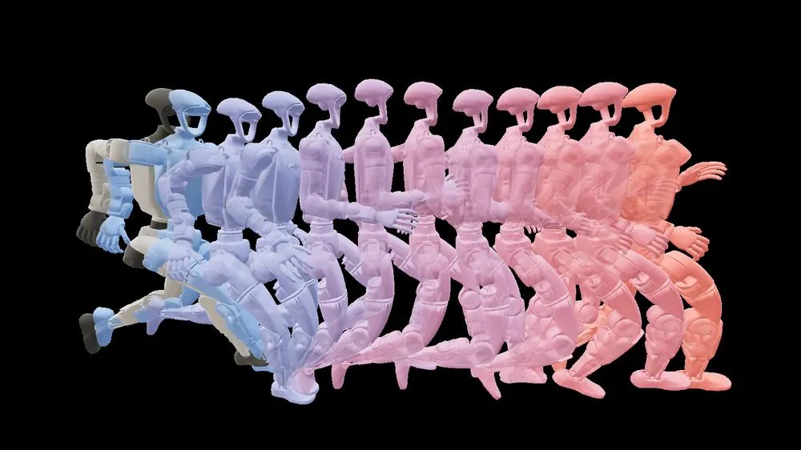
무슨 문제인가
humanoid robot이 사람처럼 다양한 동작을 하게 만들려면 대규모 motion capture 데이터셋을 tracking하도록 policy를 학습시키는 방법이 주로 쓰임. 기존 파이프라인은 동작별 전문 policy를 distillation으로 합치거나, 하나의 policy를 cluster급 compute로 model-free RL로 brute-force 학습시킴. 두 방식 모두 다루는 동작 수가 늘수록 비용이 커지는데, 최신 tracker SONIC은 128개 GPU로 168시간, 약 21,000 GPU-hour가 듦. model-free RL은 모든 동작이 같은 humanoid 강체 역학을 공유한다는 구조를 명시적으로 쓰지 않음. 매번 noisy한 simulator rollout에서 action의 결과를 다시 추정하기 때문에, 동작 커버리지를 늘리는 일이 곧 compute를 늘리는 일이 됨.
어떻게 푸나
SuperMimic은 logged simulator transition으로 하나의 differentiable world model을 학습해 모든 동작이 공유하는 dynamics를 포착함. 학습 loop는 한 iteration 안에서 세 단계를 반복함. 현재 policy가 simulator에서 transition을 모아 replay buffer에 저장함. 이 buffer의 k-step(k=8) 구간으로 world model을 fitting함. world model을 고정한 채 backpropagation-through-time(BPTT)으로 policy를 H=32 step 길이의 imagined rollout에 대해 업데이트함. world model은 상태·보상·관측·종료 확률을 예측하는 head로 구성되고, 입력은 상태·action·도메인 랜덤화 context이며 출력은 다음 상태 예측임. policy는 10프레임의 proprioceptive 관측과 미래 reference motion을 입력받아 joint setpoint를 출력하고, world model의 Jacobian을 통해 직접 미분되는 analytic gradient로 학습됨. critic은 generalized advantage estimation으로 H step 이후의 return을 bootstrap함.
결과
- 같은 BeyondMimic tracking reward를 쓰는 SONIC 대비, SuperMimic은 GPU 1개로 3시간 학습한 만에 SONIC 공개 checkpoint(128개 L40 GPU로 168시간, 약 21,000 GPU-hour)의 return을 넘어섬. wall-clock 시간은 50배 넘게, GPU-hour는 1000배 넘게 줄임.
- 129,514개 benchmark motion 중 실패한 동작 수가 SONIC 공개 checkpoint는 179개인데, SuperMimic은 GPU 1개 3시간 학습 후 25개, GPU 2개 9.8시간 학습 후에는 0개로 줄음.
- 데이터·관측·보상·network 크기를 모두 동일하게 맞춘 PPO-Sim과의 통제 비교에서, SuperMimic은 GPU 1개로 1.2시간 만에 return 0.82에 도달함. PPO-Sim은 GPU 8개를 써도 18시간 안에 이 return에 도달하지 못하고 0.72에 그침.
- 학습된 policy를 실제 Unitree G1 로봇에 동작별 추가 튜닝 없이 그대로 배포해 skipping jump, side roll, 90도 flip, 제자리 360도 flip 네 가지 동작의 전이를 확인함. 정량적 성공률은 본문에서 확인 불가.
한계
저자가 직접 밝힌 한계로, world model은 simulator transition만으로 학습돼 real-world 데이터로 보정하지 않음. 평평한 바닥에서만 학습해 지형이나 물체와의 상호작용은 다루지 않음. velocity encoder 같은 downstream goal interface를 함께 학습하는 실험은 예비 단계로, shared decoder까지 같이 학습하는 경우는 검증하지 않음.
누리랩 연구와의 연결
- world model을 policy 학습 효율화 수단으로 쓰고 BPTT 기반 analytic gradient가 model-free RL보다 빠르게 수렴한다는 결과는, manipulation world model의 학습 효율을 높이는 설계에 참고할 수 있음.
- 하나의 differentiable world model로 여러 동작이 공유하는 dynamics를 amortize한다는 아이디어는, 하나의 world model로 여러 조작 과제를 다루는 multi-task robot learning 설계에 연결할 수 있음. manipulation 적용 사례는 아니라 직접 연결은 약함.
2
82점
What Would Removing This Corruption Change? Failure Attribution for Vision-Language-Action Models
VLA
Failure Detection
relevance 9/10
ICRA·IROS·RA-L 계열 양식 (추정)
Robotics (cs.RO)
VLA policy가 실패할 때 여러 시각적 corruption이 섞여 있어도 어떤 것을 없애야 실패 위험이 줄어드는지를, 깨끗한 이미지 쌍이나 추가 rollout 없이 한 장의 이미지에서 추정하는 factorized risk model을 제안함. OpenVLA와 π0.5에서 frontier VLM 대비 attribution 오차를 약 3분의 1로 줄임.
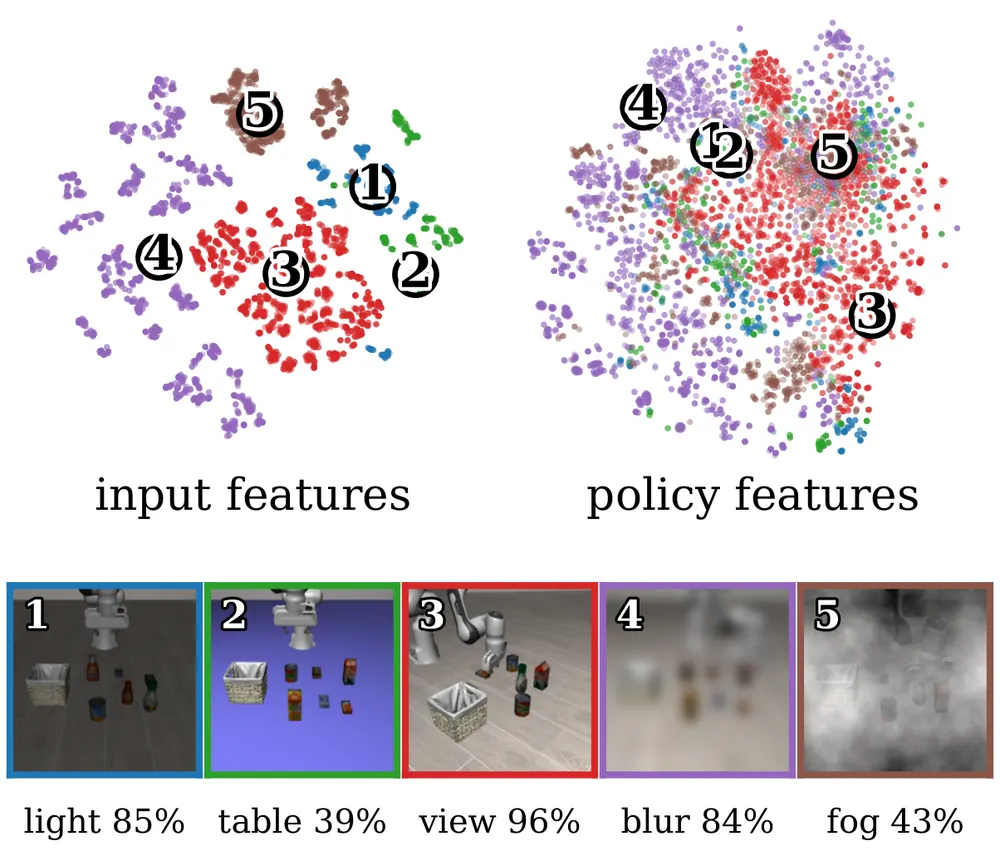
무슨 문제인가
VLA policy는 시각적 입력에 의존하기 때문에 blur나 fog 같은 corruption에 취약함. 어떤 corruption이 평균적으로 해롭다는 사실만으로는 지금 보고 있는 이 episode에서 그 corruption을 없애면 실제로 도움이 되는지 알 수 없음. 여러 corruption이 동시에 나타나면 문제가 더 복잡해짐. corruption이 겹칠 때의 효과를 직접 재려면 같은 상태에서 corruption을 넣고 뺀 쌍을 반복 rollout해야 함. 이는 시뮬레이션에서도 비용이 크고, 실제 로봇에서는 반복된 실패가 하드웨어 위험으로 이어짐. 기존 failure detection 연구는 실패 가능성이 높은지만 예측하거나 일반적인 시각 실마리를 짚을 뿐, 특정 corruption을 제거했을 때 위험이 얼마나 줄어드는지는 답하지 못함.
어떻게 푸나
입력은 현재 카메라 이미지와 task instruction이고, 출력은 corruption별 제거 효과를 나타내는 attribution 값임. 먼저 고정된 SigLIP 이미지-텍스트 encoder로 특징을 뽑고, 이를 scene encoder와 corruption encoder 두 갈래로 나눠 각각 scene latent z_s와 corruption latent z_c를 만듦. z_c는 corruption 종류 수만큼 블록으로 나뉘고, 블록마다 해당 corruption의 존재 여부를 예측하는 presence head가 붙음. z_s와 z_c를 함께 받는 failure head가 실패 위험을 예측함. 특정 corruption k의 attribution은 z_c에서 k번째 블록만 0으로 만드는 latent intervention을 가한 뒤 failure head의 예측이 얼마나 줄어드는지로 계산함. 이 개입이 실제 corruption 제거를 뜻하도록, 블록이 corruption 부재 시 0에 가깝도록 하는 anchor loss를 더함. 또한 scene latent에서 corruption 정보가 새지 않도록 하는 INLP(iterative nullspace projection)와 adversarial loss를 더함. 여기에 intervention 후 예측이 실제 corruption-부재 관측의 예측과 맞도록 하는 counterfactual consistency loss와 presence loss도 더해 함께 학습함.
결과
- LIBERO(시뮬레이션 조작 과제, 10개 LIBERO-Object task)에서 단일/복합 corruption attribution MAE가 OpenVLA 기준 0.095/0.101로 나옴. 비교 대상 VLM 중 가장 강한 VLM(Terra, few-shot attribution에 쓴 VLM 중 하나)은 0.207/0.237이고, π0.5에서도 제안 방법 0.019/0.064가 같은 VLM(Terra) 0.332/0.252보다 낮음.
- 같은 비교에서 frontier VLM(Sol, 비교에 쓴 또 다른 VLM)의 attribution MAE는 OpenVLA 0.30, π0.5 0.32인 반면 제안 방법은 0.09, 0.05로 나타나 약 3배 낮은 오차를 보임.
- Franka 로봇에서 π0.5-DROID로 cube를 bowl에 담는 과제를 수행하며 light·fog·blur·object 네 corruption을 실험함. 예측 attribution(0.96, 0.56, 0.27, 0.03)이 실제 attribution(0.96, 0.56, 0.24, 0.04)과 거의 일치함. 반면 VLM(Sol)은 실제로는 거의 무해한 object 방해물에 0.35라는 높은 점수를 매겨 틀림.
- light와 view corruption이 함께 있을 때 둘 중 하나만 제거하면 위험이 거의 줄지 않지만(light 단독 0.04, view 단독 0.19) 둘 다 제거하면 0.86 줄어 실제 값 0.85에 가까움. 이는 제안 모델이 corruption 간 상호작용을 단순 합산이 아니라 policy별로 다르게 포착함을 보임.
한계
이 방법은 학습 시점에 presence label이 있는 corruption 종류에만 적용되고, 학습에 없던 corruption의 attribution은 다루지 않음. 하드웨어 실험은 Franka 로봇 한 과제, 150개 episode로 범위가 좁고, 시뮬레이션도 LIBERO-Object 10개 과제에 corruption 6종으로 한정됨. attribution의 평가 기준 자체가 같은 corruption 조합의 test episode들에서 집계한 경험적 실패율이라, 개별 episode 수준의 ground truth는 아님.
누리랩 연구와의 연결
- failure detection과 counterfactual reasoning을 분리된 별개 문제가 아니라 하나의 latent intervention으로 묶어 푼 점이 누리랩의 failure detection·diagnosis·recovery 주제와 바로 연결됨. 어떤 corruption을 고쳐야 하는지 순위를 매기는 방식은 recovery 전략 선택에 직접 활용 가능함.
- online monitoring 실험(Figure 1)은 episode 진행 중 실시간으로 risk와 attribution을 갱신하는 구조라, test-time optimization이나 조기 중단 기반 recovery 연구에 baseline으로 쓸 수 있음.
3
80점
UniWALM: Unified World Action Language Model for Embodied Robot Control
VLA
relevance 9/10
Robotics (cs.RO)
비디오·행동·언어를 하나의 diffusion backbone에서 동시에 생성하는 world-action-language model임. 생성한 언어를 다음 step의 memory로 재사용해, 실로봇 Find-the-Item 과제 성공률을 같은 backbone의 FastWAM 11.1%에서 61.1%로 올림.
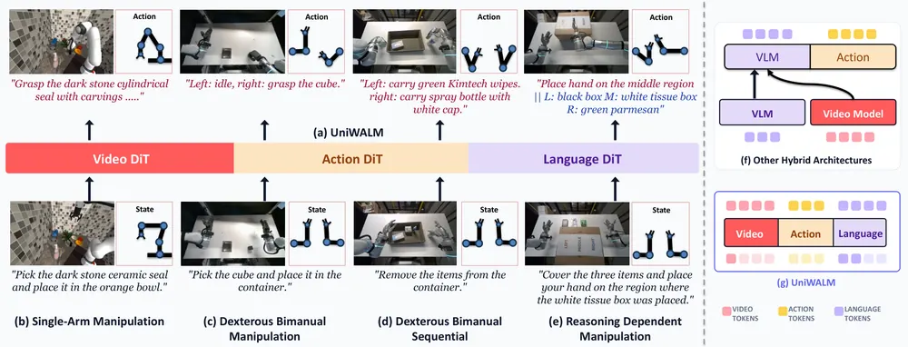
무슨 문제인가
기존 generalist robot policy는 언어를 조건으로만 받고 생성하지는 않음. chain-of-thought 방식 VLA는 제어 단계 안에서 중간 언어를 생성하지만 autoregressive로 token을 디코딩하기 때문에 action이 이 디코딩을 기다려야 하고, 생성한 문장을 다음 step에서 다시 쓰지도 않음. world-action model(FastWAM, DreamZero 등)은 비디오와 action은 함께 모델링해도 언어를 아예 다루지 않음. memory-dependent task를 겨냥한 hybrid 시스템(π0.7 등)은 VLM planner와 video model, policy를 따로 붙임. 서로 다른 목적으로 학습된 두 비전 backbone을 느슨하게 연결하고 memory도 외부 retrieval buffer로 붙여서 추론과 제어가 비동기로 돌고 공유 표현이 없음. 그래서 RMBench처럼 과거 관측 여러 개를 참조해야 하는 memory-dependent 과제에서, 현재 프레임과 prompt만 보는 policy는 그냥 실패함.
어떻게 푸나
UniWALM은 video DiT, action DiT, language DiT 세 전문가(expert)를 mixture-of-transformers 구조로 묶고, 각 층에서 unified self-attention으로 세 modality의 특징을 공유함. 입력은 현재 RGB 관측(2~3뷰), 로봇 proprioception, task 지시문이고, memory-dependent task에서만 앵커 프레임 한 장짜리 visual memory를 추가로 켬. 출력은 미래 비디오, task-completion 신호 β가 붙은 action chunk, 그리고 subtask와 textual memory를 담은 짧은 문자열임. 언어는 autoregressive가 아니라 discrete diffusion으로, action과 같은 denoising pass 안에서 동시에 생성됨. 생성된 subtask+memory 문자열은 다음 control step의 prompt로 다시 들어가 외부 planner나 memory bank 없이 생성된 언어 자체가 memory 역할을 하도록 함. β는 action vector에 함께 붙여 학습되며 subtask가 끝난 시점에만 memory가 갱신되도록 게이트 역할을 함. action 정밀도를 올리기 위해 Flow Matching with Correction(FMC)을 추가로 씀. 학습 중 action 궤적에 인위적으로 잡음을 더 섞은 뒤 원래의 깨끗한 궤적으로 되돌아가는 보정 속도(velocity)를 함께 맞히게 해서, 추론 시 추가 연산 없이 denoising 경로의 작은 이탈을 복구하는 능력을 학습함. video DiT는 Wan2.2 사전학습 모델을 LoRA로 미세조정하고 action·language DiT는 처음부터 학습함.
결과
- MolmoSpaces(조작 시뮬레이션 pick-and-place 벤치마크) 변형 3개 평균에서 같은 backbone인 FastWAM보다 14.8퍼센트포인트 높음. ablation에서는 FastWAM과 거의 같은 구성(언어 생성·FMC·LoRA 없음)의 31.0%에서 언어 생성과 FMC, LoRA를 차례로 더해 41.0%까지 오름.
- RMBench의 memory-dependent 과제(M(n), 최적 행동을 고르려면 과거 관측 n개를 참조해야 하는 과제) 4개 평균 성공률이 사전학습된 언어·추론 모델 없이 34.5%로 나옴. 같은 backbone의 FastWAM 13.3%보다 21.2퍼센트포인트 높고, 과제별 특권 keyframe을 쓰는 Mem-0(28.5%)도 앵커 프레임 1장만으로 넘어섬.
- 실로봇 Find-the-Item 과제(과제 도중 물건을 가려 memory가 필요함)에서 성공률이 FastWAM 11.1%에서 UniWALM 61.1%로 오름. π0.5·GROOT-N1.7 같은 state-of-the-art VLA는 33.3% 이하에 머물러 사실상 우연 수준임.
- RMBench Press Button 과제의 메커니즘별 ablation(30k step 기준)에서 visual memory만 쓰고 언어 생성을 끄면 1%, 반대로 언어 생성만 쓰고 visual memory를 끄면 15%를 기록함. 언어 생성이 memory 효과의 대부분을 차지함을 보임.
한계
복잡한 기하 형태를 쥐거나 어수선한 장면에서는 여전히 실패함. RMBench에서는 subtask와 textual memory가 상태를 맞게 따라가면서도 action expert가 이를 제대로 실행하지 못하는 경우가 있음(과제 경계에서 완료 신호 타이밍이 어긋나 덜 하거나 더 수행함). 거의 같아 보이는 관측인데 내부 memory가 다른 경우 모델이 혼동하는 경우도 있다고 저자가 보고함. 대규모 이종 데이터(video-only, video-VQA 등) co-training은 구조상 지원하지만 이번 실험에서는 검증하지 않고 향후 과제로 남김.
누리랩 연구와의 연결
- 생성한 언어를 다음 step의 prompt로 재사용해 외부 memory 모듈 없이 memory-dependent task를 푸는 방식은 robot memory·language feedback 기반 learning 주제와 직접 맞닿음.
- action과 language를 같은 diffusion pass에서 동시에 생성하는 구조는 VLA에 world model을 결합하는 방향에서 비교 baseline으로 쓸 만함.
4
79점
Training Controllable World Models via Action Influence Maximization
World Model
relevance 9/10
CoRL 2026 (comments 표기)
Robotics (cs.RO)
action-conditioned world model이 expert demonstration만으로 학습되면 action을 무시하고 늘 성공적인 미래만 예측하는 문제를, 데이터의 action influence를 능동적으로 늘리는 방식으로 줄임. Push-T manipulation에서 3천 개 demonstration에 500개 능동 수집 episode만 추가해 30만 개 expert episode로 학습한 모델과 같은 end-effector controllability를 달성함(85배 데이터 절감).
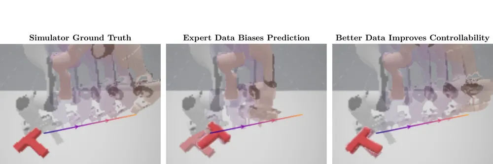
무슨 문제인가
action-conditioned world model은 입력 action이 바뀌면 그 결과로 다른 미래를 예측해야 유용한데, 성공적인 demonstration으로만 학습한 모델은 입력 action과 무관하게 그럴듯한 전문가 수준의 미래를 그대로 재현하는 경우가 많음. 저자들은 이 원인을 데이터의 action influence 부족으로 짚음. expert demonstration은 목표를 달성하기 위한 action 분포가 좁아서, 다음 상태를 예측할 때 모델이 굳이 action을 참고하지 않아도 되는 상황을 만든다는 것임. 이 경우 모델 용량을 아무리 키워도 데이터가 설정한 action influence의 상한을 넘어설 수 없음. world model을 이용한 policy 개선에서 정작 가장 필요한 상황, 즉 학습이 덜 된 policy가 비전형적인 state에서 비전형적인 action을 시도하는 상황을 world model이 가장 못 다루게 됨.
어떻게 푸나
저자들은 먼저 world model의 action 설명력을 action을 알 때와 모를 때의 예측 오차 차이로 정의하는 explained action information 지표를 제안함. 그리고 이 지표가 데이터셋의 conditional mutual information(action과 다음 상태 사이 정보량)으로 상한이 잡힌다는 것을 증명함. 즉 world model을 학습하기 전에 데이터만 보고도 그 데이터로 학습 가능한 controllability의 상한을 알 수 있음. 이 상한을 늘리는 수집 정책을 찾는 문제는 one-step empowerment 목적함수와 같아짐을 보이고, 이를 실제로 최적화하기 위해 Action Influence Maximization(AIM)을 제안함. AIM은 두 보상을 합쳐 reward를 만듦. 하나는 replay buffer에서 추정한 inverse dynamics 우도와 현재 수집 정책의 행동 우도 차이로 만든 mutual information 보상이고, 다른 하나는 목표 state 분포 대비 현재 수집 데이터의 희소성으로 만든 coverage 보상임. 이 reward는 flow matching 기반 density 모델로 추정됨. batch online RL(IQL critic과 AWR policy extraction을 쓰는 diffusion policy actor)로 매 라운드 데이터를 모으고 reward 모델을 다시 추정하는 식으로 반복됨. 입력은 기존 replay buffer의 state-action-다음 state이고, 출력은 다음 라운드에 수집할 state-action pair를 고르는 정책임.
결과
- Push-T manipulation의 end-effector controllability(masked pixel recall)를 기준으로 봄. expert demonstration 3천 개에 AIM으로 수집한 500개 episode를 더한 모델이 expert demonstration 30만 개로 학습한 모델과 같은 수준에 도달함. 85배 데이터 절감임.
- random, recovery(실패 복구형 수집), intrinsic motivation 계열(DADS, DIAYN, ICM, METRA) baseline은 Push-T에서 추가 수집해도 controllability가 정체되거나 낮아짐. AIM만 수집할수록 꾸준히 오름.
- H=33의 긴 horizon 평가에서 Oracle PPO로 모은 3,000개 episode 기본 데이터셋(PPO-3K)에 AIM 500개를 더하면 BC joint recall이 PPO-3K 대비 69% 오르고, expert 30만 개 baseline보다도 54% 높음. 사람이 평가한 선호도(Arena ELO)도 PPO-3K의 732에서 1190으로 오름.
- Four Rooms라는 단순 격자 환경에서는 world model의 explained action information과 state 추출로 측정한 simulation fidelity 사이 상관계수가 0.979로 나타남. action influence가 controllability를 직접 예측한다는 이론을 뒷받침함.
한계
AIM은 여러 learned density reward 모델을 반복해서 재학습해야 해서 구현이 복잡하고 계산량이 큼. reward를 재추정하지 않는 ablation이 오히려 iterative AIM보다 BC joint recall이 10% 더 높게 나와, 초기 reward 모델이 저자들의 예상보다 더 오래 유효하다는 점은 이론과 어긋남. sequential RL로 contextual bandit 문제를 근사하는 과정은 이론적으로 개선을 보장하지 않고, 실험은 Four Rooms와 Push-T 시뮬레이션에 한정돼 실로봇 검증은 없음.
누리랩 연구와의 연결
- world model controllability를 데이터의 action influence로 환원해 능동적으로 데이터를 수집하는 설계임. manipulation world model을 학습할 때 어떤 rollout을 추가로 모을지 정하는 데이터 수집 전략으로 바로 참고할 수 있음.
- expert demonstration만으로는 world model이 action을 무시한다는 분석임. world model 기반 failure detection이나 counterfactual reasoning 연구에서 모델이 실제로 action에 반응하는지 검증해야 하는 이유로 쓸 수 있음.
5
79점
Learning the 4D World through Point Trajectory Forecasting
World Model
relevance 9/10
ICLR 양식 (추정)
Computer Vision and Pattern Recognition (cs.CV)
multi-view 영상 history와 language instruction으로 미래 영상과 관측 지점들의 3D point trajectory를 함께 예측하는 world model을 제안함. point trajectory supervision을 더하면 action-enabled 모델의 실로봇 pick-and-place 성공률도 오름(Banana 58.3%에서 79.2%로).
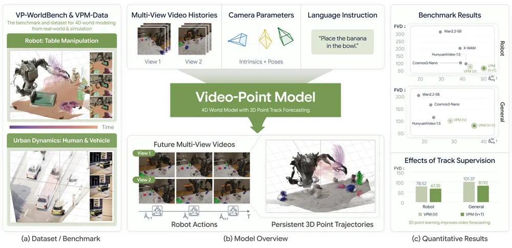
무슨 문제인가
여러 카메라의 미래 영상을 예측하려면 각 시점의 예측이 같은 3D 장면 변화를 설명해야 함. 그런데 기존 video world model은 시점마다 독립적으로 생성하거나 단일 시점만 다뤄서 시점 간 3D 일관성을 보장하지 못함. multi-view를 다루는 일부 연구도 관측된 프레임까지의 2D point tracking에 그치고, 관측 이후 미래 시점의 3D motion을 직접 예측하지는 않음.
어떻게 푸나
VPM(Video-Point Model)은 Cosmos 3의 Mixture-of-Transformers backbone을 확장해 posed multi-view 영상 history와 language instruction을 입력받음. 출력은 임의 시점의 미래 영상과, 관측 프레임에서 고른 점들의 지속적 3D trajectory임. 카메라별 Plücker ray embedding과 4D RoPE(시간·공간 3축에 view 축을 추가)로 카메라 기하와 view 정체성을 구분해 여러 view의 latent token을 하나의 시퀀스로 처리함. trajectory forecasting head가 generator의 중간 attention feature에서 2D 위치·깊이·신뢰도를 여러 번 정제해 3D로 unproject함. 이렇게 뽑힌 feature는 trajectory loss와 cross-view correspondence loss로 직접 지도학습됨. robot action은 추가 토큰 modality로 넣어서 video·action을 함께 rectified flow로 denoising하는 action-enabled 확장도 둠.
결과
- VP-WorldBench(자체 제작한 멀티뷰 영상·3D 예측 평가셋) 시뮬레이션·실환경 모든 split에서, 영상(V)에 point trajectory(T)까지 학습한 VPM(V+T)이 영상만 학습한 VPM(V)보다 나음. FVD와 3D motion accuracy(δ3Davg) 모두 개선되고, 시뮬레이션 로봇 split에서는 δ3Davg가 43.62에서 50.05로 오름.
- 실로봇 pick-and-place 3과제에서, point supervision 없이 action(A)까지 학습한 VPM(V+A) 대비 point trajectory까지 더한 VPM(V+T+A)의 성공률이 모두 오름. Banana 58.3%에서 79.2%, Cup 64.6%에서 70.8%, Cube 43.8%에서 54.2%로 오름.
- RoboCasa 시뮬레이션 조작 과제 성공률도 Cosmos3-Nano backbone 72.0%, point supervision 없는 VPM(V+A) 73.4%에서 VPM(V+T+A) 76.2%로 오름.
- out-of-domain 평가인 ReCamMaster, CMU Panoptic, RoboCasa Kitchen에서도 VPM(V+T)이 VPM(V)을 포함한 모든 baseline을 앞섬.
한계
point supervision은 로봇과 annotated object 표면에만 있고 장면 전체를 덮지 않음. skeletal annotation이라 천이나 머리카락 같은 독립적인 비강체 움직임은 다루지 못함. inference 시 camera intrinsic과 pose를 안다고 가정하고, view 수가 늘수록 계산 비용이 커짐. 예측한 trajectory를 inverse kinematics로 바로 action으로 바꾸는 zero-shot rollout은 저자도 정량 평가할 만큼 안정적이지는 않다고 밝힘.
누리랩 연구와의 연결
- multi-view 3D point trajectory supervision이 world model의 action-conditioned policy 학습에 직접 이득을 준다는 실험 결과임. world model과 manipulation 연구에서 representation 설계 근거로 쓸 수 있음.
- scene 전체가 아니라 point 단위로 3D motion을 지도학습하는 방식이라, object-centric 3D/4D representation 연구와 비교해 볼 만함.
6
79점
VPFlow: Value-Predictive Planning with Imperfect World Models for Offline Goal Reaching
World Model
relevance 7/10
Meta 자체 양식
Machine Learning (cs.LG)
offline goal-conditioned RL에서 world model이 다음 상태를 정확히 예측하지 않아도, goal까지의 value만 잘 예측하면 planning이 된다는 것을 보임. OGBench(오프라인 goal-conditioned RL 벤치마크) state 데이터셋 17개 평균 성공률을 가장 강한 baseline 32.9%에서 63.2%로 올림.
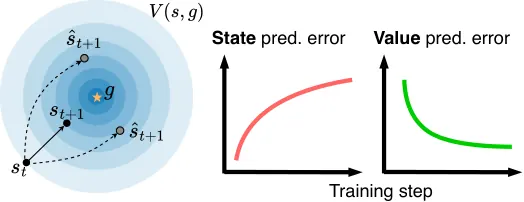
무슨 문제인가
기존 offline goal-conditioned RL 방법(behavioral cloning, implicit Q-learning, contrastive learning 등)은 reactive policy나 value function을 한 번 학습함. 테스트 시점에는 고정된 채로 즉시 행동하기 때문에, 어려운 과제에서 연산을 더 줘도 결정이 나아지지 않음. world model로 planning하면 테스트 시점 연산을 늘려 더 나은 결정을 내릴 수 있다는 장점이 있음. 하지만 Dreamer나 TD-MPC 계열을 포함한 기존 방법은 world model이 다음 상태 또는 다음 latent를 정확히 예측해야 planning이 성립한다고 가정함. 이 가정은 pixel 기반 모델에서 latent 기반 모델로 옮겨가면서도 검증 없이 그대로 이어져 왔음. world model이 불완전할 수밖에 없는 offline 데이터 환경에서 이 가정이 실제로 필요한지는 확인된 바 없음.
어떻게 푸나
VPFlow는 offline goal reaching에서 한 궤적 안의 상태 s_t부터 미래에 relabel한 목표 g=s_{t+d}까지의 discounted return을 이용함. 이 return은 시간 거리 d만으로 정해지는 closed-form Monte Carlo return임. 이 return을 직접 회귀 목표로 삼아 observation encoder, latent dynamics, goal-conditioned value function을 하나의 value-prediction loss로 함께 학습함. 상상한 미래 latent는 실제 미래 상태의 encoding과 맞추지 않음. 그 latent에서 예측한 goal-reaching value가 정답 return에 가까워지도록만 학습되어, 관측 재구성이나 target network 없이도 latent가 한 점으로 겹쳐지는 representation collapse를 막음. 행동은 one-step flow policy가 action chunk로 생성하고, 이 policy는 behavior-cloning 규제를 받는 conditional flow matching으로 데이터 분포 근처에 머물도록 함께 학습됨. 테스트 시점에는 이 policy의 noise 공간에서 evolutionary search(ε-ES)로 noise를 조금씩 바꿔 봄. 상상한 rollout의 generalized advantage(GAE)가 더 높아지는 noise를 고르고, 그 noise가 디코딩한 action chunk를 실행함.
결과
- OGBench state 데이터셋 17개 평균 성공률이 가장 강한 model-free baseline(GCIQL) 32.9%에서 VPFlow 63.2%로 오르고, pixel 데이터셋 13개 평균은 가장 강한 baseline(CRL) 27.5%에서 37.6%로 오름.
- 같은 latent world model 계열인 LeWorldModel, PLDM, TD-MPC2는 pixel 데이터셋 13개 중 12개에서 성공률 0%를 기록함.
- state 예측을 강제하는 ablation은 다음 latent 예측 오차를 1~8 자릿수 낮췄지만 성공률은 오르지 않고, scene-play에서 78.4%에서 28.0%로, visual-cube-single에서 79.2%에서 0.0%로 오히려 낮아짐.
- action 공간에서 CEM(cross-entropy method, 샘플링 기반 최적화 기법)으로 계획하는 ablation(A-CEM)은 성공률 10.0%로, steering을 아예 하지 않은 경우(28.0%)보다도 낮음. noise 공간에서 evolutionary search를 쓰는 VPFlow는 같은 조건에서 52.1%(locomotion·manipulation 30개 평균)를 기록함.
한계
평가는 OGBench 시뮬레이션 locomotion·manipulation 데이터셋 30개로 한정되고 실로봇 검증은 없음. planning horizon이 action chunk 한 개(길이 16) 수준으로 짧아 긴 과제에서는 terminal value 추정에 많이 의존함. steering iteration을 늘리면 일부 데이터셋에서 성공률이 오르다가 다시 낮아지는 현상이 있는데, 저자들은 이를 학습된 dynamics·value의 근사 오차를 과도하게 이용하기 때문으로 분석함. 학습·테스트 시점 hyperparameter를 데이터셋마다 따로 튜닝해야 함도 저자가 밝힌 한계임.
누리랩 연구와의 연결
- world model이 다음 상태를 정확히 복원하지 못해도 value만 잘 예측하면 planning에 쓸 수 있음. failure detection이나 test-time optimization에서 world model 정확도 요구 수준을 낮춰 잡을 수 있는 근거로 참고할 만함.
- 생성 policy의 noise 공간에서 evolutionary search로 테스트 시점에 policy를 개선하는 방식은 test-time optimization/inference-time planning 연구에서 비교 baseline으로 바로 쓸 수 있음.
7
78점
LaLa-World: Scaling Latent World Models with Natural Language Actions
World Model
relevance 9/10
Computer Vision and Pattern Recognition (cs.CV)
numerical action과 이미지·영상의 시각 변화를 모두 language로 통일해 서로 다른 도메인의 control data를 하나의 JEPA-style world model로 학습함. MPC planning 시뮬레이션 5개 도메인 평균 성공률이 기존 최고 LWM인 JEPA-WMs의 64.6%에서 72.1%로 오름.
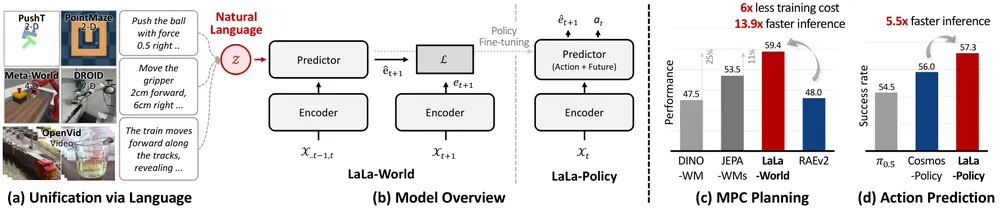
무슨 문제인가
JEPA-style latent world model(LWM)인 V-JEPA 2-AC, DINO-WM은 numerical action으로 조건을 줌. 그런데 도메인마다 action의 차원과 물리적 의미가 달라서 여러 도메인의 control data를 함께 학습하기 어려움. 이미지·영상 데이터는 numerical action label이 없어서 action-conditioned predictor 학습에 못 씀. video generation model은 language conditioning으로 이 문제를 풀었지만 LWM 쪽에서는 아직 적용되지 않음.
어떻게 푸나
LaLa-World는 numerical action을 고정 템플릿으로 자연어로 바꿈(예: move 2 left and 4 up). 여기에 OpenVid 영상 캡션과 OmniEdit·ShareGPT의 이미지 편집 지시문까지 더해 하나의 predictor를 학습시킴. predictor는 Qwen3.5-0.8B language model을 백본으로 써서 language condition을 텍스트로 읽고, DINOv2 또는 DINOv3로 인코딩한 과거 관측 latent와 함께 입력받아 다음 latent를 예측함. encoder는 고정하고 predictor만 squared error loss로 학습함. MPC planning에서는 CEM으로 후보 action sequence를 샘플링하고, 각 sequence를 언어로 바꿔 넣어 얻은 상상 rollout의 마지막 latent와 목표 latent 사이 거리로 비용을 매김. pretrained LaLa-World에 action query를 추가해 fine-tuning하면 action chunk와 미래 latent를 함께 예측하는 LaLa-Policy가 됨.
결과
- MPC planning 시뮬레이션 5개 도메인(Wall·PointMaze·Push-T·MetaWorld 2종) 평균 성공률이 best LWM baseline인 JEPA-WMs의 64.6%에서 LaLa-World 72.1%로 오름. 로봇 포함 5개 도메인(Rope·Granular·RoboCasa-R·RoboCasa-P·DROID, 이 중 RoboCasa 2개는 zero-shot 평가) 평균도 44.8%에서 50.5%로 오름.
- 학습에 없던 RoboCasa에 대한 zero-shot planning 성공률이 Reach 40.6%, Place 46.9%로 비교 대상 중 가장 높음.
- vision encoder·language condition·학습 데이터를 맞춰 비교한 RAEv2(diffusion 기반 generative world model) 대비, LaLa-World는 planning 성능 59.4%로 RAEv2 최고치 48.0%를 넘음. 학습 비용은 6배 적고 5-step RAEv2보다 추론이 13.9배 빠름.
- LaLa-World로 초기화한 LaLa-Policy는 LIBERO 평균 성공률 97.7%로 Cosmos-Predict2로 초기화한 Cosmos Policy의 97.3%와 비슷하면서, 추론 시간은 LIBERO에서 5.2배, RoboCasa에서 5.5배 빠름.
한계
DROID 단일 도메인만 보면 LaLa-World 40.2%가 JEPA-WMs 43.0%, V-JEPA 2-AC 42.9%보다 낮아서 모든 도메인에서 이기지는 못함. LaLa-Policy는 LIBERO·RoboCasa 시뮬레이션에서만 평가했고 실제 로봇 정책 평가는 없음. decoder는 world model 학습에는 쓰이지 않고 시각화를 위해 별도로 학습한 것임.
누리랩 연구와의 연결
- 서로 다른 도메인의 control data와 이미지·영상을 language로 통일해 하나의 world model로 학습하는 접근이라, test-time MPC planning과 world model 연구에서 scaling 전략으로 참고할 만함.
- world model pretrained weight를 policy로 fine-tuning하는 LaLa-Policy 방식은 VLA의 pretrained representation 재사용 전략과 비교 대상이 됨.
8
78점
AEON: Unifying Video and 3D World Models
World Model
relevance 8/10
NeurIPS 2026 채택
Computer Vision and Pattern Recognition (cs.CV)
비디오 기반 world model과 3D 기반 world model을 4D Gaussian Splatting(4DGS: 가우시안 입자가 시간에 따라 나타나고 움직이고 사라지는 방식으로 장면을 표현함)이라는 하나의 표현으로 통합함. text나 image 조건에서 4DGS world를 생성해 video-to-4D 재구성과 새 카메라 경로 렌더링 양쪽에서 기존 방법보다 높은 PSNR과 VBench 점수를 냄.
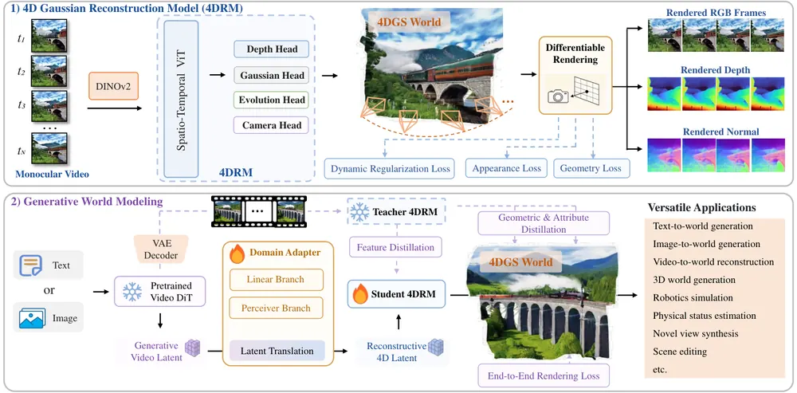
무슨 문제인가
비디오 생성 모델 기반 world model은 Sora처럼 실제와 비슷한 장면을 만들지만 프레임마다 따로 생성되기 때문에 3D 일관성을 유지하지 못함. 3D 생성 모델 기반 world model은 Marble처럼 기하학적으로 일관된 장면을 만들지만 정적인 표현에 머물러 장면의 동적인 변화를 잘 담지 못함. 두 계열 모두 한쪽 장점을 포기하는 구조라서, 실감나는 외형과 3D 일관성과 동적 변화를 동시에 지니면서 지속적으로 탐색 가능한 world model이 없었음. 이 논문은 두 계열의 장점을 한 표현 안에 합치는 것을 목표로 함.
어떻게 푸나
AEON은 text 프롬프트나 이미지를 입력받아 4DGS(각 가우시안 입자가 위치·크기·회전·불투명도·색과 함께 활성 시점·지속시간·선속도·각속도 같은 시간 속성을 가짐)로 표현된 지속적인 4D world를 출력함. 먼저 4D Gaussian Reconstruction Model(4DRM)을 학습해 monocular video 한 편에서 depth·카메라 pose·Gaussian 외형·시간에 따른 변화를 각각 담당하는 네 개의 head로 4DGS를 복원하도록 함. 이후 사전학습된 video diffusion model(Wan 2.2)의 생성적 video latent를 4DRM이 쓰는 reconstructive latent로 바꾸는 domain adapter를 학습함. domain adapter는 closed-form ridge regression으로 초기화한 선형 branch와 Perceiver 기반 비선형 branch를 학습 가능한 gate로 합친 구조임. 학습은 3단계로 진행함. 1단계는 4DRM을 실제 비디오로 복원 학습시킴. 2단계는 4DRM을 teacher로 고정한 뒤 domain adapter와 student 4DRM을 attribute·geometry·feature distillation으로 학습시킴. 3단계는 video VAE가 복원한 프레임을 의사 정답으로 써서 전체 파이프라인을 end-to-end rendering loss로 미세조정함. 추론 시에는 카메라 pose나 depth 입력 없이 text나 이미지만으로 4DGS world를 생성하고, 임의의 시점과 시각에서 렌더링하거나 장면을 편집할 수 있음.
결과
- 4D 생성 평가(image-text 조건 30개 장면, VBench: 생성 비디오 품질을 재는 표준 지표 모음)에서 AEON(Wan 2.2)의 I2V Subject 점수가 0.913으로, per-frame 3DGS를 쓰는 기존 방법 Lyra의 0.865보다 높음. Aesthetic Quality도 0.531 대 0.459로 앞섬.
- video-to-4D 재구성 평가(Dycheck, DaVis 데이터셋)에서 AEON의 PSNR이 각각 14.487, 24.661로, 비교한 기존 방법 NeoVerse(14.269, 23.929)와 StreamSplat(11.876, 23.748)보다 높음. AEON은 카메라 pose나 depth를 별도로 입력받지 않고도 이 성능을 냄.
- 새 카메라 경로 렌더링 평가(VBench 6개 지표, in-the-wild 비디오 30개)에서 AEON이 6개 중 4개 지표에서 최고 점수를 기록함.
- ablation에서 distillation loss를 빼면 DaVis PSNR이 24.661에서 16.718로 크게 낮아짐. teacher 4DRM의 기하학적 지식 전달이 성능에 크게 기여함을 보임.
한계
생성되는 4D 장면의 시간 길이는 video diffusion model의 시퀀스 길이에 묶여 있고, 저자들은 이를 늘리는 방법을 향후 과제로만 제시함. 생성된 비디오에서 한 번도 관측되지 않은 영역은 복원할 수 없어 시점을 크게 바꾸면 빈 공간이 드러날 수 있음. 4DRM 1단계 학습에는 depth·normal 정답이 있는 대규모 4D 비디오 데이터셋이 필요하고, 실제 로봇이나 물리 시뮬레이터에서의 검증은 제시되지 않음.
누리랩 연구와의 연결
- 생성된 4DGS world는 카메라 pose와 depth를 별도로 추정하지 않고도 임의 시점에서 실시간 렌더링과 편집이 가능해, robot manipulation의 test-time 시뮬레이션이나 world model 기반 planning에 쓸 환경으로 검토할 만함.
- object-centric 4D representation과 scene dynamics를 명시적 입자 단위로 분리해 표현하는 점은 누리랩의 object-centric 3D/4D representation·3DGS 주제와 직접 연결됨.
9
78점
NeoWorld-3: From Pixels to Code-Defined Physical Worlds
World Model
relevance 8/10
Computer Vision and Pattern Recognition (cs.CV)
비전 관찰을 수정 가능한 파이썬 프로그램으로 바꿔 물리 상호작용이 가능한 3D 환경을 재구성하는 coding-agent 프레임워크임. RoboCasa365 장면 재구성에서 part 간 침투 비율(P-Pen)을 가장 강한 baseline Codex+BlenderMCP의 9.21%에서 0.67%로 낮춤. 재구성한 쌍둥이 환경에서 짠 조작 계획을 실제 dual-arm 로봇에 zero-shot으로 실행해 Real-Sim-Real 루프를 완성함.
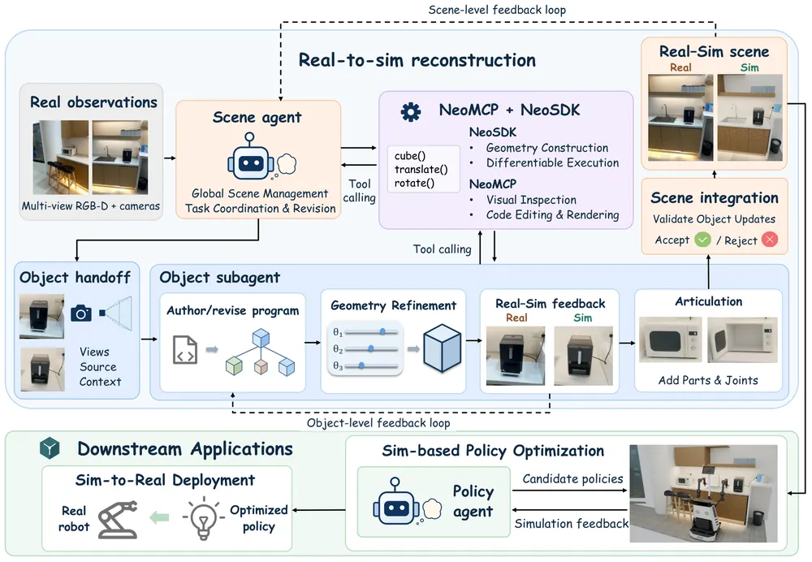
무슨 문제인가
기존 생성형 3D 모델(DreamFusion, TRELLIS, SAM 3D 등)은 겉보기 형태는 그럴듯하지만 black-box mesh나 고정된 latent로 결과를 내놓음. 그래서 부품 단위 기하 구조나 관절 제약, 충돌 경계, 질량·마찰 같은 물리 속성을 직접 조회하거나 고칠 수 없고, interactive simulation이나 로봇 planning에 바로 쓰기 어려움. coding agent로 3D 프로그램을 짜는 대안이 있지만 두 가지 문제가 남음. VLM이 토큰 단위로 숫자를 예측하는 방식은 관찰과 정밀하게 맞출 만한 수치 정밀도가 부족함. 물리 검증 단계도 없어 mesh가 watertight하지 않거나 관절이 잘못 설정되거나 부품끼리 겹치는 문제가 그대로 남음.
어떻게 푸나
NeoWorld-3는 각 재구성 대상을 파이썬 구성 프로그램 S, 조정 가능한 파라미터 θ, 물체 pose T로 이루어진 tunable prototype P=(S, θ, T)로 표현함. 저수준 기하 구성·미분 가능 실행을 맡는 NeoSDK와, vision-language agent가 시각 검사·코드 수정·렌더링을 요청할 수 있게 이 기능을 tool-callable API로 열어주는 NeoMCP 두 층으로 구성됨. 장면 단위에서는 scene agent가 전체 레이아웃을 관리하며 개별 물체를 object subagent에 위임함. subagent는 멀티뷰 관찰과 렌더링을 비교해 가며 프로그램 구조를 수정하거나(structural editing), gradient 기반으로 파라미터만 다듬음(differentiable refinement, nvdiffrast로 rasterize). 완성된 프로그램은 mesh 연결성·관절 동작 일관성을 검사해 watertight 여부와 관절 충돌을 걸러냄. 실로봇 적용 단계에서는 손목 카메라로 장면을 스캔해 MuJoCo 쌍둥이를 만들고 hand-eye calibration으로 로봇 좌표에 등록함. 쌍둥이 안에서 잡기·이동 궤적을 계획하고 충돌을 검증한 뒤, 실행 중에는 모터 전류로 추정한 접촉력을 이용한 closed-loop 제어로 쌍둥이와 실제 환경 사이의 오차를 보정함.
결과
- object-level 재구성(3DCodeBench: 단일 object 재구성 과제 212개)에서 Chamfer distance가 기존 coding-agent baseline 중 최저인 VIGA의 0.0680에서 0.0365로 낮아짐. Framed IoU는 0.6547에서 0.7550으로 오름.
- articulated object 재구성(PartNet-Mobility: 관절 달린 object 데이터셋 77개)에서 부품 간 겹침 비율(AOR)이 Codex+BlenderMCP 0.0035, Articraft 0.0001 대비 0.0000으로 낮아짐. 겹침이 관측되지 않는 수준임.
- scene-level 재구성(RoboCasa365: 가정용 로봇 시뮬레이션 장면 10개)에서 P-Pen이 Codex+BlenderMCP 9.21%보다 크게 낮은 0.67%, 물체 중심 거리(OCD)는 VIGA 41.63cm보다 낮은 25.94cm를 기록함. NeoMCP+NeoSDK를 범용 BlenderMCP로 바꾼 ablation은 P-Pen이 45.41%로 뛰어올라, 전용 물리 검증 도구가 agent 선택보다 더 중요함을 보임.
- 실제 AgileX Piper dual-arm 로봇에서 50mm 정육면체를 그릇에 넣기 전 wrist 재검사로 자세를 5.3mm, 6.7도 보정했고, 전자레인지 문 열기·물건 옮기기·문 닫기를 잇는 장시간 양팔 과제를 최단 109초에 완료함.
한계
수동적인 시각 관찰만으로는 내부 질량 분포, 무게중심, 접촉 마찰 계수, 가려진 관절 한계 같은 물리 속성을 알아낼 수 없다는 점을 저자도 한계로 명시하고, 능동적 탐색(로봇이 밀어보기 등)을 향후 과제로 제안함. 실로봇 검증은 dual-arm Piper 한 세트, 과제 2종(정육면체-그릇 놓기, 전자레인지 포함 연쇄 과제)에 그치고 성공 판정은 현장 관찰자가 함. real-to-sim-to-real 재계획 속도는 장면 재구성·재보정에 걸리는 시간에 묶여 있다고 저자들이 밝힘.
누리랩 연구와의 연결
- 비전 관찰을 실행 가능한 프로그램으로 바꿔 기하·관절·물리 속성을 한 번에 다루는 방식은 object-centric 3D representation과 scene graph 연구에서 real-to-sim 파이프라인 비교 대상으로 쓸 수 있음.
- 재구성한 쌍둥이에서 짠 계획을 실제 dual-arm 로봇에 바로 실행해 성공시킨 Real-Sim-Real 사례는 다른 world model 기반 로봇 연구의 실로봇 검증 가능성 판단 근거로 참고할 만함.
10
77점
Replan for Error Recovery: Training Embodied VLMs through Verifiable Interaction with Action-Grouped Turn-GSPO
VLA
relevance 10/10
ICLR 양식 (추정)
Robotics (cs.RO)
embodied VLM이 조작 중 발생한 오류를 스스로 인지하고 replanning으로 복구하도록 검증 가능한 interaction으로 학습시킴. ERR-Bench에서 2B 모델의 Recovery Rate를 42.52%에서 65.47%로, Strict Success Rate를 10.64%에서 20.89%로 올림.
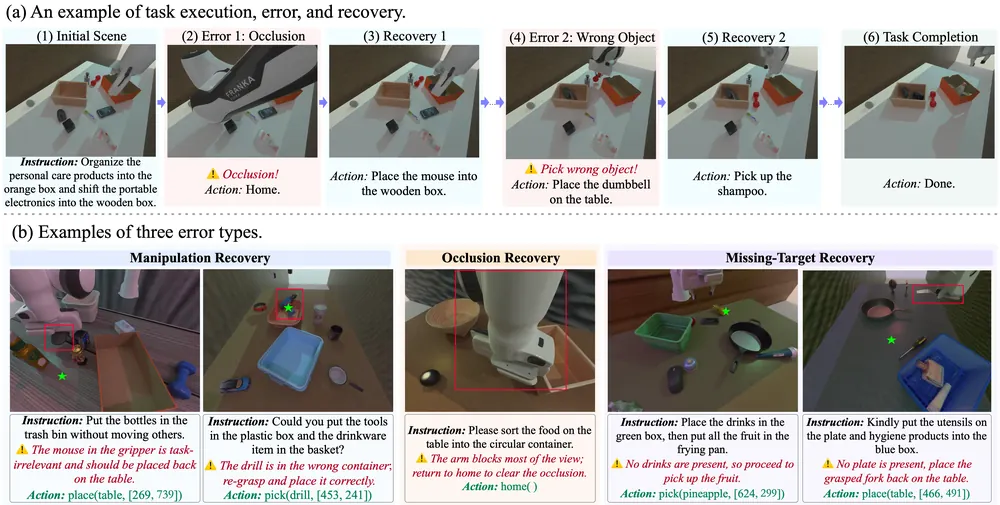
무슨 문제인가
기존 오류 복구 방법은 두 갈래임. inference-time 방법은 prompting이나 외부 monitor로 오류를 감지해 replanning을 유도하지만 policy 자체는 고정돼 있어 복구 능력이 원래 모델의 한계에 묶임. 학습 기반 방법은 오류 사례와 정답 수정 경로를 모방하는 reference-based supervision을 쓰는데, 이는 실제 복구 action의 검증된 결과가 아니라 정답 경로를 따라 하는 것이라 그 action이 실제로 환경을 개선하는지는 확인하지 않음. 검증 가능한 interaction으로 복구를 학습하려면 오류와 진행 상태에 대한 명시적 feedback을 주는 환경이 필요한데, 기존 embodied benchmark는 이런 feedback을 제공하지 않음.
어떻게 푸나
저자들은 RoboTwin 2.0 기반으로 ERR-Env를 만듦. 이 환경은 snapshot을 저장·복원할 수 있고 pick·place·home·done 네 가지 action으로 조작하며, task별 checker가 진행도(progress)·오류 상태(penalty)·완료 여부(success)·가시성(visibility)을 반환함. 이 환경에서 세 종류의 오류 상황을 만들어 학습·평가용 ERR-Bench를 구성함. 오류 유형은 잘못된 물체 배치를 고치는 Manipulation Recovery, 로봇 팔이 시야를 가릴 때 재관측하는 Occlusion Recovery, 목표 물체가 없을 때 재계획하는 Missing-Target Recovery 세 가지임. 학습은 Qwen3-VL-2B-Thinking을 SFT로 초기화한 뒤 AGT-GSPO(Action-Grouped Turn-GSPO)라는 online RL로 이어짐. AGT-GSPO는 매 turn마다 grounding reward, checker 기반 action reward(progress와 penalty의 차이), outcome reward를 합쳐 turn-level reward를 만듦. 그리고 pick/place/home/done처럼 같은 action type끼리만 advantage를 정규화하는 action-grouped advantage estimation을 적용함. 여기에 실행 유효성과 상태 변화 방향에 따라 advantage를 낮추거나 키우는 semantic advantage shaping을 더함. 마지막으로 sequence 단위 importance ratio를 쓰는 GSPO(Group Sequence Policy Optimization) 목적함수로 policy를 업데이트함. 입력은 현재 관측 영상, instruction, 이전 interaction history이고 출력은 reasoning과 함께 직렬화된 tool call임.
결과
- ERR-Bench 전체 평가에서 Strict Success Rate(과제 완료와 무오류 종료를 모두 요구하는 지표)가 SFT 초기화의 10.64%에서 AGT-GSPO 학습 후 20.89%로 오름. Recovery Rate(오류 발생 후 복구 행동으로 과제를 이어간 비율)는 42.52%에서 65.47%로 오름.
- 크기가 훨씬 큰 closed-source 모델 Qwen3.8-Max는 Recovery Rate가 57.69%임. 2B 크기의 ERR-VLM은 Recovery Rate 65.47%로 이를 넘지만, Strict Success Rate는 Qwen3.8-Max가 27.21%로 ERR-VLM의 20.89%보다 높음.
- 실제 AIRBOT 로봇 5개 과제에서, occlusion 뒤 재관측 행동을 측정하는 Active Re-observation Rate가 SFT의 0%에서 ERR-VLM Full의 78.7%로 오름.
- ablation에서 penalty feedback(오류에 대한 벌점)을 제거하면 Strict Success Rate가 20.89%에서 2.80%로 크게 낮아짐. 오류를 유발해도 진행도만 보상받는 잘못된 신호가 신호를 아예 빼는 것보다 더 해롭다는 것을 보여줌.
한계
저자가 직접 밝힌 한계로, 압축된 high-level action space(pick/place/home/done)와 제한된 오류 유형만 다루고, 학습은 RoboTwin 2.0 기반 단일 시뮬레이션 환경에서만 이뤄짐. 계산 자원 제약으로 2B 모델만 학습해 모델 크기에 따른 체계적 비교는 하지 않음. 실로봇 검증은 AIRBOT 팔 한 종류, 과제 5개로 범위가 좁음.
누리랩 연구와의 연결
- failure detection·recovery라는 누리랩 우선 주제에 정확히 맞닿아 있음. turn-level verifiable reward로 recovery policy를 online RL로 학습하는 방식은 VLA의 test-time error recovery 연구에서 구체적 baseline으로 쓸 수 있음.
- checker 기반 reward 설계(progress에서 penalty를 뺀 state score)는 다른 manipulation RL 환경에서도 reward shaping 참고 사례로 쓸 수 있음.
11
74점
Planning under Noise with Neural Operators
RL
relevance 7/10
Machine Learning (cs.LG)
screened-Poisson 식의 경계조건을 장애물은 반사(Neumann), 목표는 흡수(Dirichlet)로 섞어 noise-aware value field를 neural operator로 학습하는 PUN을 제안함. 4D replanning benchmark에서 noise level 4까지 95.00~100% 성공률을 내면서 가장 빠른 baseline인 RRT보다 3.29배 빠름.
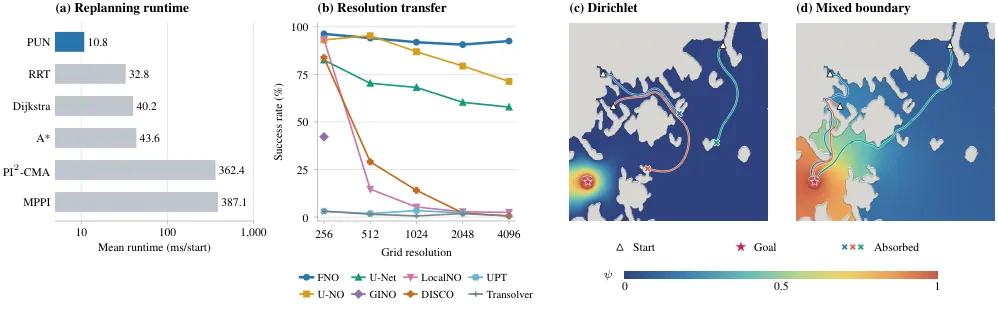
무슨 문제인가
실제 로봇은 명령한 동작을 정확히 실행하지 못하고 오차가 누적되므로, 여유를 두고 짠 경로도 noise 아래서는 벽에 부딪힐 수 있음. PRM·RRT·A* 같은 classical planner는 결정론적 시스템을 가정해 noise 처리를 tracking controller에 미루며, MPPI·PI2-CMA는 sampled trajectory cost로 제어열을 최적화함. execution noise 아래서 최적 feedback을 구하려면 Hamilton-Jacobi-Bellman(HJB) 방정식을 풀어야 하는데, grid 기반으로 풀면 차원이 늘수록 연산량이 지수적으로 증가함. control-noise matching 조건 아래서는 HJB를 선형 screened-Poisson 방정식으로 바꿀 수 있지만, 경계조건 설정과 mesh 없는 효율적 계산이라는 문제가 남아 있었음.
어떻게 푸나
PUN(Planning Under Noise)은 목표 지점에는 Dirichlet 조건을, 장애물 경계에는 흡수 대신 반사하는 Neumann 조건을 부여함. 기존 zero-Dirichlet 경계는 샘플 경로를 벽에서 멈춰 세워 긴 경로일수록 목표 신호를 약화시키는 반면, Neumann 조건은 장애물 경계에서 값의 변화율(flux)을 0으로 둬 경로가 장애물을 피해 자유 공간을 계속 탐색하다 목표에 도달하게 함. 이 PDE를 config space mesh 없이 풀기 위해 Monte Carlo 해법인 Walk on Stars(WoSt)를 임의 차원으로 확장해 dimension-general kernel과 step weight를 유도함. 다만 국소적인 Monte Carlo 추정 변동이 gradient 방향을 뒤집을 수 있어, 직접 planning에 쓰면 비용이 큰 샘플링이 필요해짐. PUN은 이 계산을 amortize하기 위해, 완전히 수렴하지 않은 noisy한 WoSt label로부터 geometry-to-field mapping을 학습하며, 입력은 장애물·목표 occupancy mask·cost·noise 수준임. 출력인 desirability field의 gradient가 제어를 정하고, 추론 시에는 예측된 전역 field를 기준으로 도달 가능한 지점들을 평가하는 local search를 적용해 gradient만 따라가는 것보다 성공률을 높임.
결과
- 4D replanning benchmark(noise level 4까지)에서 PUN이 모든 구간에서 가장 높은 성공률을 기록함. noise level 4에서 성공률 95.00%로 가장 강한 baseline인 RRT의 85.83%보다 9.17퍼센트포인트 높음. 같은 조건에서 runtime은 11.66ms/start로 RRT의 38.31ms/start보다 3.29배 빠름.
- 2D application benchmark(592개 map, 37,888개 시작점)에서 WoSt label로 학습한 FNO(Fourier Neural Operator) 기반 local search(10, test-time 지역 탐색 횟수)의 성공률은 93.62%임. 같은 field에 대한 direct WoSt 추론의 local search(10) 성공률 36.45%보다 훨씬 높음.
- 256x256에서 학습한 FNO는 재학습 없이 4096x4096까지 해상도를 올려도 local search(10) 성공률 90.62~96.25%를 유지함(4096 해상도에서 92.50%). 같은 조건에서 U-NO는 71.25%, U-Net은 57.81%에 그침.
- training objective ablation에서 value supervision을 빼면 gradient-following 성공률이 83.87%에서 67.71%로, local search(10) 성공률이 93.62%에서 83.26%로 가장 크게 낮아짐.
한계
value field는 반사 경계조건을 가정해 유도됨. local search로 충돌 실패를 복구할 수는 있지만, 그래프 상에서 도달 가능하다고 판단된 경로도 noise 아래서는 충돌 없이 실행된다고 보장하지는 않음. control-noise matching(Assumption 1)이라는 표준 가정에 의존하며, 실험도 이 가정이 타당한 범위인 최대 4차원 기하 planning으로 한정되고 접촉이 있는 전신 로봇 모델은 테스트하지 않음. 저자들도 긴 복도가 있는 미로 같은 adversarial geometry는 gradient가 약하거나 잘 풀리지 않아 여전히 어렵다고 밝힘.
누리랩 연구와의 연결
- test-time optimization·inference-time planning과 직접 연결됨. 학습된 global field는 두고 local search 깊이만 늘려 test-time에 성공률을 올리는 방식은, 추론 시점 연산을 늘려 policy를 개선하는 다른 연구와 비교할 baseline이 됨.
- noise-aware value field를 geometry마다 재학습 없이 zero-shot으로 만든다는 점은, manipulation task의 replanning이나 failure recovery에서 참고할 수 있음.
12
72점
DexGraspFlow: Topology-Aware SE(3) Flow Matching for Cross-Embodiment Dexterous Grasp Generation
Manipulation
relevance 9/10
Meta 자체 양식
Robotics (cs.RO)
cross-embodiment dexterous grasp 생성에 손의 spatial relation뿐 아니라 URDF 기반 kinematic-tree 거리까지 attention bias로 넣는 SE(3) flow matching을 제안함. 3개 로봇손 30개 object-hand pair 평균 시뮬레이션 성공률 95.33%, 실로봇 100회 시도 중 91회 성공함.
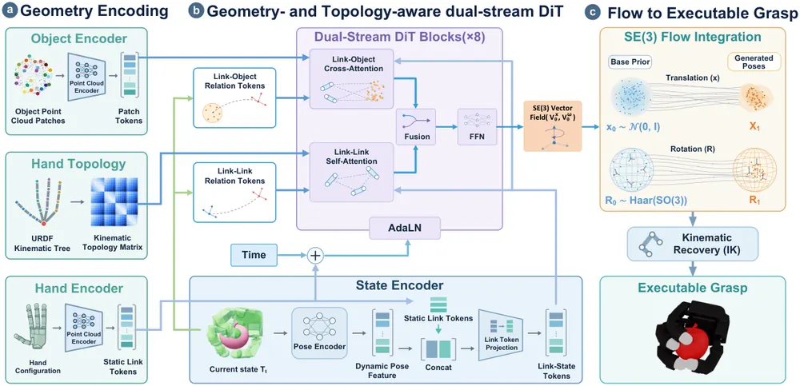
무슨 문제인가
cross-embodiment dexterous grasp 생성은 손마다 link 기하·joint parameterization·kinematic topology가 달라서 공유 모델을 학습하기 어려움. TRO-Grasp처럼 link 간 spatial relation만으로 topology를 표현하는 방법은, 공간적으로 가까운 link가 kinematic tree 상으로는 먼 분기에 속할 수 있다는 점을 놓침. GraspGraphNet 같은 kinematic-tree message passing 방식은 먼 link 사이 정보 전달에 여러 hop이 필요함.
어떻게 푸나
DexGraspFlow는 object point cloud와 손의 link별 point cloud를 각각 encoder로 임베딩함. URDF에서 뽑은 kinematic tree의 shortest-path distance로 topology distance matrix도 미리 계산해 둠. link pose는 SE(3) flow matching으로 생성하는데, translation은 유클리드 직선 경로를, rotation은 SO(3) 위 geodesic 경로를 따르는 velocity field를 dual-stream DiT가 예측함. link-link self-attention과 link-object cross-attention 두 stream이 병렬로 동작함. link-link stream에는 kinematic-tree distance로 만든 topology bias를 attention logit에 더함. 적분으로 얻은 link pose는 batched inverse kinematics(Pyroki)로 joint 각도로 변환됨. 추가 학습 없이 palm 방향 목표를 tangent-space velocity correction으로 주입하는 inference-time guidance도 지원함.
결과
- Barrett·Allegro·ShadowHand 3개 손, 30개 object-hand pair 조건 없는 grasp 생성에서 평균 성공률 95.33%로 TRO-Grasp 94.60%보다 0.73퍼센트포인트 높음. IK 포함 평균 생성 시간은 0.132초로 TRO-Grasp 0.257초보다 약 49% 낮음.
- 학습에 없던 손가락 제거 변형 7종(zero-shot)에서 평균 성공률이 TRO-Grasp 20.47%, DRO-Grasp(또 다른 cross-embodiment grasp 생성 baseline) 53.11% 대비 DexGraspFlow 88.74%로 크게 높음.
- 6방향 palm-orientation guidance 조건에서 TRO-Grasp 대비 평균 성공률이 73.75%에서 86.69%로 오르고, palm-orientation error는 38.38도에서 13.92도로 낮아짐.
- 실로봇 Linker Hand L20Lite로 학습 때 못 본 물체 10종 100회 시도에서 91% 성공함(5개 물체는 10/10).
한계
손가락 제거 변형까지는 zero-shot이 되지만, 저자 스스로 구조가 근본적으로 다른 완전히 새로운 손 형태에는 일반화가 제한적이라고 밝힘. flow field는 link pose만 생성하고 joint limit이나 충돌 회피를 명시적으로 강제하지 않아서, 물리적 타당성은 이후 IK 최적화에 맡김. 실로봇 평가는 손 한 종류(Linker Hand L20Lite)와 물체 10개로만 이뤄짐.
누리랩 연구와의 연결
- cross-embodiment를 kinematic topology로 명시적으로 표현하는 attention bias 설계는 VLA의 cross-embodiment action representation 문제에도 참고할 수 있음.
- 재학습 없이 목표(palm orientation)를 바꾸는 inference-time guidance는 test-time optimization 사례로, 다른 flow·diffusion 기반 policy에도 적용 가능성이 있음.
13
72점
Beckmann World Models: Direct Terminal-Map Learning for One-Step Action-Conditioned Prediction
World Model
relevance 8/10
ICLR 양식 (추정)
Computer Vision and Pattern Recognition (cs.CV)
noise와 observed history, action을 조건으로 한 번의 네트워크 호출로 미래 프레임을 예측하는 terminal-map 방식을 action-conditioned video prediction에 적용함. PushT와 Robomimic Can에서 64-frame 예측 MSE를 same-backbone regression 대비 각각 68%, 57% 줄임.
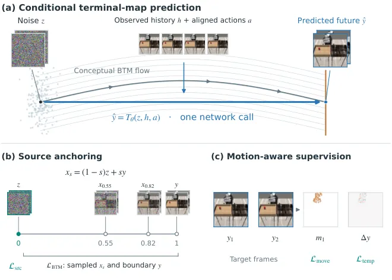
무슨 문제인가
action-conditioned world model은 미래 상태를 예측해 planning과 policy evaluation을 지원하지만, 정확한 one-step predictor를 학습하려면 학습 연산량이 많이 듦. diffusion·flow 기반 생성모델은 샘플링 시 네트워크를 여러 번 호출해야 해서 추론 비용이 크고, 이를 줄이려는 distillation은 pretrained generative teacher가 필요함. DriftWorld 같은 drifting 기반 one-step 모델은 조건마다 생성된 샘플 집단(population)을 만들어야 해서 학습 비용이 큼. 이 논문은 pretrained teacher나 조건별 생성 샘플 집단 없이 noise-data pair만으로 one-step action-conditioned predictor를 학습하는 방법을 다룸.
어떻게 푸나
BWM는 Beckmann Transport Models(BTM)의 terminal-map 공식을 적용해, history h와 action a를 조건으로 noise z를 미래 프레임 y로 보내는 terminal map T_θ(z,h,a)를 학습함. noise와 ground-truth 미래 프레임을 잇는 보간점에서 Jacobian-vector product로 만든 stop-gradient target을 지도하는데, 이는 BTM의 conservation law를 이용한 것임. 다만 interpolated 입력에서의 transport consistency만으로는 추론 때 쓰는 pure noise에서의 예측 정확도를 보장하지 못함. Robomimic Can에서 boundary 재구성 오차가 작은 map도 pure noise에서 시작한 예측 오차는 27배 더 컸음. 저자들은 noise에서의 예측을 직접 ground-truth에 맞추는 source anchoring과, 변화하는 픽셀·chunk 내 시간차를 강조하는 motion-aware supervision을 더해 이 격차를 메움. frozen VGG16 feature로 공간 구조를 맞추는 spatial supervision과, 모델 자신이 만든 detached history를 조건으로 다시 예측해 오차 누적에 대응하는 generated-history recovery도 함께 학습함. 모든 구성요소는 같은 map을 학습시키며, 추론 시에는 future chunk 하나당 네트워크 호출 한 번만 씀.
결과
- PushT·Robomimic Can(96x96 조작 시뮬레이션)에서 64-frame 예측 pixel MSE가 same-backbone regression 대비 각각 68%, 57% 낮아짐.
- policy evaluation에서 BWM의 mean policy IoU error는 0.0100으로, local DriftWorld(0.0306)와 released DriftWorld checkpoint(0.0203)보다 낮음. 4-frame 예측에 24.8ms 걸림.
- Robomimic Can 학습에서 BWM은 local DriftWorld 대비 동일 batch 기준 throughput이 3.3배 높고 peak memory는 78% 낮음.
- RT-1·Bridge-V2 latent 확장에서 generated-history 조건에 feature supervision을 추가하면 동일 update 수 기준 LPIPS가 각각 34%, 24% 낮아짐(제어군 대비).
한계
실험은 PushT·Robomimic Can 시뮬레이션과 RT-1·Bridge-V2 real video dataset에서 수행했고 실로봇 rollout 검증은 없음. source anchoring은 조건부 평균 오차를 줄이지만, 미래가 모호한 경우에는 유효한 조건부 다양성을 억제할 수 있음. 저자들도 이 점을 한계로 언급함. released DriftWorld checkpoint는 더 긴 학습 이력과 다른 데이터 split을 썼고, BWM보다 PushT pixel MSE·LPIPS가 낮음. local 비교와 released 비교가 서로 다른 결론을 준다는 뜻임. 보고된 실험은 학습 seed 1개로 수행됨.
누리랩 연구와의 연결
- one-step action-conditioned world model로 policy evaluation과 model-based planning에 직접 쓰임. test-time optimization·inference-time planning 연구에서 빠른 world model이 필요할 때 비교 대상이 됨.
- boundary reconstruction 오차는 작아도 noise에서 시작하는 예측 오차는 27배 더 컸다는 발견은, world model 평가 설계에서 추론 입력 자체를 따로 검증해야 한다는 참고가 됨. failure detection 연구에서도 같은 점을 짚을 수 있음.
14
65점
Learning Computational Structure for Sample-Efficient Prediction
World Model
relevance 7/10
ICLR 양식 (추정)
Machine Learning (cs.LG)
뉴런마다 저차원 embedding을 학습해 가까운 embedding끼리만 연결하는 Learned Wiring(LeWi)으로 network connectivity를 weight와 함께 학습함. control·navigation·manipulation을 포함한 17개 world-model 예측 과제 중 16개에서 dense network를 이김.
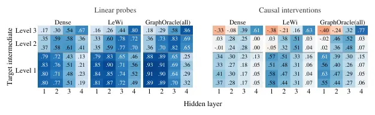
무슨 문제인가
고차원 함수 학습은 차원의 저주를 겪지만, 실제 문제의 다수는 적은 변수에만 의존하는 local function들의 합성으로 표현되는 compositional sparsity를 가짐. 이론상으로는 이런 구조를 활용하면 표본 복잡도가 전체 차원이 아니라 local arity에만 의존하게 되지만, 이 이론은 전역 최적화를 가정하므로 실제 gradient 기반 학습이 이 이득을 실현하는지는 보장하지 않음. 저자들은 target의 compositional structure를 학습 중에는 숨기고 진단용으로만 남겨두는 CSFRBench를 만듦. CSFRBench는 함수의 compositional structure를 가려 놓고 학습 알고리즘이 그 구조를 얼마나 찾아내는지 재는 합성 benchmark이고, 저자들은 이로 이 질문을 검증함. 그 결과 dense network와 기존 sparsity 기반 방법들이 이 이득의 상당 부분을 놓친다는 것을 확인함.
어떻게 푸나
LeWi(Learned Wiring)는 생물학적 신경회로의 공간적 배치에서 착안해, 각 뉴런에 저차원 embedding을 부여하고 인접 layer 뉴런끼리는 embedding 거리가 고정 반경 R 안에 있을 때만 연결함. 연결 점수는 R^2에서 두 embedding 사이 거리의 제곱을 뺀 값이며, 이를 sigmoid에 통과시킨 soft gate와 양수 여부로 정하는 binary mask를 곱해 forward pass의 가중치를 만듦. embedding과 가중치는 모두 task loss로부터 함께 학습되며, embedding에 대한 gradient는 연결된 각 이웃과의 거리를 당기거나 미는 힘으로 해석됨(연결이 loss를 줄이면 가까워지고, 늘리면 멀어짐). mask는 매 step마다 다시 계산되고, embedding이 반경을 넘어서면 연결이 비활성화되지만 이후 다른 연결을 통한 이동으로 다시 활성화될 수 있음. 입력은 input-output 쌍뿐이며 target computation graph는 학습자에게 주어지지 않음.
결과
- 학습곡선 아래 면적인 AULC(작을수록 표본 효율적)를 기준으로, CSFRBench depth-4 tree·reuse DAG·flat modules에서 LeWi는 dense network 대비 평균 AULC를 각각 20%, 34%, 56% 낮춤. 독립적으로 뽑은 depth-4 DAG 32개 평균으로는 27%, 더 깊은 depth-5 tree에서는 32% 낮음.
- target computation graph를 그대로 쓰는 reference인 GraphOracle(all)과 dense 사이 AULC 격차 중, LeWi는 depth-4 tree에서 51%를 메움. 같은 비교에서 L0 regularization은 26%만 메움.
- 17개 world-model 예측 과제(control·navigation·manipulation)에서 LeWi는 dense baseline 대비 16/17 과제, 전체 119개 task-baseline 비교 중 99개에서 이김.
- 관련 없는 nuisance input을 24개 추가하면 LeWi의 dense 대비 우위가 7개 설정 전체에서 커짐. high-arity node 설정에서는 nuisance가 없을 때 dense가 더 좋다가 nuisance가 들어가면 LeWi가 역전함.
한계
단일 high-arity function으로 이뤄진 target에서는 dense network가 LeWi보다 나음. GraphOracle과의 격차가 여전히 남아 있어 target connectivity를 완전히 활용하지는 못하며, 특히 reuse DAG와 depth-5 tree에서 격차가 큼. manipulation 과제에서는 LeWi의 이득이 더 작고 가변적임. 관절 여러 개가 결합된 articulated-control, robot·object dynamics가 결합된 manipulation에서 동점과 패배가 몰림. 모든 candidate connection을 forward pass에서 조밀하게 평가하므로 학습된 sparsity가 학습 연산량 자체를 줄이지는 않음. 동일 backbone 기준 runtime은 Dense 대비 1.02~1.32배임.
누리랩 연구와의 연결
- control·navigation·manipulation 17개 world-model prediction 과제에서 직접 검증된 결과라, robot world model의 sample efficiency를 높이는 architecture 대안으로 참고 가능함.
- manipulation에서는 이득이 작고 가변적이라는 결과는, robot과 object dynamics가 강하게 결합된 representation에는 이 inductive bias가 덜 맞을 수 있음을 보여줌. object-centric representation 설계 시 참고할 대목임.
15
58점
ACE-Brain-0.6: Scaling Spatial Grounding for Physical Foundation Models
VLA
relevance 9/10
Robotics (cs.RO)
로봇 조작 영상과 다양한 시각 데이터를 자동 주석 처리해 검증 가능한 grounding 질의응답 데이터 약 154만 샘플을 만듦. 이 데이터로 Qwen3.5-9B를 fine-tuning한 ACE-Brain-0.6이 7개 공개 grounding 벤치마크 평균에서 GPT-6 Astra를 앞섬(75.41 대 73.68).
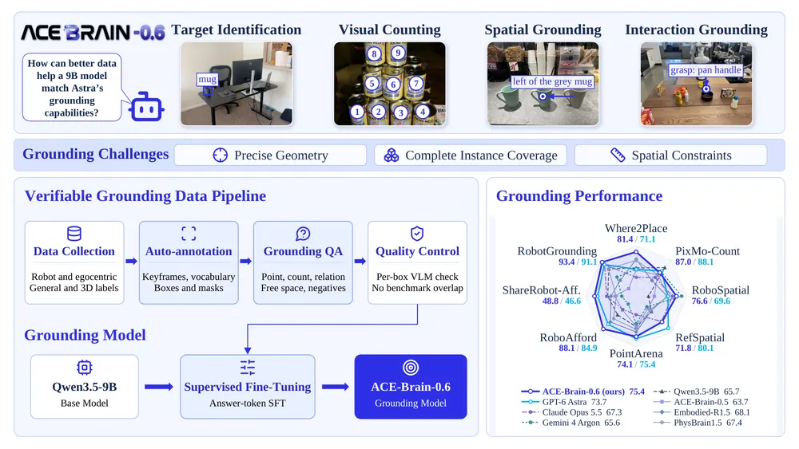
무슨 문제인가
GPT-6 Astra 같은 범용 멀티모달 모델이 로봇 조작에서 보이는 능력은 방해 물체가 섞인 장면에서도 과제와 관련된 대상을 정확히 짚어내는 강한 spatial grounding(자연어 설명을 이미지 속 위치로 연결하는 능력)에 기반함. 로봇 조작 녹화 데이터는 action과 instruction은 있지만 물체 단위 label이 거의 없어서 grounding 학습에 그대로 쓰기 어려움. 기존 grounding 데이터는 사람 주석이나 특정 소스에 의존해 로봇이 보는 장면의 다양성과 잡음을 충분히 담지 못함. 이 논문은 모델 구조와 학습 레시피를 고정한 채 데이터의 규모와 다양성만 늘렸을 때 9B 모델이 Astra 수준의 grounding 성능에 도달할 수 있는지를 물음.
어떻게 푸나
ACE-Brain-0.6은 모든 grounding 과제를 점, 점 목록, 박스, 정수 개수, yes/no/none 중 하나를 내놓는 text 생성 문제로 통일해 다룸. 학습 데이터는 세 종류를 결합함: label이 부족한 로봇 조작 녹화, 손이나 머리 카메라 시점의 egocentric 상호작용 데이터, 그리고 instance 전체나 부위 단위 mask를 제공하는 일반 pointing 데이터임. 로봇 녹화는 gripper 상태 변화를 기준으로 keyframe을 고르고 VLM으로 장면별 물체 vocabulary를 만드는 3단계 자동 주석 파이프라인을 거침. 이후 Grounding DINO와 SAM 3로 물체를 검출하고 SAM 3 인식 branch로 label을 다시 맞춤. 모든 source는 질문-답 템플릿으로 바뀌는데, 답이 annotation과 어긋나지 않는지, 질문 형식과 답 형식 사이에 지름길이 생기지 않는지를 규칙으로 통제함. 이렇게 만든 약 154만 샘플(약 341만 질문-답 쌍)로 Qwen3.5-9B를 1 epoch fine-tuning해 ACE-Brain-0.6을 얻음.
결과
- 7개 공개 grounding 벤치마크 평균(Avg-7)이 fine-tuning 전 Qwen3.5-9B base 65.72에서 ACE-Brain-0.6 75.41로 오름. 같은 Avg-7에서 GPT-6 Astra는 73.68, Claude Opus 5.5는 67.30임.
- 자체 제작한 RobotGrounding 벤치마크(held-out 로봇 조작 프레임에 사람이 box를 단 2591문항)에서 ACE-Brain-0.6이 93.42로, 비교한 모든 모델 중 1위이며 GPT-6 Astra의 91.10보다 높음.
- RefSpatial의 placement 세부 항목(공간 제약을 만족하는 배치 지점 찾기)에서는 ACE-Brain-0.6이 75.00으로 Astra의 84.00보다 낮게 남음. 저자들은 자신들의 free-space 정답이 2D 영역만 표시하고 3D 실현 가능성을 검증하지 않기 때문이라고 설명함.
- 데이터 규모를 0.26M에서 최종 릴리스 1.55M 샘플(method의 154만 샘플과 거의 같은 규모)로 늘리는 통제 실험에서 Avg-7이 샘플 수의 로그 값에 거의 선형으로 비례해 올랐음(두 배가 될 때마다 약 2.4점, r=0.99). 같은 크기까지 기존 source만 반복해서 늘린 대조군은 1점 미만만 올라, 데이터 양보다 다루는 과제와 도메인의 다양성이 성능을 끌어올린다는 것을 보임.
한계
비교 대상인 GPT-6 Astra, Claude Opus 5.5 등 closed model은 API로만 평가해 내부 구조를 알 수 없고, RobotGrounding 벤치마크는 저자들이 직접 만들어 공개 벤치마크만큼 독립적인 검증이 아님. 모든 개체를 빠짐없이 세는 visual counting 과제와 공간 제약이 있는 배치 과제에서는 Astra에 여전히 뒤처지는데, 저자들은 이를 데이터 구성의 한계로 보고 다음 릴리스 과제로 남겨둠. 기여의 핵심은 새로운 모델 구조나 학습 알고리즘이 아니라 데이터 파이프라인과 fine-tuning 규모 확장임.
누리랩 연구와의 연결
- embodied spatial reasoning·spatial grounding은 우선 주제에 해당함. 다만 이 논문은 새로운 problem formulation이나 representation 없이 기존 구조를 데이터로 스케일업한 결과라 랩의 test-time optimization·failure detection·world model 주제와는 직접 연결 약함.
- 로봇 녹화에 object label이 없을 때 VLM과 detector를 엮어 자동 주석을 다는 파이프라인 구조는, 라벨 없는 로봇 데이터에서 실패 원인을 분석할 때 참고할 만함.
오늘의 흐름
- world model 쓰임이 다양함: RL 학습 효율화(SuperMimic), 데이터 수집 전략(Action Influence Maximization), planning 정확도 완화(VPFlow), architecture 효율화(LeWi)에 각각 씀. 같은 이름의 world model이 논문마다 다른 문제를 풂.
- video와 3D world model의 표현 통합: 영상 기반 world model과 3D/4D 기반 world model을 하나의 표현으로 합치려는 시도가 이어짐. AEON은 4D Gaussian Splatting으로, Learning the 4D World through Point Trajectory Forecasting은 point trajectory로, LaLa-World는 language로 서로 다른 도메인을 묶음.
- failure detection이 counterfactual reasoning과 묶임: Replan for Error Recovery는 checker reward로, Failure Attribution은 latent intervention으로 복구·귀인을 함. 둘 다 실패를 감지만 하지 않고 무엇을 고쳐야 하는지까지 답하려 함.
- world-action-language를 한 backbone에서 동시 생성: UniWALM은 비디오·행동·언어를 하나의 diffusion에서 같이 만들어 생성한 언어를 memory로 재사용함. ACE-Brain-0.6도 VLA에 대규모 grounding 데이터를 합치는 방향이나, 새 formulation 없이 scale-up 위주임.
- real-to-sim 재구성이 실로봇 실행까지 이어짐: NeoWorld-3는 비전 관찰을 코드로 바꿔 똑같은 구조의 시뮬레이션 환경을 만들고, 거기서 짠 계획을 실제 dual-arm 로봇에 zero-shot으로 실행함. Real-Sim-Real 루프 전체를 보인 사례임.
해볼 만한 연구
world model을 미래 예측이 아니라 failure risk 예측에 쓸 수 있는가
- 질문: world model이 다음 상태를 정확히 복원하지 못해도 value만 잘 예측하면 planning이 된다는 VPFlow의 결과가 있음. 이 결과를 "지금 상태에서 실패에 도달할 risk" 예측으로 옮기면 checker 없이도 failure detection이 되는가.
- 첫 실험: VPFlow의 value network 구조를 가져와 예측 target을 failure risk로 바꿈. Replan for Error Recovery의 ERR-Bench(오류 발생 후 복구 행동을 검증 가능한 interaction으로 재는 benchmark)에서 기존 checker 기반 reward 대비 recovery rate를 비교함.
- 가장 가까운 연구: VPFlow는 목표 도달용 value를 예측하고 failure는 다루지 않음. Replan for Error Recovery는 checker가 explicit하게 성공·실패를 판정함. checker도 explicit label도 없이 world model만으로 risk를 예측하는 연구는 비어 있음.
cross-embodiment의 kinematic topology를 VLA action head에 명시적으로 넣으면 generalist policy의 embodiment 전이가 좋아지는가
- 질문: DexGraspFlow는 grasp 생성에서 URDF 기반 kinematic-tree 거리를 attention bias로 넣어 cross-embodiment 성능을 올림. 이 설계를 generalist VLA의 action head에 적용해도 같은 효과가 나는가.
- 첫 실험: UniWALM 같은 generalist action 생성 구조에 DexGraspFlow의 kinematic attention bias를 추가해, 학습에 없던 새 embodiment에서 fine-tuning 없이 zero-shot 성공률을 기존 구조와 비교함.
- 가장 가까운 연구: DexGraspFlow는 grasp 생성 한 과제에만 kinematic bias를 적용함. UniWALM은 generalist action을 생성하지만 embodiment 구조를 명시적으로 넣지 않음. 둘을 합친 쪽은 비어 있음.
꼭 읽을 논문
- SuperMimic: differentiable world model 하나로 GPU-hour를 1000배 넘게 줄인 효율화 결과임.
- Failure Attribution for VLA Models: failure detection과 counterfactual reasoning을 하나로 묶고 실로봇 검증까지 갖춰 누리랩 우선 주제와 가장 직접 맞닿음.
- UniWALM: 생성한 언어를 memory로 재사용해 외부 memory 모듈 없이 memory-dependent task를 푸는 아이디어임.
- VPFlow: world model 정확도 요구 수준을 낮춰도 되는 조건을 실험으로 보여줌.
- Replan for Error Recovery: checker 기반 reward로 recovery policy를 online RL로 학습하는 baseline을 제공함.
전체 1차 스크리닝 결과 (600편, 점수순) 펼치기
| # | 제목 | 점수 | 🤖 | 분야 | 한 줄 근거 |
|---|---|---|---|---|---|
| 1 | Replan for Error Recovery: Training Embodied VLMs through Verifiable Interaction with Action-Grouped Turn-GSPO | 78 | 10 | VLA | embodied VLM이 실행 오류 후 replanning으로 회복하도록 검증가능한 interaction으로 학습시킴. failure detection·recovery 우선주제에 정확히 맞고 turn-level reward로 recovery rate를 크게 올림 |
| 2 | SuperMimic: Scaling Humanoid Whole-Body Control with One Differentiable World Model | 78 | 8 | World Model | CoRL oral. 하나의 differentiable world model로 수많은 human motion을 동시에 학습해 GPU-hour를 1000배 이상 줄인 humanoid whole-body control 연구임 |
| 3 | Training Controllable World Models via Action Influence Maximization | 76 | 9 | World Model | action-conditioned world model이 action을 무시하는 원인을 데이터의 action influence 부족으로 규명하고 능동 수집으로 85배 데이터 절감을 보임 |
| 4 | LaLa-World: Scaling Latent World Models with Natural Language Actions | 75 | 9 | World Model | numeric action과 visual change를 모두 language로 통일해 이질적 데이터(시뮬레이션·로봇·영상)를 하나의 JEPA-style world model로 학습함. LIBERO·RoboCasa에서 policy로 확장해 Cosmos Policy와 경쟁하며 학습·추론 비용은 훨씬 낮춤 |
| 5 | Learning the 4D World through Point Trajectory Forecasting | 75 | 9 | World Model | multi-view video와 3D point trajectory를 함께 예측하는 world model에 로봇 action을 token으로 추가해 같은 backbone에서 denoising함. 실제 로봇 조작 성공률도 point supervision으로 올라감 |
| 6 | DexGraspFlow: Topology-Aware SE(3) Flow Matching for Cross-Embodiment Dexterous Grasp Generation | 75 | 9 | Manipulation | 손 기하와 kinematic topology를 함께 반영한 SE(3) flow matching으로 cross-embodiment dexterous grasp를 생성함. 실로봇 100회 시도에서 91% 성공률을 보임 |
| 7 | AEON: Unifying Video and 3D World Models | 75 | 8 | World Model | 비디오 world model과 3D(4DGS) world model을 하나의 생성 모델로 통합함. object-centric 4D representation과 world simulation에 직결됨 |
| 8 | ACE-Brain-0.6: Scaling Spatial Grounding for Physical Foundation Models | 72 | 9 | VLA | 로봇 조작 데이터와 다양한 비전 데이터를 결합해 visual grounding을 스케일업한 physical foundation model임. 9B 모델로 GPT-6 Astra의 grounding 벤치마크 평균을 앞섬 |
| 9 | What Would Removing This Corruption Change? Failure Attribution for Vision-Language-Action Models | 72 | 9 | VLA | VLA의 시각적 손상 중 무엇을 제거해야 실제로 도움이 되는지 latent intervention으로 추정하는 failure attribution 방법임. OpenVLA·pi0.5와 실제 Franka 로봇에서 검증해 failure detection·counterfactual reasoning 우선주제에 정확히 맞음 |
| 10 | NeoWorld-3: From Pixels to Code-Defined Physical Worlds | 72 | 8 | World Model | pixel observation을 실행 가능한 코드로 바꿔 interactive 3D world를 재구성하고, 그 twin에서 짠 조작 궤적을 실제 dual-arm 로봇에서 zero-shot으로 성공시켜 Real-Sim-Real loop을 완성함 |
| 11 | VPFlow: Value-Predictive Planning with Imperfect World Models for Offline Goal Reaching | 70 | 7 | World Model | offline goal 도달 planning에서 정확한 state 예측보다 value 예측이 더 중요함을 보임. imperfect world model로도 planning이 되는 핵심 통찰이 로봇 world model 연구에 바로 쓸만함 |
| 12 | UniWALM: Unified World Action Language Model for Embodied Robot Control | 68 | 9 | VLA | video·action·language를 하나의 backbone에서 동시 생성해 생성된 언어를 다음 step의 memory로 재사용하는 world-action-language model로 memory-dependent task에서 크게 개선함 |
| 13 | Beckmann World Models: Direct Terminal-Map Learning for One-Step Action-Conditioned Prediction | 68 | 8 | World Model | PushT·Robomimic에서 one-step action-conditioned world model을 새 원리(terminal-map learning)로 학습함. policy evaluation에도 씀 |
| 14 | Learning Computational Structure for Sample-Efficient Prediction | 68 | 7 | World Model | 뉴런 간 연결을 저차원 임베딩으로 학습해 compositional sparsity를 활용하는 Learned Wiring을 제안함. control·navigation·manipulation 등 17개 world-model 예측 과제에서 dense network를 능가함 |
| 15 | Planning under Noise with Neural Operators | 68 | 7 | RL | stochastic optimal control의 screened-Poisson 식을 neural operator로 풀어 noise-aware value field planning을 함. 임의 geometry에서 빠르고 정확한 로봇 planning에 직결됨 |
| 16 | Joints, Camera, Action! Co-Generating 3D Motion and Video for Arbitrary Rigs | 68 | 6 | Video | 임의 rig의 3D motion과 비디오를 co-generation함. 로봇 비디오도 학습에 포함해 embodiment 간 motion 전이에 쓸만함 |
| 17 | Multi-View Latent Action Pretraining for Cross-Embodiment Robot Learning from Videos | 66 | 9 | VLA | multi-view latent action model로 cross-embodiment 비디오에서 6D action 복원력을 높이고 실로봇 성공률도 올린 결과라 VLA pretraining에 핵심적 |
| 18 | Physical Canvas: A Vision Tactile World Model For Robot Policy Evaluation And Learning | 66 | 9 | World Model | vision-tactile world model로 contact dynamics를 반영한 policy evaluation·GRPO 학습을 가능하게 해 world model과 tactile을 모두 다룸 |
| 19 | Touch-JEPA: Tactile Representation Learning from Hand-Object Video with Limited Tactile Supervision | 65 | 9 | Manipulation | hand-object video만으로 tactile representation을 self-supervised로 배우고, 제한된 tactile label로 joint 학습해 로봇 손에도 training 없이 전이시킴. tactile perception 우선 주제에 직접 해당함 |
| 20 | PanoGraphGS: Unifying Panoptic Segmentation and Hierarchical 3D Scene Graphs with Gaussian Splatting | 65 | 8 | Embodied AI | panoptic 3D Gaussian과 계층적 3D scene graph를 통합해 language-guided navigation용 지도를 만듦. scene graph·semantic mapping 우선 주제에 바로 해당함 |
| 21 | World Models with Configurable Perception | 65 | 8 | World Model | task 언어 설명으로 state extraction을 조건화해 distraction이 심한 환경에서도 world model planning이 안정적임. task-conditioned perception이라는 새 formulation이 test-time planning과 바로 연결됨 |
| 22 | Embodied Playground: A Long-Horizon Agentic Robotics Benchmark for Physical, Strategic, and Spatial Reasoning | 65 | 8 | Embodied AI | 물리·전략·공간 추론을 함께 요구하는 long-horizon agentic robotics 벤치마크임. 410개 환경과 난이도별 split으로 foundation model agent의 한계를 드러냄 |
| 23 | EmbodyHOI: Embodiment-Aware Generation of Hand-Object Interactions for Humanoid Dexterous Manipulation | 65 | 8 | Manipulation | 로봇의 differentiable IK를 HOI 생성 샘플링 루프 안에 넣어 사람 손 동작을 humanoid로 재겨냥할 때 생기는 embodiment gap을 줄임. wrist error를 8.9cm에서 0.6cm로 줄이고 task 성공률도 올림 |
| 24 | Exploring Temporal Context-Aware Physical Grounding in Latent World Models | 65 | 8 | World Model | JEPA 기반 latent world model에 시간적 context를 반영한 physical grounding과 prior-guided action planning을 결합함. manipulation task에서 planning 성능 개선을 보여 world model·robot learning 핵심 주제와 직접 연결됨 |
| 25 | Latent Projection for Latent Planning | 65 | 7 | World Model | latent world model의 noise 방향을 걸러내고 불확실성 낮은 subspace에서만 planning cost를 계산함. latent planning 정확도를 크게 올림 |
| 26 | PLaCA: Learning Patch-Level Future Latent Change for Action Generation | 64 | 9 | VLA | patch 단위 future latent change를 예측해 VLA action generation에 쓰는 world-action 구조로 LIBERO·CALVIN에서 개선 보임 |
| 27 | De-Diffusing WAMs: Action-Sufficient Direct Prediction for Robot Control | 64 | 9 | World Model | cascade world-action model을 single-step으로 distillation하면서 action-sufficient objective로 성공률 유지하고 28배 지연을 줄인 결과임 |
| 28 | From Predictive Geometry to Action: Learning Complementary Predictive Representations for Embodied Manipulation | 64 | 9 | Manipulation | 미래 장면의 기하 변화를 action-relevant 표현으로 분리 학습해 여러 VLA·world-action model에 전이시키고 WidowX에서 10.4퍼센트포인트 개선함 |
| 29 | Plausible Future, Wrong Choice: Steering World-Action Models toward Intended Future | 64 | 9 | World Model | long-horizon manipulation에서 world-action model이 비슷한 구간끼리 혼동하는 stage confusion을 Mode·State Token으로 해결한 world-action model임 |
| 30 | Learning to Be Different: Component Specialization for Compositional Diffusion Policies | 62 | 8 | Manipulation | compositional diffusion policy의 구성요소가 서로 다른 역할을 하도록 score decorrelation loss로 특화시킴. multitask 조작에서 해석 가능한 기능 분해를 달성함 |
| 31 | AWLS: Advantage-Weighted Latent Steering for One-Step Generative Robotic Manipulation Policies | 62 | 8 | Manipulation | frozen one-step generative policy의 latent noise를 advantage-weighted로 steering해 critic gradient 없이 품질을 올린 offline post-training 방법임 |
| 32 | PACT-VLA: Speculative Action-Chunk Verification with Pre-Commit Observations | 62 | 8 | VLA | 비동기 VLA 추론에서 inference delay를 오히려 decision time으로 써 stale observation 문제를 training-free로 줄인 방법임 |
| 33 | Slot-JEPA: Object-Structured Prediction Interfaces for Latent World Models | 62 | 8 | World Model | JEPA의 dense patch 표현을 object-centric slot으로 분해해 재사용 가능한 world model interface를 만듦. 로봇팔 planning task(REALM-JEPA)에서 goal-conditioned planning 개선을 보여 object-centric 3D 표현 연구와 직접 연결됨 |
| 34 | VLM-Guided Contact Retargeting and Generative Partner Modeling for Humanoid-Human Interaction | 62 | 7 | Embodied AI | VLM guided contact retargeting과 generative partner modeling으로 심한 occlusion 속 humanoid-human interaction을 실기체에서 수행함 |
| 35 | VLA-Retain: Benchmarking Cross-Dimension Effects of Vision Tuning in VLAs | 60 | 9 | VLA | VLA의 vision tuning이 target domain에서는 좋아져도 다른 perturbation 차원에서는 off-target 성능이 떨어진다는 것을 5개 모델로 systematic하게 보인 분석임. VLA robustness 평가에 직접 쓸 수 있음 |
| 36 | FIT-MAC: A Closed-Loop Multi-Agent Framework for Robust Vision-Language-Action Models | 60 | 9 | VLA | VLA 실행 중 실패 유형을 구분해 적절한 recovery를 라우팅하는 closed-loop multi-agent framework로 failure detection·recovery에 바로 맞음 |
| 37 | RoboJudge: Multimodal Language Models as Judges for Embodied Video Generation | 60 | 8 | Embodied AI | embodied video generation의 physical adherence·instruction alignment를 사람 판단과 맞춰 평가하는 MLLM judge를 만듦. world model 평가 인프라로 lab에 직접 쓸 수 있음 |
| 38 | CLOSER: Evidence-Aware Active Visual Verification for Embodied Object-Goal Navigation | 60 | 8 | Embodied AI | ObjectNav에서 멈추기 전에 VLM 검증과 active perception으로 증거를 더 모으는 closed-loop 프레임워크임. active perception·VLA 우선 주제와 바로 맞음 |
| 39 | Reasoning as a Distribution: Generative Plan Latents for Vision-Language-Action Models | 60 | 8 | VLA | VLA의 reasoning 상태를 하나의 결정이 아닌 plan 분포로 표현해 steering·재가중이 가능하게 한 접근임 |
| 40 | Learning Adaptable Dexterous Skills via Hybrid Dexterous Mimicking | 60 | 8 | Manipulation | 짧은 human motion clip 하나를 motion tracking과 goal-conditioned RL로 결합해 다양한 dexterous skill로 일반화시킨 방법임 |
| 41 | P$^3$-VLM: A Point-based Alternative for Grounded 3D Vision-Language Models | 60 | 6 | Embodied AI | 3D VLM grounding benchmark가 bounding box shortcut에 기대는 semantic leakage를 밝히고, point 기반 prompting으로 이를 없앤 tri-pathway VLM을 제시함. embodied spatial reasoning 평가 방법론으로 의미 있음 |
| 42 | From POMDP Theory to Deep RL with Particle Filters | 60 | 6 | RL | POMDP의 hidden state filtering을 particle filter로, planning을 QMDP 근사로 end-to-end 결합하고 regret을 분해해 증명함. 불확실성 하 로봇 의사결정의 이론-실천 다리로 쓸만함 |
| 43 | Embodied Task Agents Can Perform Fine Manipulation through Tactile In-Context Learning | 58 | 8 | Manipulation | tactile in-context learning으로 파라미터 업데이트 없이 fine manipulation 성공률을 크게 올려 tactile perception 쪽에 바로 참고됨 |
| 44 | EventSync: Event-Driven Memory Updates for History-Dependent Manipulation | 58 | 8 | Manipulation | event-driven memory update로 history-dependent manipulation에서 완료 판정 오류를 줄여 robot memory·hierarchical planning에 직결됨 |
| 45 | Knowing When to Stop Thinking: A Dissection of Expected Free Energy as a Test-Time Compute Controller for Latent World-Model Planning | 58 | 8 | World Model | expected free energy로 world-model planning의 test-time 연산량을 언제 멈출지 결정하는 분석이라 test-time optimization 핵심 주제와 맞음 |
| 46 | AgenticRoboRL: Bringing Coding-Agent Post-Training to Agentic Robotics | 58 | 8 | RL | coding agent의 post-training 방식을 로봇 planner에 적용해 LIBERO-PRO 성공률을 크게 올린 agentic robotics RL 연구임 |
| 47 | Reframing Object-Centric Reinforcement Learning: From Absolute to Relative Representations | 58 | 5 | RL | object-centric RL의 좌표를 절대 좌표에서 anchor 기준 상대 좌표로 바꿔 일반화를 크게 높임. object-centric representation 우선주제와 직결되나 실험은 Atari·Foosball 등 2D 위주임 |
| 48 | CoGaussian: Open-Vocabulary Gaussian-based Collaborative 3D Scene Understanding | 55 | 8 | Embodied AI | 여러 로봇이 sparse 3D Gaussian으로 open-vocabulary semantic occupancy를 협업 생성·융합함. 멀티로봇 collaborative perception 우선 주제와 직접 맞음 |
| 49 | Physical AI: Concepts, Techniques, and Challenges | 55 | 8 | Embodied AI | physical AI를 정의하는 388쪽 monograph로 world model·embodied foundation model·sim-to-real을 종합함. 리뷰 성격이라 실험적 증거는 없음 |
| 50 | LVMem: Image-Augmented Memory for Long-Horizon Question Answering | 55 | 7 | Embodied AI | embodied agent의 long-horizon QA용 image-augmented memory임. robot memory 우선 주제와 바로 연결됨 |
| 51 | VEOcc++: Learning Persistent Voxel Feature Maps for Embodied Online Semantic Occupancy Mapping and Offline Refinement | 55 | 7 | Embodied AI | online semantic occupancy mapping과 offline 정제를 persistent voxel feature map으로 연결하고 실제 모바일 로봇에 zero-shot 배치함. embodied mapping 우선 주제와 맞음 |
| 52 | SenseAlign: Understanding Vision and Touch through Language at Test Time | 55 | 7 | Embodied AI | vision·touch를 공유 언어 공간으로 묶고 test-time에 modality 신뢰도를 가중함. tactile perception 우선 주제와 직접 연결됨 |
| 53 | Large language model and reinforcement learning based autonomous construction and progress updates | 55 | 7 | Manipulation | LLM과 RL로 모바일 크레인을 제어해 실제 건설 실험까지 수행함. 실로봇 검증 있는 RL 적용 사례임 |
| 54 | Cross-Visibility-Gap Identity Persistence for 4D Scene Graphs | 55 | 6 | Embodied AI | 물체가 가려졌다 재등장할 때 relational memory로 identity를 복구하는 4D scene graph 연구임. scene graph 우선 주제와 닿아 있음 |
| 55 | Decoupling Action from Egocentric Observation for World Simulation | 55 | 6 | World Model | egocentric action을 geometric estimator 없이 video diffusion denoising 단계에서 직접 분리해 새 장면으로 옮김. embodied policy 학습·robotic 데이터 생성에 쓰려는 목적이 명시됨 |
| 56 | OverSeer: Multi-Agent World Models Beyond What Agents See | 55 | 6 | World Model | 고정된 보조 카메라 뷰를 world-centric proxy로 써서 multi-agent world model의 일관성을 높이고 delta-VAE로 압축함. multi-agent world model formulation이 새로움 |
| 57 | KPHarness: Co-Evolving Knowledge and Probing for Long-Horizon Gaming Harnesses | 55 | 6 | VLA | 고정된 VLA policy의 execution harness를 실패 진단·탐색으로 적응시키는 연구임. failure detection·recovery 주제와 직접 맞으나 Minecraft 환경이라 실로봇은 아님 |
| 58 | Quantum-JEPA: Quantum Born Priors for Latent-Action JEPA World Models | 55 | 6 | World Model | latent-action JEPA world model에 quantum Born prior를 결합해 미래 분포를 다양하게 예측함. D3IL 로봇 시연 benchmark에서 여러 장애물 회피 경로를 생성해 world model 다양성 연구에 참고됨 |
| 59 | Latent Bridge: From Video Latents to 3D Geometry via Feature Alignment | 55 | 5 | World Model | video generation latent와 3D geometry 사이를 RGB 디코딩 없이 바로 잇는 bridge를 제안함. world model과 3D reconstruction을 잇는 새 interface임 |
| 60 | Causal Spatiotemporal State Evolution for Monocular 4D Reconstruction | 55 | 4 | 3D Vision | monocular 4D geometry를 causal state propagation(Mamba)으로 일관되게 추정함. video depth·pose·flow를 통합 supervision으로 묶은 점이 새로움. object-centric 4D 표현과 닿아 있음 |
| 61 | Predictive Closure: A Set-Level Characterization of JEPA's Feature Selection | 55 | 4 | World Model | JEPA가 어떤 feature를 선택하는지 개별 예측가능성이 아니라 feature 간 관계로 재해석함. V-JEPA 계열 world model 설계에 바로 참고할 이론임 |
| 62 | Learning Tactile-Aware Hand Representations from Human Hand-Object Interaction Data | 54 | 8 | Manipulation | 사람 hand-object interaction 데이터로 tactile 표현을 pretraining해 로봇 tactile learning의 데이터 효율을 높인 연구임 |
| 63 | GPT-6-Astra Understands Touch and Outperform Vision--Tactile--Language--Action Models | 54 | 8 | VLA | GPT-6가 전문 tactile pretraining 없이 expert demonstration 요약만으로 contact-rich manipulation에서 높은 성공률을 보인 결과임 |
| 64 | CovNav: Conformal Prediction-Guided Adaptive Inference for Object Goal Navigation | 54 | 7 | Navigation | conformal prediction으로 ObjectNav에서 언제 slow thinking을 쓸지 결정하는 test-time adaptive reasoning이라 test-time optimization 주제와 맞음 |
| 65 | JARVIS: From Visual Manuals to Autonomous Robotic Assembly | 52 | 7 | Manipulation | visual manual만으로 긴 호흡의 LEGO assembly를 수행하는 benchmark와 agent라 long-horizon planning에 관련됨 |
| 66 | EchoNav: Evidential BEV Completion from Historical Observations for Visual Navigation | 52 | 6 | Navigation | evidential BEV completion으로 occluded space를 추론해 navigation 성공률을 크게 올린 결과라 scene representation과 연결됨 |
| 67 | Perceives but Doesn't Brake: A Perception-Action Binding Gap in Reasoning Driving VLAs | 52 | 6 | VLA | 주행 VLA가 위험을 인지하지만 제동으로 옮기지 못하는 perception-action binding gap을 진단하고 frozen sampler에 guidance를 주입해 고친 연구임 |
| 68 | Continuous-Time Policy Gradient from Discrete Data: Convergence Analysis and Model-Free Algorithms | 52 | 5 | RL | continuous-time RL의 policy gradient 수렴을 증명하고 discrete 데이터로부터 model-free 알고리즘을 만듦. wheeled robot 비선형 제어 실험으로 검증함 |
| 69 | Memory Internalization via Test-Time Training for Long-Video Understanding | 52 | 4 | Video | long video를 test-time training으로 memory에 internalize하는 방식임. robot memory와 원리적으로 닿아 있으나 도메인은 video QA임 |
| 70 | Frontier LLMs Enter the World of Robotics: A Cross-Model Evaluation on RoboColiseum | 50 | 7 | VLA | GPT-6 등 frontier 멀티모달 모델의 로봇 제어 능력을 네 축으로 비교한 평가 연구임 |
| 71 | World2HOSI: A Multi-Expert Harness for Long-Horizon Human-Object-Scene Interaction Generation | 50 | 5 | Embodied AI | 3DGS 장면과 언어 지시에서 long-horizon human-object-scene interaction 데이터를 multi-expert orchestration으로 만들어냄. embodied AI 데이터 생성에 참고될 formulation임 |
| 72 | OV-Foam: How 3D Representations Shape Semantic Feature Lifting | 50 | 5 | 3D Vision | power-diagram으로 primitive 간 겹침을 없앤 PowerFoam 표현으로 open-vocabulary feature lifting을 최적에 가깝게 만듦. object-centric 3D representation 우선 주제와 연결됨 |
| 73 | MindView: Benchmarking Generative Multi-View Spatial Intelligence | 50 | 5 | Embodied AI | 부분 multi-view 관찰에서 언어로 target viewpoint를 생성하는 spatial intelligence 벤치마크임. embodied spatial reasoning 우선 주제와 연결되고 fine-tuning이 spatial understanding도 함께 올림 |
| 74 | SplatFlux: Feed-Forward 4D Gaussian Reconstruction and Generation from Video Latents | 50 | 4 | 3D Vision | video latent에서 static·dynamic을 분리한 4D Gaussian을 feed-forward로 재구성·생성함. object-centric 4D representation 우선 주제와 닿아 있음 |
| 75 | When Does Training on Synthetic Data Provably Work? | 50 | 4 | LG | synthetic data로 학습한 분류기가 real distribution에 언제 전이되는지 유한샘플 이론으로 밝힘. sim2real 전이 논의에 바로 쓸 이론임 |
| 76 | Meta-iLaD: Identifiable Latent Dynamics via Meta-Learning of Dynamics Environments | 50 | 3 | World Model | 환경 라벨 없이 meta-learning으로 latent dynamics와 environment variable을 동시에 identifiable하게 학습함. 로봇 동역학 학습에 적용 가능한 이론임 |
| 77 | LocaLeJEPA: Maximum Entropy Representations under Geometric Priors | 50 | 3 | CV | LeJEPA의 isotropic Gaussian 목표를 비유클리드 geometry(하이퍼볼릭·equivariant)로 확장한 자기지도학습 연구임. world model의 표현학습 요소기술로 참고할만함 |
| 78 | On the Limits of Scale: Inverse Scaling in Vision-Language Models | 50 | 2 | Multimodal | VLM 19개·558K 평가로 scale이 커질수록 특정 subtask 성능이 떨어지는 inverse scaling을 체계적으로 보인 분석 논문임 |
| 79 | RoboCasa-Shift: Stage-Aware Robustness Evaluation of Vision-Language-Action Policies in Long-Horizon Household Manipulation | 48 | 7 | VLA | VLA robustness를 stage-aware diagnostic benchmark로 분해 평가한 논문이라 failure 분석 방법론으로 참고됨 |
| 80 | Large Multimodal Models for Direct Robot Control: GPT-6 as a Beginning | 48 | 7 | VLA | GPT-6의 직접 로봇 제어 능력을 depth·tactile·manipulation 여러 축에서 평가하고 새 benchmark로 한계를 드러낸 연구임 |
| 81 | On Maximum Clique and Maximum Consensus Formulations in Point Cloud Registration | 48 | 6 | 3D Vision | point cloud registration에서 maximum clique와 maximum consensus의 관계를 이론으로 규명하고 오차 상한을 증명함. 로봇 3D perception의 핵심 서브루틴에 대한 이론적 기여임 |
| 82 | A Head Camera Is (Almost) All You Need: An Electronics-Free UMI Glove Labelled and Observed by One Moving Camera | 48 | 6 | Manipulation | 머리 카메라 하나로 저가 UMI glove 데이터수집을 대체한 실용적 imitation learning 데이터 파이프라인임 |
| 83 | SceneRig: An Agentic System for Simulation-Ready 3D Scene Reconstruction from Single Images | 48 | 6 | 3D Vision | 단일 이미지에서 물리적으로 안정된 simulation-ready 3D scene을 agentic하게 재구성해 로봇 policy 평가에 쓰는 연구임 |
| 84 | Interruption-Aware Recurrent Reinforcement Learning for UAS Navigation Under Temporary Overrides | 48 | 6 | Navigation | UAS가 외부 개입(override) 후 복귀할 때 recurrent policy의 안전성을 다룬 연구임. interruption-aware 구조로 collision을 74% 줄여 navigation·autonomy 연구에 직접 연결됨 |
| 85 | A latent control model for realistic rodent motion | 48 | 5 | RL | 가상 쥐 body에 motion prior와 behavior prior를 결합해 목표 행동과 탐색 모두 자연스럽게 만드는 embodied RL 연구임. sparse reward 학습과 imitation 결합이 robot locomotion 연구에 참고될 수 있음 |
| 86 | CUA-Recovery: Benchmarking Error Recovery in Long-Horizon Computer-Use Agents | 48 | 4 | AI | 장기 computer-use agent의 오류 인지·복구를 측정하는 benchmark임. failure detection·recovery와 방법론적으로 맞지만 디지털 환경이고 실로봇 아님 |
| 87 | Self-Evolving Agents through Privileged Retrospective Distillation | 48 | 3 | RL | 자기 경험을 회고적 맥락으로 재점수화해 self-distillation하는 self-evolving agent 방법임. ALFWorld 등 embodied-ish 환경서 검증했지만 텍스트 기반 agent임 |
| 88 | Binary Discrete Diffusion: Candidate-Set Diffusion for Logic and Planning Tasks | 48 | 3 | LG | 위치마다 후보 토큰 집합을 유지하는 binary discrete diffusion으로 Sudoku·그래프 coloring 같은 planning 과제를 품. reasoning·planning 패러다임에 참고할 새 공식화임 |
| 89 | What Novice Operators See Changes What the Policy Learns: A User Study of Keypoint Hand Visual Representation for Teleoperated Demonstration | 46 | 6 | Manipulation | teleoperation 렌더링 방식이 novice demonstration 품질과 policy 성능을 바꾼다는 user study라 imitation learning data collection에 참고됨 |
| 90 | SPAR: Search-trained Push Action Ranker for Efficient Navigation Among Movable Obstacles | 46 | 6 | Manipulation | push 순서를 학습해 NAMO 탐색을 가속하는 ranker로 long-horizon manipulation planning에 관련됨 |
| 91 | OmniVLoc: Topo-metric Visual Localization for Omnidirectional Cameras | 45 | 6 | Navigation | omnidirectional 카메라용 topo-metric visual localization임. cs.RO 태그가 있고 navigation 우선 주제에 해당함 |
| 92 | Towards Interaction State Recognition in Sensorized Gecko-Inspired Adhesive Interfaces for Orbital Servicing | 45 | 6 | Robotics | gecko 모방 접착 인터페이스에 정전용량 센서를 달아 궤도 서비싱용 접촉 상태를 실시간 분류함. tactile perception 응용이나 formulation 자체는 분류기 수준임 |
| 93 | Refuses When Asked, Complies When Acting: A Runtime Safety Check for Robot Control Loops | 45 | 6 | VLA | VLA가 harmful instruction을 그대로 수행한다는 실패 사례 보고라 failure detection 쪽에 참고될 만함 |
| 94 | Learning from Automatic 3D Gaussian Splatting Edits for Online Bayesian Scene Change Detection | 45 | 5 | 3D Vision | 3DGS 자동 편집으로 라벨 없이 scene change evidence model을 학습해 online Bayesian change detection을 함. 장기 자율주행 지도 유지에 참고될 수 있음 |
| 95 | When Does Experience Memory Help Closed-Loop LLM Driving Agents? A Controlled Evaluation with Resampled Warmup Pools, Token-Matched Fillers, and Audited Baselines | 45 | 5 | RL | HighwayEnv에서 LLM driving agent의 experience memory 효과를 엄격히 통제해 재검증한 연구임. 대부분의 memory 이점이 warmup pool 선택 아티팩트였음을 보여 robot memory 평가 설계에 참고 가치가 큼 |
| 96 | S-Agent 2.0: Spatial Reasoning with a General Coding Agent | 45 | 5 | Embodied AI | coding agent에 3D perception tool과 scene memory를 붙여 공간추론을 보강한 연구임. embodied spatial reasoning과 직접 연관됨 |
| 97 | Gaze2HOI: Gaze-Aware Intention Disambiguation for Egocentric Hand-Object Interaction Forecasting | 45 | 4 | Embodied AI | gaze로 의도를 추론해 egocentric hand-object interaction을 예측하는 연구임. embodied intent inference 쪽이라 manipulation 의도 예측에 참고될 수 있음 |
| 98 | Differentiable Task-Driven Coded Aperture Camera Design with 3D Gaussian Scene Representations | 45 | 4 | 3D Vision | coded aperture 카메라 설계를 3DGS 기반 differentiable simulation으로 depth estimation task와 end-to-end 공동 최적화함. task-driven perception 설계라는 점이 active perception과 맞닿음 |
| 99 | RayCo4D: Ray-Conditioned Continuous Motion Model for Monocular 4D Dynamic Reconstruction | 45 | 4 | 3D Vision | monocular 4D 재구성에서 ray-conditioned latent motion state로 fragmented track을 연속적으로 묶음. object-centric 4D representation과 닿아 있음 |
| 100 | Steerable Pluralistic Policy Alignment from Anonymized Crowd Feedback | 45 | 4 | RL | annotator identity 없이 PCA로 pluralistic preference를 학습함. embodied control task로 평가했지만 핵심은 선호 정렬 이론임 |
| 101 | Robustness of Internal Signals for Hallucination Detection in Vision-Language Models | 45 | 3 | Multimodal | VLM hallucination detection에 쓰는 internal signal의 robustness를 분석한 논문임. VLA의 perception reliability 논의에 참고될 수 있음 |
| 102 | BUMP: Body-driven Unified Multi-object Physics for HOI Synthesis | 45 | 3 | 3D Vision | human-object interaction을 의도 모션과 물리 시뮬레이션으로 나눠 생성함. manipulation 데이터 합성 쪽에 참고될 수 있음 |
| 103 | Matrix-Game 4.0: Harnessing Video Models for Real-Time Playable Game Worlds | 45 | 3 | World Model | 게임 엔진과 영상 생성을 분리해 실시간 playable world를 만드는 harness임. persistent world state라는 점에서 world model 쪽에 참고되나 용도는 게임임 |
| 104 | SolarRenderer: Few-Step Generative Reference Rendering | 45 | 2 | Video | 구조 조건 비디오 렌더러를 few-step distillation으로 가속함. 그래픽스 엔지니어링 위주고 로봇 연관은 약함 |
| 105 | LocoPilot: Single-Operator Bilateral Teleoperation for Loco-Manipulation Policy Learning | 44 | 6 | Manipulation | 단일 조작자 양방향 teleoperation으로 loco-manipulation 데이터를 수집하는 하드웨어 파이프라인임 |
| 106 | Capable Teacher, Myopic Scorer: Reward-Free Teacher Repair for Agentic On-Policy Distillation | 44 | 2 | RL | agentic on-policy distillation에서 teacher scorer를 보정하는 방법임. RL 일반론으로 robot learning에 간접 참고 가능 |
| 107 | Which Depth Estimator for Jetson AGX Orin? A 2026 Benchmark of Monocular and Stereo Methods | 42 | 6 | Robotics | Jetson AGX Orin에서 9개 depth estimator 계열의 정확도·속도·에너지를 실측 비교한 벤치마크임. 실용적이나 새 방법 제안은 없음 |
| 108 | XoNav: An Exoskeleton as a Personalized Haptic Interface for Assisted Navigation | 42 | 5 | Robotics | 고관절 외골격으로 보행 중 navigation 큐를 직접 전달하는 haptic 인터페이스임. 시각장애인 보행보조 응용이고 응용 중심 연구임 |
| 109 | From Outcomes to Steps: Reliable Success-Aware Critic Learning for Long-Horizon Language Agents | 42 | 3 | RL | return 예측에 성공확률(Success Value) 예측을 더해 long-horizon credit assignment를 개선한 actor-critic임. 로봇 RL의 long-horizon credit assignment에 참고될 아이디어나 실험은 웹 에이전트 위주임 |
| 110 | CaMeWM: A Causal Medical World Model for Generative Tumor Evolution and Treatment Planning | 42 | 2 | World Model | treatment planning용 causal world model임. counterfactual world model이라는 formulation은 흥미롭지만 도메인이 의료 영상이라 로봇 연관은 약함 |
| 111 | Look Before You Reason: Implicit Visual Thinking for Efficient Multimodal Reasoning | 42 | 2 | Multimodal | KV cache를 강화해 single-turn에서 이미지 영역에 implicit하게 주목하는 효율적 reasoning 기법임. VLM 추론 효율화 쪽이라 로봇 연관은 약함 |
| 112 | Causal Discovery for Linear Models with Latent Confounding via Multi-domain Identifiable Representation Learning | 42 | 2 | LG | non-Gaussianity 없이 multi-domain으로 latent confounding이 있는 선형 인과모델을 식별하는 방법임. causal reasoning 우선주제와 닿지만 일반 통계모델이고 로봇 적용은 없음 |
| 113 | OptionWorld: A Benchmark for Diagnosing Failures of LLMs as Long-Term Personal Assistants | 42 | 2 | AI | 장기 개인 비서 agent의 실패 유형을 분석하는 benchmark임. failure diagnosis 관심사와 맞지만 물리 로봇 아님 |
| 114 | SynCalib: Breaking Dataset Shortcuts in LiDAR-Camera Calibration via Extrinsic-Controllable Synthesis | 40 | 6 | CV | LiDAR-camera calibration용 extrinsic-controllable synthetic data 생성임. 로봇 센서 calibration에 실용적이나 방법 자체는 engineering임 |
| 115 | Industrial ReMEmbR: Scaling Spatiotemporal Memory to Robot Fleets | 40 | 6 | Robotics | robot fleet 전체로 확장하는 spatiotemporal memory 시스템이라 robot memory 주제이나 산업 엔지니어링 중심임 |
| 116 | Visual Task Modeling and Automated Planning for Humanoid Robots in Education of Individuals with Autism Spectrum Disorder | 40 | 5 | Robotics | 비전 LLM으로 사진을 PDDL로 변환해 Nao 로봇이 자폐 교육용 과제를 계획·시연하게 함. 응용 중심이고 방법적 신규성은 크지 않음 |
| 117 | CAPSafe: A Benchmark for Contextual Action and Plan Safety Reasoning in Embodied Agents | 40 | 5 | Embodied AI | embodied agent의 action·plan 수준 safety reasoning을 평가하는 benchmark로 hazard recognition과 long-horizon planning의 격차를 보임 |
| 118 | Physical AI for Intralogistics: Benchmarking the NVIDIA Sim-to-Real Ecosystem for Cosmos-Enhanced COMPASS Navigation on Industrial Mobile Robots | 40 | 5 | Navigation | NVIDIA sim-to-real 생태계로 산업용 모바일 로봇 navigation 정책의 real-world 성공률을 끌어올린 벤치마킹 연구임 |
| 119 | Fast Motion Retargeting Pipeline for Scalable Humanoid Robot Learning | 40 | 5 | Manipulation | human motion을 humanoid에 빠르게 retargeting하는 파이프라인으로 속도 개선이 핵심이라 conceptual novelty는 낮음 |
| 120 | PointForward V2: Point-Aligned Interaction for Feedforward Driving Reconstruction | 40 | 4 | 3D Vision | 자율주행 feedforward scene reconstruction에서 static·dynamic register로 query 간 상호작용을 효율화함. 로봇 perception에 참고되는 scene representation 개선임 |
| 121 | HiQGS: Hierarchical Spatiotemporal Querying for Feed-Forward Gaussian Reconstruction | 40 | 3 | 3D Vision | feed-forward Gaussian reconstruction을 spatiotemporal query로 계층화한 연구임. 3DGS scene representation 쪽이나 로봇 과제 검증은 없음 |
| 122 | EndoWorld-JEPA: Motion-Guided Global-Local Latent World Modeling for Endoscopic Video Representation Learning | 40 | 3 | World Model | 내시경 영상에 JEPA-style latent world model pretraining을 적용한 연구임. formulation은 world model이지만 도메인이 수술 영상이라 로봇 조작과는 거리가 있음 |
| 123 | HRoPE: Homography Relative Positional Encoding | 40 | 3 | 3D Vision | multi-view transformer용 positional encoding을 카메라 중심이 아닌 surface geometry 중심으로 바꾼 연구임. novel view synthesis 개선이라 로봇 perception에 참고될 수 있음 |
| 124 | When Planning Problems Become Hard for LLMs: Separating Structural Complexity from Semantic Interpretability | 40 | 3 | RL | LLM planning 난이도를 구조적 난이도와 의미 난이도로 분리한 분석임. TAMP 평가 설계에 참고될 수 있음 |
| 125 | Lost in Recovery: Demystifying Recovery Behavior of Computer-Use Agents via Goal-Oriented Action Replay | 40 | 3 | AI | computer-use agent의 복구 행동을 goal-oriented action replay로 분석한 연구임. failure recovery 평가 방법론으로 참고 가능하나 디지털 agent임 |
| 126 | Predictive Latents for Autoregressive Language Models: Possibility, Gauge, and Obstruction | 40 | 2 | LG | 자기회귀 LM의 latent reasoning(continuous thought)이 언제 next-token 예측과 일치하는지 수학적으로 분석한 이론 논문임. world model latent state 논의에 참고될 수 있음 |
| 127 | Understanding the Benefits of Scaffolds through Computational Separations | 40 | 2 | LG | inference-time harness가 주는 이점이 distillation으로 student 가중치에 전이되지 않음을 복잡도 이론으로 증명함. test-time scaling 논의에 참고할 만함 |
| 128 | Self-Credit: Credit Assignment for Long-Horizon Agentic RL via Intra-group Rescaling | 40 | 2 | RL | long-horizon agent의 sparse reward를 self-generated citation으로 dense하게 만드는 credit assignment 방법임. 웹 탐색 에이전트 실험이고 로봇 적용은 없음 |
| 129 | Reward Misspecification Degrades Chain-of-Thought Monitorability | 40 | 1 | NLP | CoT monitorability와 reward misspecification 다룬 AI safety 논문임. 로봇학습과 직접 연결 약함 |
| 130 | MAPLE: Mondrian-Anchored Prior for Learning-free Indoor Exploration | 38 | 5 | Navigation | 학습 없이 Mondrian process로 미지 공간을 예측하는 training-free indoor exploration 방법으로 active perception에 관련되나 novelty는 제한적임 |
| 131 | JAXbounce: A Continuous-Control Pong-Like Benchmark for Active Inference Beyond Low Dimensional Environments | 38 | 3 | RL | 연속 제어 pong류 환경에서 active inference 에이전트를 평가하는 벤치마크임. planning·불확실성 다룬 토이 벤치마크고 로봇 적용은 없음 |
| 132 | SPEM: Structure-Aware Procedural Memory for Efficient Skill Use in LLM Agents | 38 | 3 | AI | LLM agent용 구조화 skill memory(Skill-DAG)로 ALFWorld 성능 개선함. skill chaining 연구에 참고 가능하나 물리 로봇은 아님 |
| 133 | Large Flow Language Models | 38 | 1 | NLP | continuous flow 기반 언어모델을 8B 규모로 학습한 연구임. 생성 패러다임은 새롭지만 robotics 연결 없음 |
| 134 | Give the Model a Finger: Developmentally Aligned Evaluation of Counting in Vision-Language Models | 36 | 3 | Embodied AI | VLM에게 아동의 pointing 같은 epistemic action을 부여해 카운팅 능력을 측정한 연구임. embodied spatial reasoning과 연관되지만 개입 효과는 제한적임 |
| 135 | VitronEdit: Universal Visual Editing across Images, Videos, and 3D Scenes | 36 | 2 | 3D Vision | image·video·3D scene editing을 통합한 universal editing 프레임워크라 로봇 조작과는 직접 관련 없음 |
| 136 | HATCH: Hardware-Attested Task Chains for Verifiable Manipulation | 35 | 5 | Manipulation | 검증 가능한 manipulation benchmark 제안이라 실로봇 평가 방법론으로 참고 가치 있음 |
| 137 | Provisioning Robust and Efficient LiDAR Perception for Autonomous Driving | 35 | 4 | CV | 자율주행 LiDAR detector를 corruption robustness와 효율성 양쪽으로 최적화한 연구임. 로봇 perception에 참고되지만 incremental engineering임 |
| 138 | Rate as a Feature, Not a Nuisance: Curriculum FiLM Training for Event-Based Graph Neural Networks | 35 | 3 | CV | event camera rate를 feature로 쓰는 FiLM curriculum임. event 기반 perception이라 로봇 perception에 참고될 여지는 있음 |
| 139 | MatchCityLoc: Aerial Localization in LoD City Models via Surface Normal Matching | 35 | 3 | Navigation | LoD 도시모델 대비 surface normal matching 기반 UAV localization임. navigation 우선 주제에 걸치지만 매핑 대상이 도시 모델임 |
| 140 | Test-time Adaptation for Point Cloud Denoising under Unseen Noise | 35 | 3 | 3D Vision | unseen noise에 대한 point cloud denoising test-time adaptation임. 로봇 point cloud perception에 참고될 수 있으나 직접 로봇 과제는 아님 |
| 141 | Spherical Geometry-Aware Panoptic Scene Graph Generation for Equirectangular Panoramas | 35 | 3 | 3D Vision | equirectangular panorama용 panoptic scene graph generation임. scene graph 주제이긴 하나 로봇 탑재 센서가 아닌 panorama 사진 대상임 |
| 142 | ProMemAgent: Long-Horizon Proactive Assistance with Context-Aware Prospective Memory from Sensory Perceptions | 35 | 3 | AI | egocentric video·audio 기반 prospective memory로 장기 proactive assistance 수행하는 연구임. robot memory·sensory context 연구에 참고 가능 |
| 143 | AnomalyJev: Towards Evaluating Image Anomaly Explanations via Claim-Level Verification | 35 | 2 | Multimodal | anomaly 설명을 claim 단위로 검증하는 평가 프레임워크임. failure explanation 평가라는 점에서 약하게 연관됨 |
| 144 | Recast the Past: Stable Long Video Generation with Full Context Memory | 35 | 2 | Video | long-horizon video generation에서 전체 history를 memory token으로 압축해 유지하는 연구임. world model memory와 원리적으로 닿아 있으나 도메인은 영상 생성임 |
| 145 | Beyond the Evidence Boundary: Behavioral Mirage Under Progressive Degradation in Medical VLMs | 35 | 2 | Multimodal | 의료 VLM이 점진적 evidence 손실에도 계속 확신하는 현상을 분석함. failure detection 관점은 있으나 도메인이 의료 영상임 |
| 146 | PACE: Plan, Attend, Check, and Emit for Training-Free Response Timing in Streaming Video Understanding | 35 | 2 | Video | streaming video understanding에서 언제 답할지를 training-free로 결정하는 프레임워크임. 의사결정 timing 문제라는 점은 흥미로우나 도메인은 video QA임 |
| 147 | VisualEvolve: A Skill Self-Evolution Framework for Visual Reasoning | 35 | 2 | Multimodal | VLM의 visual tool-use skill을 self-evolution시키는 프레임워크임. agent skill 자기개선 formulation은 로봇 skill chaining 논의에 참고될 수 있으나 도메인은 visual reasoning임 |
| 148 | KoalaGS: Complexity-Aware Continuous Level of Detail for Gaussian Splatting | 35 | 2 | 3D Vision | 3DGS의 continuous level of detail을 복잡도 기반으로 조정하는 렌더링 효율화 연구임 |
| 149 | A Theoretical Analysis of Environment-Aware Out-of-Distribution Detection for Vision-Language Models | 35 | 2 | CV | continual VLM의 OOD 탐지에서 이전 환경 정보가 언제 도움/방해되는지 이론으로 분석함. embodied perception의 continual learning에 참고 가능함 |
| 150 | Foundations of the Scaling Law | 35 | 2 | LG | scaling law를 기하학적 근사·스펙트럼·최적화 관점으로 통합 설명한 technical note임. SE(3) 사례연구가 있어 로봇 기하 문제에 약하게 닿음 |
| 151 | Learning Normal Coordinates on Riemannian Manifolds with Flow Charts | 35 | 2 | LG | 학습된 Riemannian manifold에서 exponential/logarithmic map을 빠른 유클리드 연산으로 근사하는 방법임. SE(3) 류 로봇 기하 연산에 간접적으로 쓸만함 |
| 152 | M-Plan: Comprehensive Planning For LLM Agents with Memory Arrangement | 35 | 2 | AI | LLM agent용 장단기 memory 결합 planning 프레임워크임. ALFWorld 등에서 평가했고 로봇 적용은 없음 |
| 153 | PORA: Learning When More Reasoning Pays Off for LLM Agents | 35 | 2 | AI | LLM agent가 reasoning 길이를 언제 늘릴지 학습하는 test-time budget 할당 연구임. test-time optimization과 결이 비슷하나 로봇 아님 |
| 154 | A Principled Optimal Transport Framework for Frame Selection in Long Video Understanding | 35 | 1 | Video | long video frame selection을 optimal transport로 재정식화한 연구라 로봇과는 무관함 |
| 155 | Elicitation or Expansion? Demystifying Gains from Agent Harness Optimization | 35 | 1 | LG | agent harness 최적화가 기존에 풀던 task를 더 안정적으로 푼 것인지(elicitation) 새 task를 푼 것인지(expansion)를 구분해 분석함. 로봇과 직접 관련은 없으나 agentic self-improvement 논의에 참고됨 |
| 156 | Transformers Learn Two Competing Sorting Algorithms, and Only One Length-Generalizes | 35 | 0 | LG | 2-layer transformer가 정렬 과제에서 두 종류 솔루션으로 수렴하는 걸 분석한 mechanistic 연구임. 로봇과 무관하나 길이 일반화 메커니즘 통찰은 있음 |
| 157 | Industrial Agentic AI: LLM-Driven New-Generation Agents for Smart Manufacturing | 34 | 4 | Embodied AI | 제조업 industrial agent survey로 embodiment와 closed-loop 실행 다룸. 실험 없는 survey라 conviction은 낮음 |
| 158 | Counting Contributions, Not Views: Occlusion-Aware Densification for 3D Gaussian Splatting | 34 | 2 | 3D Vision | 3DGS의 adaptive density control 통계를 occlusion-aware하게 고친 수준의 engineering 개선임 |
| 159 | A Semi-Analytical Inference Framework for Structural Causal Models | 33 | 2 | AI | structural causal model에 대한 semi-analytical message passing 추론 프레임워크임. counterfactual reasoning 이론 도구지만 robotics 적용 없음 |
| 160 | Neural Implicit Energy Optimization for LiDAR Mapping | 32 | 4 | 3D Vision | LiDAR mapping의 SDF를 shape operator 기반 energy functional로 매끄럽게 만드는 연구임. 로봇 매핑에 참고되나 classical geometric prior를 neural에 적용한 수준임 |
| 161 | LAMB: Latent Multi-Hypothesis Beliefs for Long-Horizon Large Language Agents | 32 | 3 | NLP | 장기 LLM agent를 위한 latent multi-hypothesis belief 메모리 연구로 robot memory와 개념상 닿아있으나 텍스트 agent 환경에 한정됨 |
| 162 | From Comparison to Selection: Enhancing Cross-Scale Generalization of Pointer Networks Trained with Reinforcement Learning for Capacitated Drone Delivery Routing | 32 | 3 | RL | 드론 배송 경로 탐색용 pointer network를 RL로 학습해 규모 전이를 개선한 연구임. UAV 응용이지만 경로계획 중심이라 조작 연구와는 거리 있음 |
| 163 | Uncertainty Gates the Gradient: Adaptive Updates for Generalized Few-Shot 3D Segmentation | 32 | 2 | 3D Vision | few-shot 3D segmentation에 uncertainty gating 추가한 수준이라 로봇 쪽 연관은 약함 |
| 164 | From Abstraction to Action: DSLs for Natural Language Abstraction Interpretation and Execution | 32 | 2 | NLP | 자연어 추상 지시를 DSL로 풀어 실행하는 연구임. block stacking 예시는 있지만 실제 embodied 실험 없음 |
| 165 | Unified Sharp Bounds on Probabilities of Causation | 32 | 2 | AI | probabilities of causation에 대한 sharp bound 통일 이론 연구임. counterfactual reasoning 이론적 도구지만 robotics 적용 없음 |
| 166 | Steering Vision-Language Models for Visual-Contextual Privacy in Location Disclosure | 32 | 1 | Multimodal | VLM의 위치 노출 privacy steering 연구라 로봇학습과는 무관함 |
| 167 | Can a Display Be Used for Rapid LiDAR-Camera Extrinsic Calibration? | 30 | 4 | CV | 일반 디스플레이를 마커로 쓰는 LiDAR-camera extrinsic calibration 기법임. 로봇 센서 셋업에 실용적이나 engineering 성격임 |
| 168 | RadGeoLoc: Radar Geolocalization via Particle Filtering | 30 | 3 | Navigation | radar-위성영상 기반 particle filter localization이라 로봇학습 핵심 주제와는 거리 있음 |
| 169 | Temporal Difference Learning of Probabilistic Reach-Avoid Value Functions | 30 | 3 | RL | probabilistic reach-avoid value function 학습이라 control theory 중심이고 lab 핵심 주제와는 거리 있음 |
| 170 | RLSplat: Resource-Linear Budget Control for Feed-forward 3D Gaussian Splatting | 30 | 2 | 3D Vision | feed-forward 3DGS의 budget-controllable inference를 선형 비용으로 만드는 효율화 연구임 |
| 171 | Geometry Regularization for Vanilla NeRF via Self-Supervised Cross-Ray Consistency | 30 | 2 | 3D Vision | vanilla NeRF의 geometry를 self-supervised cross-ray consistency로 개선한 연구라 로봇 특화는 아님 |
| 172 | Efficient SAM3 Adaptation for Multi-Class Semantic Segmentation via Dense Competitive Representations | 30 | 2 | CV | SAM3를 multi-class segmentation에 맞춰 효율화한 연구임. 범용 perception tool이라 로봇에 쓸 수는 있으나 로봇 특화 contribution은 아님 |
| 173 | CrossFit-GS: Out-of-Fold Pose Estimation for COLMAP-Free 3D Gaussian Splatting | 30 | 2 | 3D Vision | COLMAP-free 3DGS를 위한 pose-free 궤적 drift 완화 기법이라 로봇 특화는 아님 |
| 174 | StreamEval: Evaluating Interactive Streaming Video Generation Models | 30 | 2 | Video | interactive streaming video generation 모델을 평가하는 벤치마크임. world model의 interactive 평가와 원리적으로 닿아 있으나 도메인은 영상 생성임 |
| 175 | DISTRACT: Degradation-Indexed Study of Textual Reference Across Competing Targets | 30 | 2 | CV | vision-language tracker가 영상이 degrade될 때 텍스트를 실제로 쓰는지 분석한 연구임. tracking perception 관점에서 약하게 참고될 수 있음 |
| 176 | Vulnerability Analysis for Safe Multi-Agent Reinforcement | 30 | 2 | RL | safe multi-agent RL에 대한 observation 공격을 분석한 연구임. 안전성 critical 멀티로봇 상황에 간접 참고 가능 |
| 177 | TrajEvolve: Trajectory Evolution for Reinforcement Learning with Hindsight Credit Assignment | 30 | 2 | RL | LLM 추론용 RL에 trajectory evolution과 hindsight credit assignment를 적용한 연구임. RL 기법 자체는 robot learning에 참고될 여지 있음 |
| 178 | SuperClip Pyramid for Video Temporal Grounding | 30 | 1 | Video | video temporal grounding용 multi-scale pyramid라 로봇과 무관한 architecture 개선임 |
| 179 | SciFigBench: A Benchmark for Scientific Method Figure Understanding | 30 | 1 | Multimodal | 과학 논문 method figure 이해 벤치마크라 로봇학습과는 무관함 |
| 180 | Language Guidance for Supervised Vision Training: An Empirical Study of Generalization | 30 | 1 | CV | language guidance를 보조 supervision으로 쓰는 일반 vision representation 연구라 로봇 특화는 아님 |
| 181 | PsycheMME: A Psychology-Informed Benchmark for Social Understanding and Interaction in Videos | 30 | 1 | Video | 심리학 기반 비디오 소셜 이해 벤치마크임. 로봇학습과 직접 관련 없음 |
| 182 | Ontic state recovery through prediction | 30 | 1 | LG | 예측으로부터 시스템 state를 복원하는 문제를 모델-상대적으로 정의한 이론 논문임. world model identifiability와 개념적으로만 닿아 있음 |
| 183 | Sample-efficient learning with Dense Associative Memories | 30 | 1 | LG | Dense Associative Memory의 grokking 유사 전이를 분석한 물리 기반 토이 모델임. robot memory와 개념적으로만 겹침 |
| 184 | Projected Distillation: On Learning to Solve Hard Problems from Close, Correct Targets | 30 | 1 | RL | 어려운 문제에서 student의 실패한 시도를 최소 수정해 teacher target으로 바꾸는 distillation 방법임. 수학·코드 벤치마크고 로봇과 거리 있음 |
| 185 | Auditing the Product, Not the Recursion: The Evaluation Evidence Behind Recursive Self-Improvement Claims | 30 | 1 | LG | recursive self-improvement 주장들의 평가 증거 수준을 전수조사한 메타연구임. self-evolving agent 평가 엄밀성 논의에 참고할 만함 |
| 186 | Engram Memory Network: Brain-Inspired Prototype Explanations | 30 | 1 | CV | 뇌의 기억 시스템을 모사한 Hopfield 기반 prototype 설명 모델임. robot memory와 개념적으로만 겹치고 응용은 이미지 분류 해석임 |
| 187 | Physical-Variable-Informed Deep Learning for Robust Diagnosis in Industrial Fluid Transport Systems | 30 | 1 | LG | 물리 변수를 전역 제약으로 쓰는 산업 유체계 고장진단 프레임워크임. failure diagnosis와 개념은 닿지만 산업 설비 도메인임 |
| 188 | PaPi: Parallel Picard-Duhamel Integration for Fast Neuro-Spectral Architectures | 30 | 1 | LG | neuro-spectral PINN의 시간적분을 병렬화해 두 자릿수 가속한 적분기법임. 물리 시뮬레이션 가속이라 로봇과 느슨히 닿음 |
| 189 | Asymmetric Looped Transformers: Fixed Global Representations for an Iterative Decoder | 30 | 1 | LG | looped transformer의 context encoding/state refinement 분리 아키텍처임. 언어모델 scaling 연구고 robotics 적용 없음 |
| 190 | Omni-Woodpecker: Hallucination Correction via Evidence-Prior Rebalancing for Omni LLMs | 30 | 1 | Multimodal | omni LLM의 cross-modal hallucination을 표현 수준에서 교정하는 방법임. multimodal foundation model이지만 robotics 연결 약함 |
| 191 | Push-Pull Attentional Anchoring for Diffusion Concept Erasure | 30 | 0 | CV | diffusion model의 concept erasure 방법이라 로봇과 무관함 |
| 192 | Attractive Faces Skew Text-to-Image Reward Models and Leaderboards | 30 | 0 | Multimodal | 얼굴 매력도가 text-to-image reward model·리더보드를 왜곡한다는 편향 분석이라 로봇과 무관함 |
| 193 | High-dimensional layer-state trajectories reveal the internal dynamics of transformer inference | 30 | 0 | NLP | LLM layer별 내부 궤적을 분석한 mechanistic interpretability 연구임. 로봇학습과 무관함 |
| 194 | Evaluating Social Reasoning in Embodied Vision-Language Models | 28 | 4 | Embodied AI | embodiment-specialized VLM의 social reasoning 평가 워크숍 논문이라 핵심 주제와는 간접적 |
| 195 | Adaptive Traversal Tubes for Posture-Aware Navigation of Bipedal Humanoids | 28 | 4 | Navigation | humanoid posture-aware navigation 프레임워크이나 정량 결과가 아직 없는 preprint임 |
| 196 | Prescribed Performance Guided Safe Reinforcement Learning for Roundabout Navigation of Autonomous Vehicles | 28 | 3 | RL | 로터리 자율주행 RL+MPC+CBF 조합 논문이라 로봇 조작·VLA와 거리 있음 |
| 197 | Learn to Modify: Self-evolving Multi-agent Refinement Framework for Conversational Text-to-Motion Generation | 28 | 2 | CV | 대화형 text-to-motion 생성의 localized 편집을 multi-agent로 처리한 연구임. human motion 생성이라 로봇 조작과는 거리가 있음 |
| 198 | Design and Control of a Multimodal Legged-Aerial Robot Through Separate Control Contraction Metrics | 28 | 2 | Manipulation | legged-aerial 하드웨어 제어 논문이라 VLA·world model 연구와 직접 관련 적음 |
| 199 | REM: What to Store, When to Recall, What to Forget in Experience Memory for Coding Agents | 28 | 2 | AI | coding agent의 experience memory 저장·회상·망각 설계 연구임. robot memory 설계 원리에 간접 참고 가능 |
| 200 | RITE: Evaluating End-to-End Resilience to Silent Tool Errors in E-Commerce Agentic Systems | 28 | 2 | AI | e-commerce agent의 silent tool error에 대한 복원력을 측정한 benchmark임. failure detection과 결이 비슷하나 로봇 아님 |
| 201 | EGGHead: Efficient Generalizable Gaussian Heads from a Single Image | 28 | 1 | 3D Vision | single-image Gaussian head avatar라 로봇학습과 무관함. Gaussian allocation 효율화 수준의 engineering임 |
| 202 | CodecMotion-OAD: Efficient Online Action Detection with Compressed-Domain Motion | 28 | 1 | Video | optical flow를 codec motion vector로 대체하는 online action detection 효율화라 로봇과 무관함 |
| 203 | PRIMFLOW: Learning Trajectory Primitives for Few-Step Distillation | 28 | 1 | CV | text-to-image few-step distillation용 trajectory primitive 학습이라 로봇 trajectory와는 무관함 |
| 204 | TokenFlow: Latent Token Rectified Flow Matching for 3D Point Cloud Generation | 28 | 1 | 3D Vision | 3D point cloud generation용 flow matching이라 로봇과는 거리가 있음 |
| 205 | LoRASpace: A Pool-Wide Shared Substrate for Static and Dynamic Multi-LoRA Composition | 28 | 1 | LG | multi-LoRA composition을 효율화하는 연구라 로봇 연관은 거의 없음 |
| 206 | Progressive Subset Selection and Cascaded Consistency for Unsupervised Vision-Language Model Adaptation | 28 | 1 | CV | VLM의 unsupervised domain adaptation 기법이라 로봇 특화는 아님 |
| 207 | Object-Oriented Harness: Evolving Agent Harnesses through Object-Oriented Design | 28 | 0 | LG | LLM agent harness를 OOP로 진화시키는 엔지니어링 논문임. robotics와 무관함 |
| 208 | Deep Auxiliary Learning via Bilevel Feature Optimization for Label-Efficient Medical Image Segmentation | 26 | 1 | CV | 의료 영상 segmentation용 auxiliary learning이라 로봇 연구와 무관함 |
| 209 | Radar-Based 3D Human Pose Estimation via Motion-Aware Pose Initialization and Observation-Guided Refinement | 25 | 2 | CV | mmWave radar 기반 3D human pose estimation이라 스마트홈 모니터링 용도이고 로봇 조작과는 거리가 있음 |
| 210 | Reliability-Aware Reconstruction of V-Shaped Surfaces with a Low-Cost Multi-Zone SPAD Sensor | 25 | 2 | CV | 저가 SPAD 센서로 V자 표면을 reliability-aware하게 재구성하는 연구임. ToF 센서 쓰임새라 로봇 perception과 약하게 연관됨 |
| 211 | GazeLens for Efficient Egocentric Video Question Answering with Simple Gaze-Driven Adaptive Token Reduction | 25 | 2 | Multimodal | 스마트글래스 egocentric VQA용 gaze 기반 token 축소 효율화 연구임 |
| 212 | Real-Time Disturbance-Aware Koopman Model Predictive Control for Quadrotors in Spatially Varying Winds | 25 | 2 | RL | 쿼드로터 바람 교란 대응 Koopman MPC라 lab 주제와 거리 있음 |
| 213 | SAPD: Learning from Agent Experience without Environment Interaction | 25 | 2 | RL | 환경 상호작용 없이 offline trajectory로 agent를 distillation하는 방법임. ALFWorld 등에서 평가했고 로봇 적용 없음 |
| 214 | Agentic Ensemble with Vision-Language Models for Visual Anomaly Detection | 25 | 2 | CV | 여러 pretrained anomaly detector를 VLM으로 융합하는 ensemble 기법임. 산업 이상탐지고 failure detection과 결이 비슷하나 로봇 아님 |
| 215 | GTSM: Gaussian Splatting with Thermal State-Space Dynamics for Spatio-Temporal Thermal Field Reconstruction and Prediction | 25 | 1 | 3D Vision | 열화상 4D 필드 재구성·예측이라 산업 모니터링 쪽이고 로봇 관련성 낮음 |
| 216 | FocusOVD: Geometric and Contextual Feature Refinement for Open-Vocabulary Small-Object Detection | 25 | 1 | CV | open-vocabulary small object detection용 feature refinement라 로봇학습과 무관함 |
| 217 | Less is More: Concise Retrieval and Critic-based Re-ranking for Composed Image Retrieval | 25 | 1 | CV | composed image retrieval 재랭킹 기법이라 로봇과 무관함 |
| 218 | CityPaint: A Free Lunch from 2D Diffusion for City-Scale 3D Texturing | 25 | 1 | 3D Vision | 2D diffusion으로 도시 규모 3D 텍스처를 입히는 연구라 VR·게임 용도이고 로봇과 무관함 |
| 219 | In PRAISE of Attributes: Grounding Retrieval Geometry with Query-Conditioned Subspaces for Person Re-Identification | 25 | 1 | CV | person re-identification용 attribute-conditioned test-time adaptation이라 로봇과 무관함 |
| 220 | RACE: Learning Multimodal Search through Referential Abstraction and Compositional Evidence | 25 | 1 | Multimodal | 멀티모달 search agent 학습용 task synthesis 기법이라 로봇과 거리가 있음 |
| 221 | Glass-Box Deep Reinforcement Learning for High-Speed Flow Control | 25 | 1 | RL | 고속 유동 제어에 DRL을 적용할 때의 한계를 짚은 perspective 논문임. 새 방법 제시 없이 전망만 다룸 |
| 222 | Representing short-term movement to reveal animal identity and learning progress | 25 | 1 | LG | 쥐의 짧은 움직임 궤적에서 개체 식별과 학습 진행도를 자기지도로 뽑아내는 연구임. 행동 표현학습이나 로봇과는 거리 있음 |
| 223 | TRCM: Topology-Aware Route-Consistency Modeling for Robust Neural Vehicle Routing | 25 | 1 | LG | 차량 경로 문제(CVRP)에서 route-level consistency를 명시적으로 모델링한 연구임. 로봇 경로계획과 느슨하게 닿아 있음 |
| 224 | Neural Operator Splitting for Fluid Dynamics in Complex Geometry | 25 | 1 | LG | 복잡 geometry 유체역학을 fractional-step 구조를 보존하며 학습하는 neural operator임. 시뮬레이션 가속이라 로봇과 느슨하게 닿음 |
| 225 | LSA-PAST: Layer-Specific Adaptation and Prototype Transport for Compositional Incremental Learning | 25 | 1 | CV | compositional class-incremental learning에 LoRA adapter 적용한 연구임. 일반 표현학습이고 로봇 응용 없음 |
| 226 | When Does Feedback Help? Auditing Learned Voltage-Clamp Experimental Design | 25 | 1 | RL | voltage-clamp 실험 설계에서 feedback 사용 여부를 감사한 연구임. 실험설계 방법론이나 robotics와 거리 있음 |
| 227 | Reusing Multimodal Agents: Efficient Evaluation of Sound Designs in Games | 25 | 1 | RL | 게임 사운드 디자인 평가용 멀티모달 agent 재사용 연구임. 멀티모달 표현학습이지만 robotics 적용 없음 |
| 228 | Dancing Diffusion: Learning Continuous Programs for Image Generation and Editing | 25 | 1 | Video | diffusion 이미지 생성 trajectory를 구간별 조건으로 프로그램화한 연구임. 생성모델이지만 robotics 연관 없음 |
| 229 | Claims of emergence in AI should be grounded in information decomposition | 25 | 1 | AI | AI의 emergence 주장을 information decomposition으로 정식화한 연구임. 일반 이론이고 robotics 적용 없음 |
| 230 | Beyond the Sequentiality Bottleneck: A Hybrid Diffusion-Autoregressive Framework for Efficient Multimodal Reasoning | 25 | 1 | Multimodal | diffusion planner와 autoregressive executor를 결합한 멀티모달 추론 프레임워크임. robotics와 무관함 |
| 231 | MoDDiT: Simple Token Routing in Diffusion Transformers | 25 | 0 | CV | diffusion transformer의 token routing 효율화라 로봇과 무관함 |
| 232 | Offline Makes Online Better: Calibrated Cache Compression for Video Generation | 25 | 0 | Video | 자기회귀 video generation의 KV cache 압축 효율화라 로봇과 무관함 |
| 233 | Convergent Performance, Divergent Mechanisms in LoRA-Adapted Vision Foundation Models for Brain MRI | 25 | 0 | CV | 뇌 MRI에 LoRA로 적응한 vision foundation model들의 내부 메커니즘 비교라 로봇과 무관함 |
| 234 | WorldSR: Harnessing World Knowledge Search for Grounded Image Super-Resolution | 25 | 0 | CV | 외부 world knowledge 검색으로 super-resolution을 grounding하는 연구라 로봇과 무관함 |
| 235 | Expert-Guided Rubrics as Dense Reward Signals for Reinforcement Learning in Non-Verifiable Domains | 25 | 0 | RL | 금융 검색 에이전트에 전문가 rubric으로 dense reward를 만드는 방법임. 로봇과 무관함 |
| 236 | Beyond Policy Discrepancy: Capability-Aware Multi-Teacher On-Policy Distillation | 25 | 0 | LG | multi-teacher distillation에서 student 역량을 고려해 teacher 비중을 조절함. 수학·코드 벤치마크로 로봇과 무관함 |
| 237 | Dynamic System Inspired Continuous Large Language Model for AI4Science Tasks | 25 | 0 | LG | 과학 분야 LLM을 continuous-depth ODE로 확장한 연구임. 로봇과 무관함 |
| 238 | Exploration via Activation-Space Steering for Reinforcement Learning with Verifiable Rewards | 25 | 0 | RL | activation 공간 클러스터링으로 RLVR rollout 다양성을 높이는 방법임. 수학 추론 벤치마크로 로봇과 무관함 |
| 239 | Deep catastrophic-risk-aware reinforcement learning | 25 | 0 | RL | 극단적 위험을 EVT로 다루는 CVaR 강화학습임. 금융 헤징 적용이고 로봇과 무관함 |
| 240 | From Generic to Dedicated: A Novel Optimizer for Online Continual Learning | 25 | 0 | CV | online continual learning 전용 optimizer(SPIN)를 제안한 연구임. 비전 분류 실험이고 로봇과 거리 있음 |
| 241 | From RL Papers to Framework Code: Inclusion and Review in Seven Open-Source Training Frameworks | 25 | 0 | LG | RL 논문이 오픈소스 학습 프레임워크에 실제로 반영되는 비율을 추적한 메타연구임. 로봇과 무관함 |
| 242 | Characterizing Cross-Relay Generalization Failure in Machine Learning-Based Power System Protection | 25 | 0 | LG | 전력망 보호 계전기의 cross-relay 일반화 실패를 분석한 연구임. 고장탐지 일반화 문제와 개념은 닿지만 로봇 도메인은 아님 |
| 243 | Present but Hard to Read: Probing Latent Reasoning with Minimal Pairs | 25 | 0 | NLP | latent reasoning이 probe로 안 읽힌다고 해서 없는 게 아님을 minimal pair로 보인 연구임. LLM interpretability고 로봇과 무관함 |
| 244 | Pareto-Optimal RTL Code Generation via Multi-Objective Reinforcement Learning with Large Language Models | 25 | 0 | LG | RTL 회로 코드 생성에 multi-objective RL 적용한 연구임. robotics와 무관함 |
| 245 | Sparse RL Relaxation for LLM Reasoning | 25 | 0 | NLP | soft CoT를 미분가능하게 RL로 학습하는 방법임. robotics와 무관함 |
| 246 | Robot-Task Suitability in Heterogeneous Multi-Robot Task Allocation | 24 | 3 | Robotics | multi-robot task allocation suitability 비교 연구라 manipulation·VLA와 거리 있음 |
| 247 | Enumeration-Guided Training of Neural Hamilton-Jacobi Safety Certificates | 24 | 2 | RL | HJ safety certificate 학습 개선 논문이라 robot learning 핵심 주제와 거리 있음 |
| 248 | MARE: An Open-Source Lunar Rover Simulator with Shadow Ground Truth for Perception and Autonomy | 24 | 2 | Navigation | 달 로버 perception용 오픈소스 시뮬레이터라 lab 핵심 주제와 거리 있음 |
| 249 | Controllable Multi-Object Insertion for Detection Data Augmentation | 24 | 1 | CV | detection 데이터 증강용 object insertion이라 로봇 연구와는 거리가 있음 |
| 250 | Long-wave Infrared Polarimetric Remote Sensing Image Fusion for Vehicle Detection | 24 | 1 | CV | 원격탐사 적외선 편광 영상 융합 기반 차량 탐지라 로봇학습과 거리가 있음 |
| 251 | Generalizing Multimodal Foundational Models in Context-Driven Class Incremental Learning | 24 | 1 | Multimodal | audio-visual class-incremental learning이라 로봇학습과는 거리가 있음 |
| 252 | Cache Engineering for Agents | 24 | 0 | LG | LLM agent의 KV cache를 직접 조작하는 serving 기법임. robotics와 무관함 |
| 253 | Navalia: Advancing Cowork Agents through Verifiable Task Synthesis and Long-Horizon Post-Training | 24 | 0 | AI | 재무 분석용 cowork agent 학습 프레임워크임. robotics와 무관함 |
| 254 | DataPraxis: Scaling Analytics Tasks via Verified Workspace Evolution | 24 | 0 | AI | 데이터 분석 agent 학습용 task synthesis 프레임워크임. robotics와 무관함 |
| 255 | Minimum-Time Escape from the Conic Field of View of a Reeds-Shepp Pursuer: Classification and Game Value for a Slower or Equally Fast Evader | 22 | 2 | Navigation | 추적-회피 게임이론 논문이라 로봇학습 핵심 주제와 거리 있음 |
| 256 | Reinforced Iterative Learning Control for elastic joint arms: Guaranteed cross-trajectory generalization under model uncertainties | 22 | 2 | RL | elastic joint arm의 iterative learning control과 RL 결합 논문이라 lab 핵심 주제와 거리 있음 |
| 257 | AtomSD: Procedural Atom-Guided Self-Distillation for LLM Agents | 22 | 1 | NLP | LLM agent procedural knowledge self-distillation 연구로 agentic learning과 멀리 관련되나 embodied 맥락은 없음 |
| 258 | OptScientist: Automated Discovery of Optimization Laws | 22 | 1 | AI | 데이터로부터 최적화 법칙을 기호적으로 발견하는 자동 과학 발견 프레임워크임. robotics와 거리 있음 |
| 259 | Sage-A1.5: From Long-Horizon Execution to Scientific Exploration with Capability Composition | 22 | 1 | AI | 장기 agentic 작업과 과학 탐구를 결합한 35B MoE agent 모델 보고서임. robotics와 거리 있음 |
| 260 | REST: Reliability-Guided Spatial Transcriptomics Supervision for Gene Expression Prediction from Histopathological HE-Stained Images | 22 | 0 | CV | HE 영상에서 spatial transcriptomics 예측하는 병리 연구라 로봇과 전혀 무관함 |
| 261 | DeclineCraft: A RAG Abstention Benchmark for Jointly Measuring Combined Retrieval and Parametric Knowledge | 22 | 0 | NLP | RAG abstention benchmark임. retrieval·관념지식 평가로 로보틱스 연관 없음 |
| 262 | MAMath-Bench: Process-Aware and Robust Evaluation of Multimodal Multi-Agent Mathematical Reasoning | 22 | 0 | Multimodal | 멀티모달 멀티에이전트 수학 추론 benchmark임. robotics와 무관함 |
| 263 | A Process-Informed, Photorealistic Digital Twin for Vision-Based Inline Inspection of C-SMC Strip Deposition | 20 | 2 | CV | 복합소재 적층 공정의 vision 검사를 위한 photorealistic digital twin이라 산업 검사 용도이고 로봇과는 거리가 있음 |
| 264 | Towards Autonomous Bricklaying Using Boston Dynamics Spot | 20 | 2 | Manipulation | Spot으로 벽돌 쌓기 하는 proof-of-concept 공학 데모라 novelty 낮음 |
| 265 | Velocity Optimization via Thermal Imaging Enhances Autonomous Tumor Resection | 20 | 2 | Robotics | 열영상 기반 전기수술 로봇 최적화라 의료robotics이고 lab 주제와 무관함 |
| 266 | Safe Multi-Robot Collaboration With Uniform Exclusion Using Trust | 20 | 2 | Robotics | 로봇 swarm 통신의 신뢰 기반 보안 wrapper라 lab 핵심 주제와 거리 있음 |
| 267 | Towards Consistent Geospatial Representations: Aligning One Encoder to Many Foundation Models | 20 | 1 | CV | 여러 geospatial foundation model을 하나의 encoder로 정렬하는 연구라 로봇과 무관함 |
| 268 | PULSE: Personalized Opportunistic Learning for Wearable Devices | 20 | 1 | LG | 웨어러블 기기 간 기회적 collaboration으로 개인화 학습을 하는 federated 방법임. 로봇과 거리 있음 |
| 269 | Rewards for Budget-Aware Multi-Turn Agents That Adapt to Arbitrary Test-Time Constraints | 20 | 1 | RL | test-time 예산 제약에 맞춰 자원 사용을 조절하는 multi-turn agent reward 설계임. LLM agent 실험이고 로봇과 무관함 |
| 270 | When Does an Added Planning Capability Create Operational Value? An Observable Evidence Standard | 20 | 1 | AI | 산업 planning 시스템에 추가된 기능의 운영 가치를 평가하는 방법론임. robotics와 무관함 |
| 271 | Physical Operating-Condition-Guided Vision-Language Matching for Cavitation Diagnosis in Industrial Pipeline Systems | 20 | 1 | Multimodal | 파이프라인 공동 진단용 물리조건 기반 vision-language matching 연구임. 산업 진단이고 robotics와 거리 있음 |
| 272 | FALCA: Falsification-Aware Reinforcement Learning with Hierarchical Credit Assignment for Long-Horizon Deep Search Agents | 20 | 1 | NLP | 장기 deep search agent에서 반증 중심 RL로 오류 누적을 줄인 연구임. robotics와 거리 있음 |
| 273 | DIVE: Benchmarking Full-Duplex Interaction with Visual Engagement in Continuous Streams | 20 | 1 | Multimodal | 연속 멀티모달 스트림에서 실시간 상호작용을 평가하는 benchmark임. robotics와 거리 있음 |
| 274 | Beyond Trajectory Statistics: Community-Consistent Human Mobility Generation via Evolving User-Location Graphs | 20 | 1 | AI | 커뮤니티 구조를 보존하는 인간 이동 생성 멀티에이전트 프레임워크임. robotics와 거리 있음 |
| 275 | PerQ: Inverse Generative Modeling for Neural Image Compression via Quantization Error Compensation | 20 | 0 | CV | neural image codec의 perceptual-fidelity trade-off 개선이라 로봇과 무관함 |
| 276 | Real In, Real Out: What If We Only Use Real Data for Scene Text Editing? | 20 | 0 | CV | scene text editing을 real data만으로 학습하는 연구라 로봇과 무관함 |
| 277 | DART: Scaling a Shape Representation Across Anatomical Classes and Imaging Modalities | 20 | 0 | CV | 해부학적 shape prior를 여러 class·modality로 확장하는 의료 영상 segmentation 연구라 로봇과 무관함 |
| 278 | PACE-MoE: Adaptive Domain Sampling and Domain-Specific LoRA for Medical Visual Grounding | 20 | 0 | Multimodal | 의료 영상 visual grounding용 domain-adaptive LoRA 라우팅이라 로봇과 무관함 |
| 279 | CILA: Confusion-based Instance-wise Logit Adjustment for Long-Tailed Recognition | 20 | 0 | CV | long-tailed recognition용 instance-wise logit adjustment라 로봇과 무관함 |
| 280 | Revealing Inter-Channel Modality Discriminability: Channel Selective Interaction Fusion Network for Optical-SAR Object Detection | 20 | 0 | CV | optical-SAR object detection용 채널 융합 네트워크라 로봇과 무관함 |
| 281 | PixelSR: Pixel-Space Orthogonal Flow Decoupling for Real-World Image Super-Resolution | 20 | 0 | CV | real-world super-resolution의 fidelity-realism trade-off 개선이라 로봇과 무관함 |
| 282 | GARRET: Generative Feedback for Region Retrieval in Visual Documents | 20 | 0 | Multimodal | visual document용 region-level retrieval RAG 연구라 로봇과 무관함 |
| 283 | Edit in Sync: Unified End-to-End Audio-Visual Editing for Human-Centric Videos | 20 | 0 | Multimodal | human-centric 오디오-비디오 동시 편집이라 로봇과 무관함 |
| 284 | Assessing Representation Semantics Under Language Pretraining in Fine-Grained Classification | 20 | 0 | CV | language pretraining이 fine-grained classification representation에 주는 영향을 설명성 지표로 분석한 연구라 로봇과 무관함 |
| 285 | Auditing Where Concept Bottleneck Accuracy Comes From on CUB | 20 | 0 | CV | concept bottleneck model의 정확도 출처를 CUB에서 감사하는 해석성 연구라 로봇과 무관함 |
| 286 | ABACUS: A Benchmark for Image Editing Models to Assess Object Category and Counting Under Scene Conservation | 20 | 0 | CV | 이미지 편집 모델의 객체 개수 정확도를 평가하는 벤치마크라 로봇과 무관함 |
| 287 | Auto-Director: Leveraging Multi-Agent Collaboration for Autonomous Video Editing | 20 | 0 | Multimodal | 자율 video editing용 multi-agent 협업 프레임워크라 로봇과 무관함 |
| 288 | CountVideoBench: A Benchmark to Evaluate Prediction Biases on the Object Counting task by Video-Language Models | 20 | 0 | Multimodal | video-language model의 object counting 편향 벤치마크라 로봇과 무관함 |
| 289 | A Multi-Agent Framework for Automated Machine Learning with Evidence-based Planning for Medical Image Analysis | 20 | 0 | CV | 의료 영상 분석용 multi-agent AutoML 프레임워크라 로봇과 무관함 |
| 290 | Brain2Vec: A Self-Supervised 3D Foundation Model for Structural Brain MRI | 20 | 0 | CV | 뇌 구조 MRI용 self-supervised 3D foundation model이라 로봇과 무관함 |
| 291 | Code2Video-Compass: A Comprehensive Benchmark for General-Purpose Code-Based Video Generation across T2V, I2V, and V2V | 20 | 0 | Multimodal | 코드 기반 영상 생성 벤치마크라 로봇과 무관함 |
| 292 | EvaOmni: An Evidence-Grounded Benchmark for Audio-Visual Reasoning | 20 | 0 | Multimodal | audio-visual reasoning의 evidence grounding 벤치마크라 로봇과 무관함 |
| 293 | Continual Concept Personalization in Diffusion Models via Residual-Space Adaptation | 20 | 0 | CV | diffusion model의 continual concept personalization이라 로봇과 무관함 |
| 294 | CoASFL: Coupled Consistency Optimization for Asynchronous Split Federated Learning | 20 | 0 | LG | edge device 대상 split federated learning의 비동기 불일치를 줄이는 방법임. 로봇과 무관함 |
| 295 | ORBIT: Autoregressive Time Series Generation via Next Frequency-Band Prediction | 20 | 0 | LG | 주파수 대역 기반 autoregressive 시계열 생성 모델임. 로봇과 무관함 |
| 296 | Hilbert-Scale Stability of Posterior Diffusion Priors for Ill-Posed Signal Recovery | 20 | 0 | LG | ill-posed inverse problem에서 diffusion prior의 안정성을 Hilbert-scale로 분석한 이론 논문임. 로봇과 무관함 |
| 297 | Solving the Ho--Nguyen Conjecture for Gaussian Mixtures: Applications to Mixtures of Experts | 20 | 0 | LG | Gaussian mixture 과적합의 cancellation order를 증명한 순수 통계이론 논문임. 로봇과 무관함 |
| 298 | Shaped SAEs: Expanding the Toolkit for Mechanistic Interpretability | 20 | 0 | LG | sparse autoencoder의 선택성을 높이는 shaping 기법임. LLM mechanistic interpretability고 로봇과 무관함 |
| 299 | Scaling Graph Reasoning in Language Models with Learnable Graph Positional Encodings | 20 | 0 | LG | LLM에 learnable graph positional encoding을 추가해 그래프 추론을 확장한 연구임. 로봇과 무관함 |
| 300 | Decision Sufficiency of Learned Representation Interfaces for Safe Generative Control | 20 | 0 | LG | LLM controller가 쓰는 내부 feature가 full state 정보를 대체할 수 있는지 분석한 이론임. 로봇과 무관함 |
| 301 | Training-Free Continual Learning for Multimodal Forecasting via Prompt Evolution | 20 | 0 | LG | 재학습 없이 prompt 진화로 시계열 예측을 지속 적응시키는 방법임. 로봇과 무관함 |
| 302 | Lower Bounds for Smooth Nonconvex Zeroth-Order Optimization: The Price of Determinism under Low Curvature Trace | 20 | 0 | LG | zeroth-order 최적화에서 deterministic 방법의 비용 하한을 증명한 이론 논문임. 로봇과 무관함 |
| 303 | Pairwise Learning Increases Data Efficiency in Deep Neural Networks | 20 | 0 | CV | 회귀를 pairwise 비교로 재구성해 소량 데이터 효율을 높인 방법임. 얼굴 나이 추정 등이고 로봇과 무관함 |
| 304 | Near-Duplicate Image Selection Transfers Preferences in Vision-Language Models | 20 | 0 | Multimodal | 근중복 이미지 선택만으로 VLM 선호가 다음 모델에 전이되는 subliminal learning 현상임. 로봇과 무관함 |
| 305 | RANGER: Retrieval Agent for Navigating Graphs with Semantic Evaluation Rewards | 20 | 0 | NLP | LLM이 멘토가 되어 지식그래프 탐색 RL agent에 dense reward를 주는 QA 파이프라인임. 물리적 navigation이 아니라 로봇과 무관함 |
| 306 | Adaptive Pullback: Reweighting Supervision at Penalty Jumps in On-Policy Distillation | 20 | 0 | NLP | on-policy distillation에서 penalty가 급증하는 지점을 찾아 supervision을 재조정하는 방법임. 수학·코드 벤치마크고 로봇과 무관함 |
| 307 | Relative Representations Enable Portable White-Box Monitoring Across Language Models | 20 | 0 | NLP | 서로 다른 LLM 간에 probe를 재사용 가능하게 하는 relative representation 방법임. 로봇과 무관함 |
| 308 | Do Neural Models Prefer Their Submodels? | 20 | 0 | LG | 신경망이 비활성 뉴런을 가진 submodel을 선호하는지 기하학적으로 분석한 이론 논문임. 로봇과 무관함 |
| 309 | The Instruction Tax on Factual Recall: Base Models Can Beat Their Instruction-Tuned Counterparts | 20 | 0 | NLP | instruction tuning이 factual recall을 낮춘다는 관찰 논문임. robotics 연관 없음 |
| 310 | BitMTP: When Multi-Token Prediction Meets Low-Bit Large Language Models | 20 | 0 | LG | 저비트 LLM에 multi-token prediction 결합한 추론 가속 연구임. 경량화 위주라 robotics 연관 낮음 |
| 311 | LightCRS: Lightweight Multi-Domain Conversational Recommendation System | 20 | 0 | Multimodal | 대화형 추천시스템에 VLM 쓰는 연구임. robotics와 무관함 |
| 312 | EDMA: Entropy-Driven Multimodal Answering | 20 | 0 | Multimodal | entropy 기반 멀티모달 QA 답변 경로 선택 연구임. robotics와 무관함 |
| 313 | Magnolia: A Persistent-Memory Agent Framework for Computational Chemistry | 20 | 0 | AI | 계산화학용 persistent-memory agent 프레임워크임. robotics와 무관함 |
| 314 | TEX: Test-Time Scaling Testing Agents via Execution-based Cross-Validation | 20 | 0 | NLP | 테스트케이스 생성 agent를 execution 기반으로 cross-validation하는 연구임. robotics와 무관함 |
| 315 | Determination of the Human-Robot Interaction Workspace for Robot Assisted Head Stabilization Control | 18 | 1 | Manipulation | 의료용 head stabilization robot의 workspace 측정 연구라 lab 관심사와 무관함 |
| 316 | Sensitivity-Orthogonal Residual Learning for Adaptive Sideslip and Cornering Stiffness Estimation | 18 | 1 | RL | 차량 sideslip 추정용 residual learning이라 로봇학습 핵심 주제와 무관함 |
| 317 | High-Precision RCM Motion for Ophthalmic Robotics via Hierarchical QP Control and Authority-Guided Recovery Planning | 18 | 1 | Manipulation | 안과 수술용 RCM 제어 특이점 해결 논문이라 lab 주제와 무관함 |
| 318 | TRACE: Training-aware Robustness and Challenge Evaluation for Text-Vision Embedding Models | 18 | 1 | Multimodal | text-vision embedding model의 robustness·adaptability 평가 프레임워크라 representation learning에 약하게 관련됨 |
| 319 | Structured-Token Attention for Fine-Grained mmWave Liquid Identification | 18 | 1 | CV | mmWave 레이더로 액체를 구분하는 attention 모델임. 센서 인식 연구지만 robotics 적용 없음 |
| 320 | Robust Representation Learning for Spiking Neural Networks based on Conditional Information Bottleneck | 18 | 1 | LG | spiking neural network의 noise·adversarial 강건성을 conditional information bottleneck으로 개선한 연구임. 신경모픽 저전력 연구로 robotics와 거리 있음 |
| 321 | CARLAR Influence: A Structured Hallucination Risk in Multimodal Cheque Extraction and an Exploratory Compressed-Image Countermeasure | 18 | 0 | Multimodal | 수표 금액 인식에서의 LLM hallucination 분석이라 로봇과 전혀 무관함 |
| 322 | What Not to Erase: Saliency-Constrained Augmentation for Low-Resource Handwritten Character Recognition | 18 | 0 | CV | 저자원 필기체 인식용 saliency 증강 연구라 로봇과 무관함 |
| 323 | When Copying Is Hard: Copy-Constrained Decoding for Exact Span Reproduction | 18 | 0 | NLP | LLM의 긴 문맥 verbatim copy 디코딩 제어 기법임. 로봇학습과 무관함 |
| 324 | MedPAO-Assist: Edge-Deployable, Modality-Aware Agentic AI for Radiology Report Structuring | 18 | 0 | AI | 방사선 보고서 작성용 edge agentic AI 시스템임. robotics와 무관함 |
| 325 | Fix, Not Just Resample: Bounded Compiler-Guided Repair in Lean 4 | 18 | 0 | NLP | Lean4 정리증명에서 compiler 오류로 tactic 수정하는 연구임. robotics와 무관함 |
| 326 | Evolving Agent Interfaces | 18 | 0 | AI | 컴퓨터 사용 agent의 interface를 경험으로부터 자동 설계하는 연구임. robotics와 무관함 |
| 327 | Deep Learning-Based Road Lane Quality Assessment from Egocentric Dashcam Video | 15 | 1 | CV | 대시캠 영상으로 차선 품질을 평가하는 도로 유지보수 응용 연구라 로봇학습과 무관함 |
| 328 | Memory as Code: Declarative Retrieval over Codified Long-Term Memory | 15 | 1 | NLP | 코드 추상화로 장기 메모리를 구성·검색하는 LLM agent memory 프레임워크로 robot memory 개념과 멀게 관련됨 |
| 329 | Adaptive Stopping of Streamed Reasoning for Language Model Agents | 15 | 1 | LG | reasoning agent의 test-time streamed reasoning을 언제 멈출지 학습하는 방법으로 test-time compute 제어 개념은 겹치나 텍스트 agent 환경에 한정됨 |
| 330 | Adaptive Replay Refinement: Allocating Test-Time Compute Between Revision and Resampling | 15 | 1 | LG | test-time compute를 revision과 resampling 사이에 적응적으로 배분하는 방법으로 test-time optimization 개념과 겹치나 수학추론 텍스트 과제에 한정됨 |
| 331 | HealBench: A Fine-Grained Benchmark for Evaluating Psychological Comfort in Text-to-Image Generation | 15 | 0 | Multimodal | text-to-image의 심리적 안정감 평가 벤치마크라 로봇과 전혀 무관함 |
| 332 | Multiscale Temporal-Spectral-Spatial EEG Learning With Modality-Specific and Modality-Invariant Representations for Emotion Recognition | 15 | 0 | CV | EEG 기반 감정 인식 연구라 로봇학습과 무관함 |
| 333 | Text-Anchored Modality Experts with Uncertainty-Guided Routing for Multimodal Sentiment Analysis | 15 | 0 | Multimodal | 멀티모달 감성 분석용 expert routing이라 로봇과 무관함 |
| 334 | WaveSpec: Multi-Spectral Iris Presentation Attack Detection via Wavelength-Conditioned Spectral Coherence Adaptation | 15 | 0 | CV | 다중 스펙트럼 홍채 presentation attack detection이라 로봇과 무관함 |
| 335 | Reusing Assurance Evidence in AI Pipelines: Validity Conditions, a Fail-Closed Release Gate, and a Replay of 714 Public Data Version Control Pipelines | 15 | 0 | LG | AI 파이프라인 거버넌스 증거 재사용 검증이라 로봇·vision 연구와 무관함 |
| 336 | Decoupled Representation Learning for Face Presentation Attack Detection under Smart Glass Capture | 15 | 0 | CV | 스마트글래스 환경의 얼굴 presentation attack detection이라 로봇과 무관함 |
| 337 | Manifold Prior Guided Deep Unfolding for Hyperspectral Image Reconstruction | 15 | 0 | CV | hyperspectral image reconstruction용 deep unfolding이라 로봇과 무관함 |
| 338 | S$^3$E-Det: A Strict Spatial-Spectral Equivariant Detector for Multispectral Object Detection | 15 | 0 | CV | multispectral object detection용 spatial-spectral equivariant detector라 로봇과 무관함 |
| 339 | SGLDet: Spectral-aware Global-Local Dynamic Modeling for Multispectral Aerial Object Detection | 15 | 0 | CV | 항공 영상 multispectral object detection이라 로봇과 무관함 |
| 340 | From Proper Scoring Rules and Edge Biases to Mumford-Shah Models: Robust Unsupervised Hyperspectral Image Segmentation | 15 | 0 | CV | hyperspectral image unsupervised segmentation용 Mumford-Shah 모델이라 로봇과 무관함 |
| 341 | Media Intelligence Platform: Multimodal Detection of Synthetic and Manipulated Content | 15 | 0 | Multimodal | 멀티모달 딥페이크 탐지 플랫폼이라 로봇과 무관함 |
| 342 | Beyond the Frame: Redundancy, Not Trajectory, Carries the Privacy Leak in Video Unlearning | 15 | 0 | CV | video segmentation unlearning의 privacy leakage 분석이라 로봇과 무관함 |
| 343 | AdaptMIL: Domain Adaptation for Multiple Instance Learning in Digital Pathology | 15 | 0 | CV | 병리 whole-slide image의 cross-hospital domain adaptation이라 로봇과 무관함 |
| 344 | WildAIGC-Bench: Can AI Image Detectors Handle the Wild? A Benchmark of Generated and Edited Images in Online Circulation | 15 | 0 | CV | 실제 유통 중인 AI 생성 이미지 탐지 벤치마크라 로봇과 무관함 |
| 345 | LatticeRank: Spacing-Ranked Consistency for Native-Grid 3D Medical Image Segmentation | 15 | 0 | CV | voxel spacing 변화에 대한 3D 의료 영상 segmentation consistency 연구라 로봇과 무관함 |
| 346 | Reliability-Guided Vision-Language Decoding with Text-Aware Skip Refinement for Medical Image Segmentation | 15 | 0 | CV | 의료 영상 segmentation용 vision-language decoding이라 로봇과 무관함 |
| 347 | GAMF-Net: Grouped Availability-Aware Multimodal Fusion for Smartphone Skin Lesion Classification | 15 | 0 | CV | 스마트폰 피부병변 분류용 멀티모달 융합이라 로봇과 무관함 |
| 348 | DocLayout-YOLO: Axis-Attentive Document Layout Detector with Mesh-Guided Synthetic Pretraining | 15 | 0 | CV | 문서 레이아웃 탐지용 YOLO 특화 모델이라 로봇과 무관함 |
| 349 | Unified RAW Image Exposure Correction and Restoration via Linear Illumination and Frequency-Adaptive Enhancement | 15 | 0 | CV | RAW 영상 노출 보정·복원이라 로봇과 무관함 |
| 350 | VGL-stGen: Learning a shared multimodal model for lung histology and spatial transcriptomics | 15 | 0 | Multimodal | 폐 조직 병리와 spatial transcriptomics를 연결한 멀티모달 모델이라 로봇과 무관함 |
| 351 | CPVB-RG: Cross-Prior Visual Bridging for Prior-Aware Chest X-Ray Report Generation | 15 | 0 | Multimodal | 흉부 X-ray의 이전 검사 대비 보고서 생성이라 로봇과 무관함 |
| 352 | HistoLoop: Iterative Contextual Inference with a Looped Transformer for Histology-Based Spatial Gene Expression Prediction | 15 | 0 | Multimodal | histology 기반 spatial gene expression 예측용 looped transformer라 로봇과 무관함 |
| 353 | Gated Prototype Transfer for Zero-Support Medical Vision Language Model | 15 | 0 | Multimodal | zero-support 의료 VLM의 prototype transfer라 로봇과 무관함 |
| 354 | Answering in the User's Variety: Calibrated Accommodation Pairs for Post-Training | 15 | 0 | NLP | chat model의 방언 수용 post-training 분석이라 로봇과 무관함 |
| 355 | WildMAE: Structure-Aware Masked Autoencoding for Wildlife Image Reconstruction | 15 | 0 | CV | 야생동물 camera-trap 영상용 masked autoencoder 복원 연구라 로봇과 무관함 |
| 356 | CorteXforge: Scenario-Based RF Dataset Generation on Real Testbeds | 15 | 0 | LG | SDR 테스트베드 기반 RF 데이터셋 생성 프레임워크임. 로봇과 무관함 |
| 357 | HierDTA: Hierarchical Structure-Aware Representation Learning for Drug--Target Affinity Prediction | 15 | 0 | LG | 약물-타깃 결합력 예측을 위한 계층적 그래프 표현학습임. 로봇과 무관함 |
| 358 | EGiME: Entropy-Guided Model Evaluation in Few-Shot Learning | 15 | 0 | LG | few-shot 상황에서 pretrained model을 classifier 학습 없이 평가하는 entropy 기준임. 로봇과 무관함 |
| 359 | LEAF: LUT-aware Efficient Attention on FPGAs | 15 | 0 | LG | FPGA용 LUT-aware attention 경량화 연구임. efficiency 위주고 로봇과 무관함 |
| 360 | ClockMark: Adaptive and Host-Dependent Watermarking for Large Language Models | 15 | 0 | NLP | LLM 생성 과정에 적응적으로 워터마크를 심는 방법임. 로봇과 무관함 |
| 361 | Reconstruction-Optimized Expert Pruning for Mixture-of-Experts Language Models | 15 | 0 | LG | MoE 모델 전문가 pruning을 재구성 오차 기준으로 최적화한 연구임. efficiency 위주고 로봇과 무관함 |
| 362 | A Hybrid TFT-NBEATS Framework for Robust Multi-Horizon Photovoltaic Power Forecasting | 15 | 0 | LG | 태양광 발전량 다중 horizon 예측용 TFT-NBEATS 하이브리드임. 로봇과 무관함 |
| 363 | You Are the Trigger: Speaker-Activated Backdoors | 15 | 0 | NLP | 화자 목소리를 트리거로 쓰는 음성모델 백도어 공격임. 로봇과 무관함 |
| 364 | VampPrior Unleashed | 15 | 0 | LG | deep latent variable model의 VampPrior를 개선한 연구임. single-cell genomics 응용이고 로봇과 무관함 |
| 365 | LiBRA: Logit Fingerprints for Byzantine-Robust Client Selection in Federated Learning | 15 | 0 | LG | federated learning에서 logit fingerprint로 byzantine client를 걸러내는 방법임. 로봇과 무관함 |
| 366 | Trail-Weighted Influence Scores for Approximate Outcome Prediction in Bayesian Networks | 15 | 0 | LG | Bayesian network에서 trail 기반으로 evidence를 가지치기하는 근사추론 연구임. 로봇과 무관함 |
| 367 | Fixed-Size Active Statistical Inference | 15 | 0 | LG | 가변 샘플 크기 문제를 고정 크기 샘플링으로 바꾼 통계추정 방법론임. 로봇과 무관함 |
| 368 | MLIPS: Multi-Layer Indexer Pool Sharing | 15 | 0 | LG | sparse attention에서 후보 탐색을 레이어 간 공유해 serving을 가속하는 방법임. efficiency 위주고 로봇과 무관함 |
| 369 | Using Set Learning to Improve Set-Valued Classifiers on Long-tailed Data | 15 | 0 | LG | long-tailed 데이터에서 set-valued classifier 성능을 개선하는 batch 단위 학습법임. 로봇과 무관함 |
| 370 | When Parameter Gradient Flows Close in Representation Space | 15 | 0 | LG | parameter gradient flow가 representation 공간에서 언제 닫히는지 분석한 순수 이론 논문임. 로봇과 무관함 |
| 371 | Orthogonal Boundary Unlearning for Dual-Use Concepts in Large Language Models | 15 | 0 | NLP | 이중용도(dual-use) 개념을 양성 능력 손상 없이 unlearning하는 방법임. 로봇과 무관함 |
| 372 | Timing-Aware and Interpretable Self-Attention for Event-Based Wearable Task Transition Detection | 15 | 0 | LG | 웨어러블 이벤트 기반 task transition 탐지를 위한 timing-aware self-attention임. 로봇과 무관함 |
| 373 | Can Native Safety Travel? Reusing Safety Pretraining Across Models via On-Policy Distillation | 15 | 0 | NLP | 작은 safety-pretrained teacher의 안전성을 큰 student로 distillation 전이하는 방법임. 로봇과 무관함 |
| 374 | AnchorRM: Parallel Intra-Batch State Reconstruction with Anchor-Based Residual Memory for Temporal Graph Neural Networks | 15 | 0 | LG | temporal graph neural network의 batch 내 stale memory 문제를 병렬 재구성으로 푼 연구임. 로봇과 무관함 |
| 375 | Two Is Enough: Binary Classification Priors Suffice for Multi-Class In-Context Tabular Prediction | 15 | 0 | LG | tabular foundation model의 pretraining class 수를 2로 줄여도 K-way 분류가 되는 현상을 보인 연구임. 로봇과 무관함 |
| 376 | Bridging Digital Deception and Physical Fidelity: A Spatio-Temporal Attack on Cognitive Radars | 15 | 0 | LG | 인지 레이더에 대한 시공간 적대적 공격 기법임. 로봇과 무관함 |
| 377 | Learning Inter-Graph Interactions Between Heterogeneous Substructures of Chemical Systems | 15 | 0 | LG | 유기-무기 복합 화학계의 inter-graph interaction을 학습한 재료과학 연구임. 로봇과 무관함 |
| 378 | Ensemble-Aware Structural Encoding (EASE): Conditioning Protein Encoders on Peptide Conformational Ensembles | 15 | 0 | LG | 펩타이드 conformational ensemble을 반영한 구조 인코딩 방법임. 로봇과 무관함 |
| 379 | BCT: Bayes-Consistent Tempering for Flow Language Models | 15 | 0 | LG | flow 기반 LM의 temperature scaling을 이론적으로 일관되게 만든 방법임. 로봇과 무관함 |
| 380 | Hybrid Momentum Methods for Optimizing Deep Learning Models | 15 | 0 | LG | 장단기 momentum을 결합한 하이브리드 optimizer임. 로봇과 무관함 |
| 381 | Influence Is the Target-Response Jacobian Times Residuals | 15 | 0 | LG | training-data attribution을 target-response Jacobian으로 재정의한 이론 논문임. 로봇과 무관함 |
| 382 | Understanding Data Augmentation under Label Noise | 15 | 0 | LG | label noise 하에서 data augmentation의 이론적 효과를 분석한 연구임. 로봇과 무관함 |
| 383 | Privacy Accounting for Empirical Denoisers | 15 | 0 | LG | diffusion model 샘플링 과정의 프라이버시 손실을 정량화한 이론 논문임. 로봇과 무관함 |
| 384 | Constant Step Sizes for Muon-Type Spectral Optimizers on Strongly Convex Quadratics | 15 | 0 | LG | Muon류 spectral optimizer의 상수 step size 수렴 조건을 분석한 이론 논문임. 로봇과 무관함 |
| 385 | Detection of Memorization in Diffusion Models Through Thermodynamic Singularity | 15 | 0 | LG | diffusion model의 memorization을 열역학적 특이점으로 탐지하는 기준을 제안함. 로봇과 무관함 |
| 386 | AC/DC on a Budget - Alternating Sparse Phases | 15 | 0 | LG | dense-sparse alternating 학습의 비용을 줄인 네트워크 sparsification 방법임. efficiency 위주고 로봇과 무관함 |
| 387 | How Much Do $\ell_1$ Attacks Need Concentrated Perturbations? | 15 | 0 | CV | l1 적대적 공격이 집중된 perturbation을 얼마나 필요로 하는지 분석한 연구임. 로봇과 무관함 |
| 388 | SliMOO: Interpretable Multi-Objective Evolutionary Search for LLM Depth Pruning | 15 | 0 | LG | LLM depth pruning을 다목적 진화탐색으로 푼 방법임. efficiency 위주고 로봇과 무관함 |
| 389 | The Shape of the DPO Hyperparameter Landscape: What to Measure, How It Moves with Scale, and When Not to Transfer It | 15 | 0 | NLP | DPO 하이퍼파라미터가 모델 크기에 따라 어떻게 바뀌는지 실증 분석한 연구임. 로봇과 무관함 |
| 390 | On Johnson-Lindenstrauss Transforms for Byzantine-Robust Optimization | 15 | 0 | LG | Johnson-Lindenstrauss 변환을 byzantine-robust 분산최적화에 적용한 연구임. 로봇과 무관함 |
| 391 | When Momentum Helps Polyak--Ruppert Averaging | 15 | 0 | LG | momentum이 Polyak-Ruppert averaging의 유한샘플 수렴을 어떻게 돕는지 분석한 이론 논문임. 로봇과 무관함 |
| 392 | Poisoning-Based Backdoors Are Not Cryptographic | 15 | 0 | NLP | poisoning 기반 백도어가 암호학적 비대칭성을 가질 수 없음을 증명한 이론 논문임. 로봇과 무관함 |
| 393 | Universal Online Convex Optimization With Delayed Feedback | 15 | 0 | LG | 지연 피드백 하에서 convexity 종류를 모르는 universal online convex optimization 알고리즘임. 로봇과 무관함 |
| 394 | MuPACE: Learning to Pace Muon for LoRA Fine-Tuning | 15 | 0 | LG | LoRA fine-tuning을 위한 learning rate를 meta-learning으로 조절하는 방법임. 로봇과 무관함 |
| 395 | From Complex Histories to Simple Predictors: Predictive Dimension in Dynamic Graph Learning | 15 | 0 | LG | 동적 그래프 학습에서 필요한 predictive dimension을 정의하고 경량 모델로 맞춘 연구임. 로봇과 무관함 |
| 396 | Curriculum Learning for Generative Flexible Docking | 15 | 0 | LG | 단백질-리간드 flexible docking에 curriculum learning을 적용한 연구임. 로봇과 무관함 |
| 397 | TPO: Tri-level Distributionally Robust Learning for OOD Direct Preference Optimization | 15 | 0 | NLP | 선호 분포 이동을 3단계로 모델링한 distributionally robust DPO임. 로봇과 무관함 |
| 398 | Observation Assimilation Transformer: Probabilistic Weather Analysis from Sparse Station Observations | 15 | 0 | LG | 희소한 관측소 데이터로 기상분석을 보정하는 transformer임. 로봇과 무관함 |
| 399 | Identifying Dependent Components from Multi-domain Linear Mixtures | 15 | 0 | LG | multi-domain 선형 혼합에서 종속적인 latent component를 식별하는 방법임. 로봇과 무관함 |
| 400 | Beyond the Point Mass: Acceptance-Derived Weights and Distributional Losses for Speculative Decoding | 15 | 0 | NLP | speculative decoding의 draft 손실을 수용확률 기반으로 재설계한 연구임. 로봇과 무관함 |
| 401 | Don't Skip the Baseline: A Controlled Comparison of Dynamic Expert Skipping in MoEs | 15 | 0 | LG | MoE의 동적 expert skipping 방법들을 단순 baseline과 비교한 통제 실험임. efficiency 위주고 로봇과 무관함 |
| 402 | Geometry-Agnostic Data-Driven Discovery of Extreme Scenarios | 15 | 0 | LG | 물리 방정식을 모르는 상태에서 극단 시나리오(솔리톤 등)를 발견하는 데이터 기반 프레임워크임. 로봇과 무관함 |
| 403 | Model- and Layer-Level Closed-Loop Forecasting with SSM-Based Spiking Neural Networks | 15 | 0 | LG | SSM 기반 spiking neural network로 closed-loop 시계열 예측을 하는 연구임. 로봇과 무관함 |
| 404 | GraphCast-Mamba: Learning Non-Markovian Corrections for Weather Forecasting | 15 | 0 | LG | GraphCast에 Mamba 보정 브랜치를 더해 10일 기상예측을 개선한 연구임. 로봇과 무관함 |
| 405 | Discount Yourself: Self-inclusive Freshness-weighted Gossip for Decentralised Learning under Client Outages | 15 | 0 | LG | client outage가 있는 decentralised federated learning의 gossip aggregation 방법임. 로봇과 무관함 |
| 406 | When Do LLMs Help with Feature Selection? A Systematic Empirical Study | 15 | 0 | LG | LLM이 tabular feature selection에 언제 도움이 되는지 체계적으로 실험한 연구임. 로봇과 무관함 |
| 407 | Convergence of stochastic gradient descent for learning linear neural networks | 15 | 0 | LG | deep linear network에서 SGD의 almost sure 수렴을 증명한 이론 논문임. 로봇과 무관함 |
| 408 | The Dynamics of Collapse and Recovery in Clustered Federated Learning | 15 | 0 | LG | clustered federated learning의 cluster collapse를 동역학계 제어로 분석·복구한 연구임. 로봇과 무관함 |
| 409 | The Token-Energy Law of LLM Decode: Active Bytes and Realized Time Account for Joules per Token | 15 | 0 | LG | LLM decode의 토큰당 에너지를 active byte와 시간으로 설명하는 법칙임. 로봇과 무관함 |
| 410 | Turning TS2Vec into a Foundation Model for Time Series Classification | 15 | 0 | LG | TS2Vec을 한 번만 사전학습해 재사용하는 시계열 분류 foundation model로 바꾼 연구임. 로봇과 무관함 |
| 411 | Efficient Edge-aware Attention Network for Graph Generation | 15 | 0 | LG | 그래프 생성용 edge-aware attention을 FlexAttention으로 효율화한 연구임. 로봇과 무관함 |
| 412 | Which Agent's Skill Should Change? Group-Relative Credit Assignment for Evolving Multi-Agent Teams | 15 | 0 | NLP | multi-agent skill evolution의 credit assignment 연구로 RL 신호 설계와 약하게 관련되나 텍스트 QA agent에 한정됨 |
| 413 | Every Model Leaves a Trace: Multi-Resolution LLM Fingerprinting | 15 | 0 | NLP | LLM fingerprinting으로 모델 식별하는 연구임. robotics와 무관함 |
| 414 | NarraSpace: Multimodal Scene-Grounded Evidence for Picture-Description Dementia Classification | 15 | 0 | NLP | 그림 설명 기반 치매 분류 연구임. robotics와 무관함 |
| 415 | Does Multi-Agent Collaboration Reduce Hallucination in Clinical Tasks? | 15 | 0 | NLP | 임상 task에서 multi-agent 협업이 hallucination을 줄이는지 측정한 연구임. robotics와 무관함 |
| 416 | Teaching AI Agent to Play Poker Strategically Through Preference Optimization | 15 | 0 | RL | 포커 agent에 preference optimization 적용한 연구임. robotics와 무관함 |
| 417 | ReuF2F: Benchmarking Coding Agents on Formalized Undergraduate Research Problems | 15 | 0 | NLP | coding agent의 미해결 수학 연구문제 formalization benchmark임. robotics와 무관함 |
| 418 | A general-purpose System One decision model for clinical records | 15 | 0 | NLP | 임상 기록용 소형 decision model 연구임. robotics와 무관함 |
| 419 | PROVISO: Provenance-Informed Action Selection for Secure LLM Agents | 15 | 0 | NLP | LLM agent 행동의 provenance 기반 보안 controller임. robotics와 무관함 |
| 420 | MoSAIK: Motion Search with Artificial Intelligence in K-space | 15 | 0 | CV | MRI motion artefact를 k-space에서 보정하는 연구임. robotics와 무관함 |
| 421 | EGI-BENCH: An Enterprise General Intelligence Benchmark Suite | 15 | 0 | AI | 기업용 LLM agent benchmark suite임. robotics와 무관함 |
| 422 | Stronger artificial intelligence breakthroughs hasten their own exhaustion | 15 | 0 | AI | AI 연구 분야의 관심 집중과 고갈을 분석한 과학사회학 연구임. robotics와 무관함 |
| 423 | Evolving Self-tuning Benchmarks for Long-Horizon Tool Use | 15 | 0 | AI | 앱 tool use agent용 자기조정 benchmark 생성 연구임. robotics와 무관함 |
| 424 | Unsupervised Tool Evolution for Coding Agents in Data-Lake Analytics | 15 | 0 | AI | 데이터레이크 분석 coding agent용 비지도 tool 진화 연구임. robotics와 무관함 |
| 425 | Modeling Authentic Research Trajectories: A Graph View of Research Ideation | 15 | 0 | AI | 연구 아이디어 진화 과정을 그래프로 모델링한 연구임. robotics와 무관함 |
| 426 | Correcting Attribution Patching with a Few Exact Measurements | 15 | 0 | NLP | mechanistic interpretability에서 attribution patching 오차를 보정하는 연구임. robotics와 무관함 |
| 427 | More Memory, Worse Agents: Error Reproduction and Anti-Persistence in LLM Agents | 15 | 0 | NLP | LLM agent memory의 error reproduction 문제를 다룬 연구임. robotics와 무관함 |
| 428 | Harness Self-Evolution for Long-Horizon Terminal Agents | 15 | 0 | NLP | terminal agent의 harness를 반복 평가로 자가개선하는 연구임. robotics와 무관함 |
| 429 | Ask to Distill: Learning to Synthesize Data for On-Policy Distillation | 15 | 0 | NLP | on-policy distillation용 질문 합성 학습 연구임. robotics와 무관함 |
| 430 | Recoverability and Verifier Strength: Two Measured Preconditions for Unattended Agent Self-Improvement | 15 | 0 | NLP | agent 자가개선 루프의 무감독 실행 조건을 측정하는 연구임. robotics와 무관함 |
| 431 | MemDev-Bench: Does Memory Help Code Agents?Benchmarking Memory Systems over Real Repository Histories | 15 | 0 | NLP | 실제 저장소 히스토리에서 code agent memory 효과를 평가한 연구임. robotics와 무관함 |
| 432 | Automated Multi-Agent Organization Design: From Architecture Search to Organizational Learning | 15 | 0 | AI | 멀티에이전트 조직 설계를 자동화하는 프레임워크 제안임. robotics와 무관함 |
| 433 | DuplexLedger: Benchmarking Transactional Memory in Full-Duplex Speech Agents | 15 | 0 | NLP | full-duplex 음성 agent의 transactional memory benchmark임. robotics와 무관함 |
| 434 | Meta Expert: Cross-Layer Expert Sharing for Storage- and Retrieval-Efficient MoE | 15 | 0 | LG | MoE에서 레이어 간 expert를 공유하는 구조 연구임. robotics와 무관함 |
| 435 | From Encoding to Generation: Towards Empathetic Large Language Models | 15 | 0 | NLP | LLM의 공감 표현을 인지·정서 공감으로 나눠 분석한 연구임. robotics와 무관함 |
| 436 | TriGeoBench: A Multimodal Mathematical Geometry Benchmark with Figures and TikZ | 15 | 0 | Multimodal | 기하 문제용 TikZ 포함 멀티모달 benchmark임. robotics와 무관함 |
| 437 | Does Multi-Agent Collaboration Pay When Agents Serve Users? Testing Agent Scaling in Dual-Control Settings | 15 | 0 | AI | 사용자와 상호작용하는 상황에서 멀티에이전트 협업 효과를 검증한 연구임. robotics와 무관함 |
| 438 | When Can LLM Reasoning Reliably Reuse Intermediate Results? | 15 | 0 | NLP | LLM 추론에서 중간 결과 재사용 신뢰성을 분석한 연구임. robotics와 무관함 |
| 439 | Inferring continuous cognitive traits from limited neuroimaging data using pairwise convolutional neural networks | 15 | 0 | CV | 소규모 뇌 MRI로 인지 능력을 추론하는 pairwise CNN 연구임. robotics와 무관함 |
| 440 | E8-QAT: Efficient 2-Bit Quantization-Aware Training with Implicit Lattice Codebooks | 15 | 0 | LG | 격자 기반 2비트 양자화 학습 기법임. 경량화 중심이라 robotics 연관 낮음 |
| 441 | How Fine-Tuning Objectives Shape Layer-Wise Information in LLM Hallucination Detection | 15 | 0 | NLP | fine-tuning 방식에 따른 LLM hallucination 탐지 레이어 분석 연구임. robotics와 무관함 |
| 442 | How Language Models Organize Task Information | 15 | 0 | NLP | 언어모델이 task 정보를 얼마나 적은 feature로 저장하는지 분석한 연구임. robotics와 무관함 |
| 443 | RSI Control: Can AI Models Perform Covert Sabotage in the Self-Improvement Process? | 15 | 0 | AI | AI가 자기개선 과정에서 은밀히 사보타주할 수 있는지 평가한 안전성 연구임. robotics와 무관함 |
| 444 | CrystalAR: Autoregressive Modeling for Symmetric Crystal Generation | 15 | 0 | LG | 대칭 결정 구조 생성용 autoregressive 모델임. robotics와 무관함 |
| 445 | GRADUS: Discovering and Recovering Agent Lessons from the Environment's Latent Syllabus | 15 | 0 | NLP | 환경의 latent syllabus에서 agent 학습 과제를 추출하는 curriculum 생성 연구임. robotics와 무관함 |
| 446 | Toward Agentic AI for the 6G Physical Layer: From Algorithm Discovery to Verified Baseband Silicon | 15 | 0 | AI | 6G 물리계층 알고리즘을 베이스밴드 실리콘에 구현하는 agentic workflow임. robotics와 무관함 |
| 447 | LatBridge: Efficient and Stable Model Replacement in Latent-Communication Multi-Agent Systems | 15 | 0 | NLP | 멀티에이전트 간 latent communication에서 모델 교체 시 interface 재사용하는 연구임. robotics와 무관함 |
| 448 | Automatic Differentiation with Constraints in Forward and Inverse Problems | 15 | 0 | LG | 그래프 기반 미분가능 PDE 솔버 연구임. robotics와 무관함 |
| 449 | Staged Continual Adaptation of Multimodal Foundation Models for Japanese Financial Documents | 15 | 0 | Multimodal | 일본어 금융 문서용 멀티모달 모델 단계적 continual adaptation 연구임. robotics와 무관함 |
| 450 | When Do Humans and Machines Truly Complement Each Other? Formal Conditions and Empirical Evidence for Human-AI Synergy | 15 | 0 | AI | 인간-AI 협업 시너지가 언제 성립하는지 형식화한 연구임. robotics와 무관함 |
| 451 | Polyscene: Scenario Planning as Diversity Planning | 15 | 0 | AI | 지정학 시나리오 플래닝을 다양성 계획 문제로 자동화한 연구임. robotics와 무관함 |
| 452 | MaD-RSI: Model-as-Data for Recursive Self-Improvement of Agent Harnesses | 15 | 0 | NLP | 여러 LLM에 공통 harness를 자가개선시키는 recursive self-improvement 연구임. robotics와 무관함 |
| 453 | ChartEvo: Self-Evolving Agent Harnesses for Long-Tail Chart Reasoning | 15 | 0 | Multimodal | long-tail chart 추론용 self-evolving agent harness 연구임. robotics와 무관함 |
| 454 | Is Sycophancy a Form of In-Context Updating? | 15 | 0 | NLP | LLM sycophancy를 in-context updating 관점으로 재해석한 연구임. robotics와 무관함 |
| 455 | RACE: RoPE-Aligned Attention Compression Based on Query-Key Activation Energies | 15 | 0 | LG | RoPE 호환 KV cache 압축 기법임. 경량화 중심이라 robotics 연관 낮음 |
| 456 | Stratified Sparse Attention: Reducing the Sparse-to-Dense Gap at Extreme Sparsity | 15 | 0 | LG | 극단적 sparsity에서 sparse attention의 성능 격차를 줄인 연구임. robotics와 무관함 |
| 457 | Beyond 4 bits: Data-Centric Post-training Quantization and Recovery | 15 | 0 | LG | 2비트 post-training quantization과 recovery fine-tuning 연구임. 경량화 중심이라 robotics 연관 낮음 |
| 458 | Humans Correct Their Judgments Through Debate, but Weaker AI Models Do Not | 15 | 0 | AI | debate를 통한 AI 감독에서 인간과 약한 모델의 교정 능력 차이를 분석한 연구임. robotics와 무관함 |
| 459 | Semantic Observability for Autonomous Systems Diagnostics | 15 | 0 | LG | 마이크로서비스 로그를 그래프로 통합해 자율 진단하는 observability 프레임워크임. 진단이라는 키워드는 겹치나 소프트웨어 시스템 대상이라 robotics와 무관함 |
| 460 | Adaptive Multi-Token Prediction: How far should we go? | 15 | 0 | LG | multi-token prediction의 speculation horizon을 적응적으로 고르는 decoding 가속 기법임. robotics와 무관함 |
| 461 | Agentic discovery of interpretable car-following laws from multi-source trajectory data | 14 | 1 | RL | 교통류 car-following law 발견 연구라 로봇학습과 무관함 |
| 462 | Beyond a Single Sentiment Score: Topical and Affective Dimensions of Emoji Meaning on Twitter | 12 | 0 | NLP | 트위터 이모지 감성 분석 코퍼스 연구임. 로봇학습과 무관함 |
| 463 | Design and implementation of thermal control strategy for micro-size lunar exploration rover hakuto | 10 | 1 | Robotics | 달 탐사 로버 열제어 설계 논문이라 lab 핵심 주제와 무관함 |
| 464 | ICIBS: Increasing the Context for Ice Boundary Segmentation | 10 | 0 | CV | ground-penetrating radar 기반 ice boundary segmentation이라 로봇과 무관함 |
| 465 | Region-Guided Food-Package Evidence Extraction and Abstention-Aware Draft R3337 Screening with Selective VLM Review | 10 | 0 | CV | 식품 포장 영양 경고 라벨 자동 판독 워크플로우라 로봇과 무관함 |
| 466 | PI-MLLM: Psychophysics-Inspired Multimodal Large Language Model for Oddly Satisfying Video Emotion Analysis | 10 | 0 | Multimodal | oddly satisfying video의 감정 분석이라 로봇과 무관함 |
| 467 | AGGR-Mamba: Mamba-based Network with Attention-Guided Gated Residual Refinement for Undersampled MRI Reconstruction | 10 | 0 | CV | undersampled MRI 재구성용 Mamba 기반 refinement라 로봇과 무관함 |
| 468 | Copyright Leakage Detection in AI Generated Videos | 10 | 0 | Multimodal | AI 생성 영상의 저작권 침해 탐지 벤치마크라 로봇과 무관함 |
| 469 | RGH-GNN : Risk-Gated Heterogeneous Graph Neural Network for Financial Fraud Detection | 10 | 0 | LG | 신용카드 부정거래 탐지용 이종 그래프 신경망임. 로봇과 무관함 |
| 470 | Automated Brick Schema Knowledge Graph Completion Across Buildings | 10 | 0 | LG | 건물 설비 지식그래프(Brick schema) 완성 문제임. 로봇과 무관함 |
| 471 | Learning-Theoretic Foundation for General Coded Computing: The Adversarial Setting | 10 | 0 | LG | adversarial worker가 있는 분산 coded computing의 학습이론 확장임. 로봇과 무관함 |
| 472 | BEACON: Bridging Multimodal Semantics and Asynchronous Propagation for Cloud System Anomaly Detection | 10 | 0 | LG | 클라우드 시스템 멀티모달 이상 탐지 프레임워크임. 로봇과 무관함 |
| 473 | Multi-Objective Evolutionary Semi-Supervised Learning for Resource-Aware Smart City Classification | 10 | 0 | LG | 스마트시티 분류를 위한 다목적 진화 반지도학습 방법임. 로봇과 무관함 |
| 474 | EEG-Based Classification of Hypnotic Susceptibility Using Two-Dimensional Convolutional Neural Networks | 10 | 0 | LG | EEG로 피시술자의 최면 민감도를 분류하는 CNN 연구임. 로봇과 무관함 |
| 475 | Foundation-Style Pretraining for Scalable and Transferable Distributed PV Forecasting | 10 | 0 | LG | 분산 태양광 발전소들을 위한 foundation-style 예측 사전학습 프레임워크임. 로봇과 무관함 |
| 476 | Unsupervised Head Network Personalization for Split Computing via Federated Learning | 10 | 0 | LG | split computing의 head network를 federated learning으로 개인화하는 방법임. 로봇과 무관함 |
| 477 | Coincidence-Maximizing Customer Clustering Using Smart Meter Data | 10 | 0 | LG | 스마트미터 데이터로 피크수요 동시성을 최대화하는 고객 군집화 방법임. 로봇과 무관함 |
| 478 | Parameter-Efficient Adaptation of Time Series Foundation Models for Electrical Load Forecasting | 10 | 0 | LG | 전력 수요예측 foundation model을 LoRA로 효율적으로 적응시키는 연구임. 로봇과 무관함 |
| 479 | Recommending Bacterial Cultivation Conditions from 16S rRNA | 10 | 0 | LG | 16S rRNA 서열로 세균 배양 조건을 추천하는 모델임. 로봇과 무관함 |
| 480 | Manifold-Informed Neural Networks for Low-Label ECG Electrolyte Inference | 10 | 0 | LG | ECG로 전해질 수치를 추론하는 manifold-informed 신경망임. 로봇과 무관함 |
| 481 | Region-Specific EEG Classification of Hypnotic Susceptibility Using a Sliding-Window 2D CNN: A Subject-Independent Evaluation | 10 | 0 | LG | EEG로 최면 민감도를 부위별 분류한 subject-independent 연구임. 로봇과 무관함 |
| 482 | CNN-based classifier for subject-independent MBTI Extraversion/Introversion preference classification from short-time EEG signals | 10 | 0 | LG | 짧은 EEG로 MBTI 외향/내향을 분류하는 CNN 연구임. 로봇과 무관함 |
| 483 | ECG for laboratory values:A comprehensive physiological and technical analysis | 10 | 0 | LG | ECG로 NT-proBNP 등 검사치를 예측하는 멀티모달 모델임. 로봇과 무관함 |
| 484 | Asymmetric Bidirectional Predictive Dynamics in Google Search and COVID-19 Time Series: A Multi-Horizon Forecast-Error Analysis | 10 | 0 | LG | 구글 검색어와 코로나 시계열 간 양방향 예측력을 분석한 연구임. 로봇과 무관함 |
| 485 | Evaluating Tibetan Speech Recognition Across Dialects and Adaptation Regimes: A Multi-Granularity Analysis | 10 | 0 | NLP | 티베트어 방언 음성인식 평가 프레임워크라 로봇학습과 무관함 |
| 486 | Decomposed Relation Extraction from Aviation Accident Narratives: Evaluating Transformer-Based Safety Knowledge Discovery under Relational Sparsity | 10 | 0 | NLP | 항공사고 서술 관계추출 평가 연구라 로봇학습과 무관함 |
| 487 | Fluent but Fallible: Benchmarking Hallucination and Factual Reliability in Large Language Models | 10 | 0 | LG | LLM hallucination 벤치마크 비교 연구라 로봇학습과 무관함 |
| 488 | Cross-Lingual Reusability of LLM Pipelines: Financial Extraction, Multilingual Reasoning, and Semantic Screening | 10 | 0 | NLP | 금융 분야 LLM 파이프라인의 다국어 재사용성 연구라 로봇학습과 무관함 |
| 489 | Discrete Neural Interlingua for Ontology-Agnostic EHR Modeling | 10 | 0 | LG | EHR 토크나이저 일반화 연구라 로봇학습과 무관함 |
| 490 | Joint Constraint Aggregation for Qualifier-Sensitive Retrieval-Augmented QA | 10 | 0 | NLP | qualifier에 민감한 RAG QA 집계 방법이라 로봇학습과 무관함 |
| 491 | ICLHerd: Herding-Based Data Selection for LLMs with In-Context Learning as a Proxy | 10 | 0 | LG | LLM 학습 데이터 선택을 위한 herding 기법이라 로봇학습과 무관함 |
| 492 | GRID: Modeling Health Influencer Discourse as Argument Networks for Credibility Assessment | 10 | 0 | NLP | 건강 인플루언서 담론 신뢰도 평가 프레임워크라 로봇학습과 무관함 |
| 493 | SITO: Sifting a Commercial Text-Safety API for Missed Harm and False Flags in English, Ukrainian and Surzhyk | 10 | 0 | NLP | 텍스트 안전성 API의 누락·오탐 측정 연구라 로봇학습과 무관함 |
| 494 | On the Fragility of Tasks under Composition: Implicit Budgeting in Language Models | 10 | 0 | LG | 복합 task에서 LLM의 암묵적 thinking budget을 분석한 연구라 로봇학습과 무관함 |
| 495 | Preference-Aware Pareto Steering for Multi-Task Speech LLMs | 10 | 0 | NLP | multi-task speech LLM의 Pareto steering 기법이라 로봇학습과 무관함 |
| 496 | The Culture Within: Towards Mechanistic Understanding of Cultural Reasoning in LLMs | 10 | 0 | NLP | LLM의 문화적 추론 메커니즘 연구라 로봇학습과 무관함 |
| 497 | LoWAgent: A Low-Resource Multilingual Benchmark for Web Agents | 10 | 0 | NLP | 저자원 언어 web agent 벤치마크라 로봇학습과 무관함 |
| 498 | MMedAgent-Plus: Scaling Multimodal Medical Agents across Modalities, Tasks and Workflows | 10 | 0 | Multimodal | 멀티모달 의료 tool-use agent 프레임워크라 로봇학습과 무관함 |
| 499 | CEFR-oriented Russian Text Simplification Using Reinforcement Learning | 10 | 0 | NLP | 러시아어 텍스트 난이도 조절 RL 연구라 로봇학습과 무관함 |
| 500 | Predicting Linear Relational Decodability Without the Relation | 10 | 0 | LG | 언어모델의 relation decodability 예측 연구라 로봇학습과 무관함 |
| 501 | Diagnostic Analysis for Large Language Model Reasoning | 10 | 0 | LG | LLM reasoning graph의 구조적 신뢰성 진단 연구라 로봇학습과 무관함 |
| 502 | Target-Aware Curation of Hallucination Stress Tests for Large Language Models | 10 | 0 | NLP | target-aware hallucination stress test 큐레이션 연구라 로봇학습과 무관함 |
| 503 | Auditing Safety Preference Supervision with Recorded Derivations | 10 | 0 | NLP | 안전 preference label의 검증 가능한 derivation 방법이라 로봇학습과 무관함 |
| 504 | African Languages AI Safety Readiness Report | 10 | 0 | NLP | 아프리카 언어들의 AI safety 준비도 리포트라 로봇학습과 무관함 |
| 505 | When Does Hate Transfer? A Large-Scale Study of Cross-Lingual Hate Speech Detection | 10 | 0 | NLP | cross-lingual 혐오표현 탐지 전이 연구라 로봇학습과 무관함 |
| 506 | RealControlBench: A Benchmark for Interpretability-Informed Fine-Grained Control of LLMs and Agents | 10 | 0 | LG | LLM steering 방법의 실제성 평가 벤치마크라 로봇학습과 무관함 |
| 507 | Evaluating Context Compaction on the Questions That Come Later | 10 | 0 | LG | agent context compaction이 후속 질문에 미치는 영향 평가라 로봇학습과 무관함 |
| 508 | Global Security Blind Spots: Translation as a Safety Bypass in Low-Resource Languages | 10 | 0 | NLP | 저자원 언어 번역을 통한 안전 우회 취약점 연구라 로봇학습과 무관함 |
| 509 | On the LLM Verification for Argument Graph Generation | 10 | 0 | NLP | LLM 기반 argument graph 검증 계층화 방법이라 로봇학습과 무관함 |
| 510 | Explore More, Validate Less: Efficient Reflective Prompt Optimization | 10 | 0 | LG | reflective prompt optimization의 탐색-검증 분리 기법이라 로봇학습과 무관함 |
| 511 | SHAM-Bench: A Span-level Hallucination Benchmark Across Multiple Tasks | 10 | 0 | NLP | span-level hallucination 통합 벤치마크라 로봇학습과 무관함 |
| 512 | DStill: Trajectory Consistency Distillation for Accelerated One-Step Drafting in Block Diffusion Speculative Decoding | 10 | 0 | LG | diffusion LLM의 speculative decoding 가속 distillation 연구라 로봇학습과 무관함 |
| 513 | Looking Into The Past: The Impact of Context on Detecting Deceptive Statements | 10 | 0 | NLP | 게임 내 deception 탐지에 과거 대화 맥락을 쓰는 연구라 로봇학습과 무관함 |
| 514 | The Router Already Knows | 10 | 0 | LG | MoE 모델의 router 선택을 재사용하는 sparse dictionary 해석 연구라 로봇학습과 무관함 |
| 515 | Detecting Errors in Large Language Model Responses: The Incremental Predictive Value of Hidden States | 10 | 0 | NLP | LLM 응답 오류 탐지에 hidden state를 더하는 연구라 로봇학습과 무관함 |
| 516 | Judging the Justification: Decision Certificate Supervision for Generative Reward Models | 10 | 0 | LG | generative reward model의 rationale 품질 supervision 방법이라 로봇학습과 무관함 |
| 517 | EviDial: When Correct Depression Predictions Lack Evidence | 10 | 0 | NLP | 우울증 대화에서 근거 부족한 예측을 드러낸 benchmark라 로봇학습과 무관함 |
| 518 | Exploring Recurrent-Depth Language Models for Multitask Clinical Text Processing | 10 | 0 | NLP | 임상 텍스트용 recurrent-depth LM 비교 연구라 로봇학습과 무관함 |
| 519 | Learned Readout Tokens for Extracting Large Language Model Confidence | 10 | 0 | LG | LLM confidence 추출용 learned readout token 연구라 로봇학습과 무관함 |
| 520 | AudiPsy: Evidence-Grounded Multimodal Reasoning over Spoken Counseling Conversations for Depression Assessment | 10 | 0 | NLP | 음성 상담 대화 우울증 평가 멀티모달 LLM 연구라 로봇학습과 무관함 |
| 521 | Why Static Probes Fail: Context Determines Deception Feature Composition | 10 | 0 | LG | deception을 다차원 subspace로 보는 probing 연구라 로봇학습과 무관함 |
| 522 | Factual Access States in Diffusion Language Models: From Mechanism to Knowledge Editing and Retrieval | 10 | 0 | LG | diffusion LM의 factual access state 메커니즘 분석이라 로봇학습과 무관함 |
| 523 | TeCoP: Accelerating Diffusion Large Language Model Decoding via Tentative Context Pipelining | 10 | 0 | LG | diffusion LLM decoding 가속 파이프라이닝 연구라 로봇학습과 무관함 |
| 524 | Beyond Model Weights: Sampling-Dependent Fairness in Diffusion Language Models | 10 | 0 | NLP | diffusion LM의 sampling 설정에 따른 공정성 변동 연구라 로봇학습과 무관함 |
| 525 | Benefit and Cost of Random-Token Replacement under Repeated Data: A Known-Entropy Decomposition and Evidence from Ten Real Corpora | 10 | 0 | LG | 반복 데이터에서 random-token replacement의 효과 분해 연구라 로봇학습과 무관함 |
| 526 | WORTH Benchmark: Evidence Discovery under Not-Fully-Cooperative Information -- A Two-Episode Pilot | 10 | 0 | NLP | 비협조적 정보 하에서 증거 발견을 보는 탐정소설 benchmark라 로봇학습과 무관함 |
| 527 | Self-Decomposing Diffusion for Code Generation | 10 | 0 | LG | diffusion 기반 code generation의 분해-병렬 구현 방법이라 로봇학습과 무관함 |
| 528 | ABench: Adversarily Benchmarking Large Language Models across Taxonomized Values | 10 | 0 | NLP | 중국어 가치관 적대적 benchmark라 로봇학습과 무관함 |
| 529 | PAR: Progress-Aligned Recurrence for Length Generalization in State Tracking | 10 | 0 | LG | looped LM의 state tracking 길이 일반화 학습법이라 로봇학습과 무관함 |
| 530 | A Two-Way Street: Surveying the Interplay between Code-Mixing and Native Languages in Text and Speech | 10 | 0 | NLP | code-mixing과 모국어 간 전이에 대한 서베이라 로봇학습과 무관함 |
| 531 | Speak vs. Know: Balancing Behavior and Knowledge Distributions of Large Language Models | 10 | 0 | NLP | LLM의 verbalized distribution과 behavior distribution 불일치 연구라 로봇학습과 무관함 |
| 532 | Corpus Quality Improves, Retrieval Utility Does Not: An Ablation of Preprocessing and Refinement in a Speech-to-QA Pipeline | 10 | 0 | NLP | 음성-QA 파이프라인 전처리 단계의 효과 ablation 연구라 로봇학습과 무관함 |
| 533 | Beyond Calibration: Temporal LLM Confidence Assessment Across Languages and Local Settings | 10 | 0 | NLP | 다국어 LLM confidence의 시점별 신뢰도 평가라 로봇학습과 무관함 |
| 534 | Tracing Recurrent and Emergent Hallucination Patterns in Decomposed Text-to-SQL Generation | 10 | 0 | NLP | Text-to-SQL 분해 생성에서 반복·신규 hallucination 패턴 분석이라 로봇학습과 무관함 |
| 535 | Hearsay or Fact? How Framing and Elicitation Shape LLM Probability Updates | 10 | 0 | NLP | framing이 LLM 확률 업데이트에 미치는 영향 연구라 로봇학습과 무관함 |
| 536 | Are Linguistic and Arithmetic Circuits Dissociated in LLMs? | 10 | 0 | LG | LLM 내 언어·산술 circuit 분리 연구라 로봇학습과 무관함 |
| 537 | ProVe: Proposer-Verifier Decoding | 10 | 0 | LG | proposer-verifier 역할을 뒤집은 speculative decoding 연구라 로봇학습과 무관함 |
| 538 | SMART: Semantic Segment Mapping and Assessment of Recognition Transcripts with Contextual Rubrics | 10 | 0 | NLP | ASR 전사의 의미적 영향 평가 프레임워크라 로봇학습과 무관함 |
| 539 | SciDiagBench: A Type-Specific Benchmark for Human-Aligned Evaluation of Scientific Diagrams | 10 | 0 | NLP | 과학 다이어그램 생성 평가를 위한 type-specific benchmark라 로봇학습과 무관함 |
| 540 | UvA-MT's Participation in the WMT26 General Translation Shared Task | 10 | 0 | NLP | WMT26 기계번역 공유과제 제출 논문이라 로봇학습과 무관함 |
| 541 | Testing Associative Creativity in Humans and Multimodal LLMs with Difficult-to-Name Visual Stimuli | 10 | 0 | NLP | 추상 시각 자극에 대한 인간-MLLM 연상 창의성 비교 연구라 로봇학습과 무관함 |
| 542 | CollabSciReM: Aligning Language Models for Scientific Conversations via Science-Aware Reward Decomposition | 10 | 0 | NLP | 과학 대화용 LLM alignment reward 분해 연구라 로봇학습과 무관함 |
| 543 | Polarity Blindness in LLM Safety: A Systematic Study of Negation, Antonym Substitution, and Adversarial Framing | 10 | 0 | NLP | 부정·반의어 치환이 LLM 안전장치를 우회하는 취약점 연구라 로봇학습과 무관함 |
| 544 | Why Do LLMs Accept Generics? Explaining Acceptability using Psycholinguistic and Model-Derived Factors | 10 | 0 | NLP | LLM이 generic 문장을 받아들이는 기준을 심리언어학적으로 설명한 연구라 로봇학습과 무관함 |
| 545 | From DQI to C-DQI: Automatic Codebook Generation and Evaluation for Measuring Computational Discourse Quality Index | 10 | 0 | NLP | 의회 담론 품질 지수의 자동 codebook 생성 연구라 로봇학습과 무관함 |
| 546 | Using Letter Positional Probabilities to Assess French Word Complexity | 10 | 0 | NLP | 프랑스어 단어 복잡도를 글자 위치 확률로 설명하는 연구라 로봇학습과 무관함 |
| 547 | On-Policy Transition Distillation | 10 | 0 | LG | teacher-student 중간층 transition distillation 연구라 로봇학습과 무관함 |
| 548 | Same Judgment, Different Yes: Measuring Multilingual Judgment Profiles in Language Models | 10 | 0 | NLP | 다국어 판단에서 yes/no 토큰 읽기 방식 차이를 측정한 연구라 로봇학습과 무관함 |
| 549 | BAIT: Can LLMs Find What Biases a Reader? A Benchmark for Cognitive Bias Triggers in News | 10 | 0 | NLP | 뉴스 기사의 인지 편향 유발 요소 탐지 benchmark라 로봇학습과 무관함 |
| 550 | Reading Too Much Into It? Interpretive Preferences and Commitment in LLM Mentalisation under Ambiguity | 10 | 0 | NLP | 모호한 상황에서 LLM mentalisation 해석 경향 평가라 로봇학습과 무관함 |
| 551 | Africa-Papers: A 10-Billion-Token Multi-Domain Academic Corpus for African Foundation Language Models | 10 | 0 | NLP | 아프리카 학술 코퍼스 구축 연구라 로봇학습과 무관함 |
| 552 | Temporal Evidence-Parameter Co-Alignment for LLM Reasoning over Temporal Knowledge Graphs | 10 | 0 | LG | temporal knowledge graph 위 LLM reasoning을 위한 evidence-parameter 정렬 방법이라 로봇학습과 무관함 |
| 553 | Can Language Models Get "Aphasia" From Neuronal Ablation? | 10 | 0 | LG | 뉴런 ablation으로 LM의 실어증 유사 붕괴 양상을 관찰한 연구라 로봇학습과 무관함 |
| 554 | How Language Models Learn Taste: Brand Preference in LLMs | 10 | 0 | NLP | LLM의 브랜드 선호가 preference optimization에서 어떻게 형성되는지 본 연구라 로봇학습과 무관함 |
| 555 | Forty Questions: Identifying a Language Model from One-Word Answers | 10 | 0 | NLP | 한 단어 답변만으로 어떤 LLM인지 식별하는 연구라 로봇학습과 무관함 |
| 556 | MythoSemantic: An Interactive System for Discovering Semantic Parallels Across Mythological and Religious Traditions | 10 | 0 | NLP | 신화·종교 텍스트 비교 도구임. robotics와 전혀 무관함 |
| 557 | Benchmarking Arabic Dialects for Math Problems | 10 | 0 | NLP | 아랍어 방언 수학 문제 benchmark임. robotics와 무관함 |
| 558 | Learned Control Variates for Rare Grid-Outage Estimation at Electric Vehicle Charging Stations | 10 | 0 | LG | EV 충전소 전력망 정전 확률 추정용 control variate 연구임. robotics와 무관함 |
| 559 | TxnQA: Benchmarking Analytical Reasoning and Evidence Grounding over Transaction Event Sequences | 10 | 0 | NLP | 거래 이벤트 시퀀스 분석 QA benchmark임. robotics와 무관함 |
| 560 | An LLM-Based Agent for Legal Compliance Assessment: Architecture, Memory, and Evaluation in a Canadian and Quebec Context | 10 | 0 | NLP | 법률 준수 평가용 LLM agent 연구임. robotics와 무관함 |
| 561 | When PTQ Calibration Helps or Hurts: Dose-Driven Collapse and Validation-Gated Abstention in Quantized Text Embedders | 10 | 0 | NLP | 양자화된 텍스트 임베더의 calibration 실패 연구임. robotics와 무관함 |
| 562 | Runtime Control for AI Agents: Closing the Evaluation--Execution Gap in Operational Workflows | 10 | 0 | AI | 운영 워크플로우에서 승인 유효성을 재검증하는 runtime assurance 연구임. robotics와 무관함 |
| 563 | Securing Agentic Commerce Through Behavior-Aware Fraud Detection and Cybersecurity for Trusted AI-Agent Payment Authorization | 10 | 0 | AI | agent 결제 보안용 사기 탐지 프레임워크임. robotics와 무관함 |
| 564 | The More the Better? A Comparison of Single- and Multi-Agent LLM Setups on a Financial Review Task | 10 | 0 | NLP | 금융 메모 검토에서 단일·멀티 agent 비교 실험임. robotics와 무관함 |
| 565 | When Health Assistants Agree Too Readily: A Benchmark of Time-Critical Self-Diagnosis | 10 | 0 | NLP | 건강 상담 챗봇의 과도한 동의 문제를 다룬 benchmark임. robotics와 무관함 |
| 566 | Act on Your Behalf, Beyond Your Authorization: Benchmarking LLM Agent Authorization Alignment | 10 | 0 | AI | LLM agent의 권한 범위 위반을 측정하는 benchmark임. robotics와 무관함 |
| 567 | RaspAssistant as an Agentic Framework for Automating Adsorption Simulation Research in Porous Materials | 10 | 0 | AI | 다공성 물질 흡착 시뮬레이션 자동화 agent임. robotics와 무관함 |
| 568 | When LLMs Manipulate: Measuring Behavioral, Social, and Temporal Effects | 10 | 0 | NLP | LLM의 조작적 발화가 사용자 행동에 미치는 영향을 측정한 연구임. robotics와 무관함 |
| 569 | The Show-Up Attack: When Subagents Win Over Their Supervisor | 10 | 0 | AI | 멀티에이전트 시스템에서 subagent가 supervisor를 속이는 공격을 다룬 연구임. robotics와 무관함 |
| 570 | Beyond Experience: Knowledge-Guided Evolution for NPU Kernel Generation | 10 | 0 | LG | NPU 커널 생성 agent에 지식 기반 진화 탐색을 더한 연구임. robotics와 무관함 |
| 571 | SCODEL: Shared Canonical Ontology Definitions for Food Entity Linking and Ontology-Grounded Recipe Knowledge Graphs | 10 | 0 | NLP | 요리 레시피 entity linking을 위한 온톨로지 연구임. robotics와 무관함 |
| 572 | Temporal Evidence Allocation For Longitudinal Clinical Retrieval: A Position And Technical Report | 10 | 0 | NLP | 장기 임상 기록 retrieval에서 시간적 증거 배분을 다룬 연구임. robotics와 무관함 |
| 573 | Pattern Intelligence: Unsupervised, LLM-Interpreted Discovery of Systematic Underpayment and Denial Patterns in Healthcare Revenue Cycle Management | 10 | 0 | LG | 의료비 청구 과소지급 패턴을 비지도로 발견하는 시스템임. robotics와 무관함 |
| 574 | EASformer: Environment-Action-State Alignment for Industrial Generative Ranking | 10 | 0 | LG | 산업용 앱 랭킹 생성형 추천 모델임. robotics와 무관함 |
| 575 | Privacy-preserving inference on hosted models: a learned input-embedding transform for frozen Qwen3.8-27B | 10 | 0 | NLP | 호스팅 LLM 추론에서 프롬프트를 임베딩 변환으로 프라이버시 보호하는 연구임. robotics와 무관함 |
| 576 | COMPASS: Routing via Capability-Oriented Model Profiling with Adaptive Search, Selection, and Tool Use | 10 | 0 | AI | LLM 라우팅을 agentic하게 수행하는 연구임. robotics와 무관함 |
| 577 | MMEnterprise-Bench: Evaluating Enterprise Agents over Evolving Multimodal Records | 10 | 0 | Multimodal | 기업용 멀티모달 agent benchmark임. robotics와 무관함 |
| 578 | ACE-Compression: An Ability-Centric Evaluation of Compressed Large Language Models | 10 | 0 | NLP | 압축된 LLM의 능력 보존을 ability별로 평가하는 프레임워크임. robotics와 무관함 |
| 579 | HypTI: Hyperbolic Geometry-Aware Multimodal Feature Fusion Framework for Dementia Detection Based on Tabular-Image Data | 10 | 0 | CV | 하이퍼볼릭 공간에서 표·MRI 융합해 치매 진단하는 연구임. robotics와 무관함 |
| 580 | Building Telecom Language Models with RSOD: Domain Data, Specialist Post-Training, Memory-Conscious Distillation, and Networking Evaluation | 10 | 0 | NLP | 통신망 전문 LLM을 distillation으로 구축한 연구임. robotics와 무관함 |
| 581 | IECG: Weakly-Supervised Interpretability-Enhancing Foundation Model for Electrocardiogram | 10 | 0 | CV | 약지도 ECG 진단·이상영역 해석 foundation model임. robotics와 무관함 |
| 582 | InsightRAG: Aggregating Distributed Scholarly Judgments for Scientific Survey Generation | 10 | 0 | NLP | 저자 작성 Related Work를 활용한 survey 생성 연구임. robotics와 무관함 |
| 583 | Toolflation: Seller Agents Distort Tool Markets Through Spontaneous Generative Engine Optimization | 10 | 0 | AI | 판매자 agent가 생성형 검색엔진 최적화로 tool 시장을 왜곡하는 현상 연구임. robotics와 무관함 |
| 584 | Proof-Carrying Contracts: Commitments AI Agents Cannot Break | 10 | 0 | AI | AI agent가 어길 수 없는 proof-carrying contract 보안 프레임워크임. robotics와 무관함 |
| 585 | DecisionPivot: A Diagnostic Benchmark for Decision Models in LLM Systems | 10 | 0 | NLP | LLM decision model의 신뢰도·일관성을 진단하는 benchmark임. robotics와 무관함 |
| 586 | Evolving Semantic Indexes for Generative Retrieval | 10 | 0 | LG | 생성형 검색용 semantic ID를 LLM 진화탐색으로 설계한 연구임. robotics와 무관함 |
| 587 | What Do RTL Repair Benchmarks Actually Measure? | 10 | 0 | LG | RTL 코드 repair benchmark의 측정 결함을 분석한 연구임. robotics와 무관함 |
| 588 | Value-Rich, Differently Organized: Measuring Value Expression and Organization in AI-Generated Debates | 10 | 0 | NLP | AI 생성 토론의 가치 표현·조직을 측정하는 메트릭 연구임. robotics와 무관함 |
| 589 | H2DF: Calibrated Target Bands for Controllable Language-Model Unlearning | 8 | 0 | LG | LLM unlearning target-band objective 논문이라 로봇학습과 무관함 |
| 590 | Multimodal Ambivalence and Hesitancy Recognition with Bidirectional Audio--Text Cross-Attention | 8 | 0 | NLP | audio-text ambivalence 인식 연구라 로봇학습과 무관함 |
| 591 | The Bottleneck Is Retrieval, Not Reading: Diagnosing Evidence-Based Generation with RAG for Long Context Question Answering | 8 | 0 | NLP | long-context QA RAG retrieval 한계 진단 논문이라 로봇학습과 무관함 |
| 592 | AutoTerm-SST: Adaptive Terminology Memory with Zero Session-Time Setup for Streaming Speech Translation | 6 | 0 | NLP | 실시간 음성번역 terminology memory 시스템이라 로봇학습과 무관함 |
| 593 | WaveCommitments: Private and Verifiable Speech-Agent Marketplaces | 6 | 0 | NLP | 음성 agent 마켓플레이스 암호학적 검증 논문이라 로봇학습과 무관함 |
| 594 | Mixture of Phonetic Experts Based Low-Rank Adaptation of Conformer Models for Accented English Speech Recognition | 6 | 0 | NLP | accented 영어 음성인식 LoRA 적응 논문이라 로봇학습과 무관함 |
| 595 | Do We Need the Largest LLMs for Every Clinical Decision? | 6 | 0 | LG | 임상 의사결정용 LLM quantization 인증 논문이라 로봇학습과 무관함 |
| 596 | A Multi-granularity Interaction Network for Relational Triple Extraction | 6 | 0 | NLP | 관계 triple extraction 네트워크 논문이라 로봇학습과 무관함 |
| 597 | Sharp Degree Bounds for Putinar Certificates in Terms of the Positivity Margin via Analytic Sums of Squares | 6 | 0 | LG | Putinar SOS 다항식 인증 degree bound 이론 논문이라 로봇학습과 무관함 |
| 598 | Think Before You Transcribe: Context-Steered Reasoning for Hotword-Aware Speech Recognition | 6 | 0 | NLP | hotword 인지 음성인식 reasoning 논문이라 로봇학습과 무관함 |
| 599 | How to get the best and fairest performance out of your ASR system using activation steering | 6 | 0 | NLP | ASR activation steering 공정성 연구라 로봇학습과 무관함 |
| 600 | SZED at ArGuard Shared Tasks: Multi-Task Label-Attention and Cross-Modal Fusion for Arabic Hateful Meme Detection | 5 | 0 | NLP | 아랍어 혐오 밈 탐지 공유과제 제출 논문이라 로봇학습과 무관함 |